Economics section · Bachelor in International Business
International e-commerce
Choosing your markets, understanding your customers, selling, shipping, getting paid: from the business model to the business plan and the requirements specification.
Each session starts from a problem drawn from a real company, which you solve as a team before turning to the course. A single running project ties everything together, from the first milestone to the final assessment.
This course follows problem-based learning (PBL). As a team, you first analyse a situation, identify what you don’t know, go and find it, then produce a deliverable and compare it with the other teams. The teacher is a tutor: they prompt, they don’t recite.
Bachelor’s degree in International Business — short-type higher
education
Schedule
48 periods of class + 12 periods of independent work (60
periods)
Prerequisite
Pass the “Marketing fundamentals” teaching unit (714104U32D1) or
equivalent abilities
Teacher
Olivier Willocx
Reference
Course file approved by the Government of the French Community on 1
September 2021
What you
must be able to do by the end of the course
The course file sets two learning outcomes. They,
and they alone, determine whether you pass the unit.
Outcome 1 — The business plan. Starting from a
business situation, develop a reasoned international e-commerce business
plan, including:
the choice of target market;
consumer analysis;
competition analysis;
a web marketing strategy following the 4Ps (product, price,
promotion, distribution and logistics), including payment gateways.
Outcome 2 — The requirements specification. Draw up
the requirements specification for the e-commerce site, covering at
least:
usability;
language adaptation;
visitor welcome;
customer retention;
the shopping cart;
the purchase process;
order tracking.
The level of mastery is assessed against four criteria:
precision, coherence,
integration of the concepts, and
autonomy.
Correspondence
between the course file and the course
Course file content
Where it is worked on
Where it is assessed
Technological context and evolution of e-commerce
Module 1 — session 1
Business plan (context and market)
B2C, C2C, B2B, B2G forms
Module 1 — session 2
Business plan (business model)
Online consumer profiles and behaviours
Module 2 — sessions 3 and 4
Business plan (consumer analysis)
Web marketing strategy (4Ps) and payment gateways
Modules 3 and 4 — sessions 5 to 8
Business plan (web marketing strategy)
Critical analysis of international sites
Module 5 — session 9
Business plan (competition analysis)
Requirements specification (7 sections)
Module 5 — session 10
Requirements specification
International e-commerce business plan
Module 5 — session 11
Business plan
Presentation and defence
Session 12
Final assessment
Organisation of the 48
periods
The course has 12 sessions of 4 periods.
Session
Module
Theme
Project milestone
1
1
Context, figures and evolution of e-commerce
—
2
1
Business models and the specifics of cross-border
J1
3
2
E-shopper profiles and motivations
—
4
2
Cultural adaptation and localisation
J2
5
3
The 4Ps applied to international e-commerce
—
6
3
Acquisition, conversion and retention
J3
7
4
Delivery, returns and customs for e-commerce
—
8
4
Payments and security
J4
9
5
Critical analysis of international sites
J5
10
5
The requirements specification
—
11
5
The international e-commerce business plan
—
12
—
Final assessment: presentation and defence
Final submission
The
common thread: a single project from start to finish
From the very first session, you choose a company
(alone or in a team of 2 to 3) that wants to sell online in at least
two foreign markets. Ideally, it is a real project:
your own business project, your employer, a Brussels SME you know.
Failing that, the teacher offers you a case.
Each module adds a building block to this project. The successive
blocks become the chapters of your business plan and your requirements
specification.
Milestone
Content (2 to 4 pages)
Deadline
J1
Company sheet: activity, business model, products, international
ambition
End of session 2
J2
Reasoned choice of the two markets, 2 personas, localisation
points
End of session 4
J3
Web marketing strategy: 4Ps per market, acquisition channels,
retention
End of session 6
J4
Delivery, returns, customs and payments per market, with costs
End of session 8
J5
Critical analysis of two competing sites in your markets
End of session 9
The 12 periods of independent work are devoted to
this project: desk research, interviews with potential customers,
drafting the milestones, financial calculations. Each milestone receives
written feedback from the teacher.
Assessment
Final assessment (certifying)
The assessment covers the two learning outcomes:
A written dossier submitted one week before session
12:
the international e-commerce business plan (20 to 30 pages excluding
appendices);
the site’s requirements specification (10 to 15 pages, mock-ups in
appendix).
An oral presentation of 15 minutes followed by 15
minutes of questions, during session 12. In a team, each member presents
and answers individually.
Pass threshold and level of
mastery
To pass (50%), you must reach both learning
outcomes: a business plan that contains all the required
elements and a requirements specification that covers the seven
sections, correctly and with sound reasoning.
Beyond the threshold, the grade takes the level of mastery into
account:
Criterion
What is observed
Precision
Accuracy of concepts, figures and sources; correct terminology
Coherence
Logical links between the diagnosis, the market choices, the
strategy and the figures
Integration
Use of the concepts from all five modules in a single, realistic
project
Autonomy
Quality of personal research, respect for the milestones, ability to
defend one’s choices
Formative assessment
The in-session problem scenarios and milestones J1 to J5 are
formative: they are not graded, but they receive
feedback and prepare you for the assessment. Meeting the milestones is
taken into account in the autonomy criterion.
Use of generative
artificial intelligence
You may use generative AI tools (ChatGPT, Claude, Copilot, DeepL…) to
look for ideas, translate, rephrase or check a calculation, on three
conditions:
declare it: a one-page appendix states which tools
were used, for what, and what you changed;
check every figure and every source: data made up
by a tool is still your mistake;
be able to explain everything orally: the defence
also serves to verify that the work is yours.
Work produced by a tool and presented as your own, without
declaration, is treated as plagiarism.
Links with
the other units of the bachelor’s degree
This course focuses on what is specific to online selling. Several
neighbouring subjects have their own teaching unit; we refer you to them
rather than redo them:
Subject
Teaching unit
Marketing fundamentals and the 4Ps
714104U32D1 Marketing fundamentals (prerequisite)
Intercultural negotiation and marketing
715103U32D2 Multicultural approach to negotiation and marketing
Supply chain and transport
719104U32D2 Introduction to supply chain and transport
Customs, Incoterms, VAT
719105U32D2 Administrative and tax techniques of international
trade
International trade law
713009U32D2 Law applied to international trade
Market research methods
714805U32D1 Desk research and market studies
Customer relations and CRM
714604U32D1 Customer relationship monitoring and development
How we work: problem-based
learning
A typical session: the team at the
centre, the tutor stepping back
This course follows problem-based learning (PBL),
the method born at the University of Maastricht and adapted here for
adults returning to study1. The principle: you do not start
with the lesson, you start with a realistic problem,
drawn from the life of a company (most often BELGA CRAFT, the fictional
company that runs through the syllabus). The team analyses the problem
with what it already knows, identifies what it does not know, goes to
find it out (in the chapter, in the sources, in the field), then comes
back to produce an answer and confront it with the other teams. The
teacher is a tutor: they ask questions, prompt, and
only give “the” answer at the end, once it has been sought.
Each four-period session follows the same sequence, described in
detail in the problem scenario of each chapter:
Phase
Indicative duration
What the team does
What the tutor does
1. Analysis of the problem
30 min
Clarifies the terms, states the problem in one sentence, lists what
it thinks it knows (brainstorm), sorts these ideas into hypotheses, sets
its learning objectives
Observes, prompts with a question, does not correct
2. Research
45 to 60 min
Reads the chapter, consults the sources and tools, sometimes goes
into the field
Points to the resources, not to the answers
3. Production
45 to 60 min
Produces the required deliverable (note, grid, mock-up,
calculation)
Moves among the teams
4. Pooling
30 to 45 min
Presents, confronts its starting hypotheses with what it found,
listens to the other teams
Summarises: what was seen, missed, and what remains open
Within each team, four roles rotate each session: the
facilitator (gets everyone talking, keeps the thread),
the scribe (notes hypotheses, objectives and
decisions), the timekeeper, and the
reporter (presents at the pooling). The syllabus
chapters are the resource for phase 2: read them after
the analysis of the problem, not before, otherwise the session loses its
point. The “If you get stuck” section of each problem scenario gives
leads, not answers.
The tools used in session are free or available in a free version
(Google Trends, Similarweb free version, PageSpeed Insights, Eurostat,
Looker Studio, Canva, Miro, the test environments of Mollie and Stripe).
Situations that require data come with a file provided by the
teacher.
The course is organised into five modules, which follow the order of
the teaching unit’s official programme, and into twelve chapters, one
per session (module 5 has four, including the final assessment). The
appendices gather the legal framework, ten case studies, a practice
case, the templates to fill in, a toolbox, the glossary and the
sources.
Each chapter follows the same structure:
an opening question, which you must be able to
answer by the end of the chapter;
the session’s problem scenario: a concrete case,
often drawn from BELGA CRAFT, which you analyse as a team
before reading the lesson (see “How we work”); it
replaces the classic exercises and sets out how the four periods
unfold;
the lesson, in running text, with sourced and dated
figures;
the BELGA CRAFT example, a fictional Brussels
company that accompanies us up to the final assessment: in each chapter,
you see what the expected deliverable looks like, applied to its
case;
“Common mistake” and “For your
project” boxes;
five self-check questions;
a video library and readings, with clickable links,
the duration, and a line saying why to watch or read: the resources
marked ★ are the minimum, the others complement them according to your
time. Each video library ends with a “YouTuber
version”: the same subjects, handled by creators you may
already follow, to watch with the same critical mind as the rest.
Convention in this syllabus. Every figure comes with
its source and its date. Figures age quickly: before using one in your
business plan, check that there isn’t a more recent version. A figure
without a source has no place in a business plan.
This module corresponds to the first two points of the official
programme: describe the technological context and the evolution of
e-commerce, and distinguish the four main forms of e-commerce (B2C, C2C,
B2B, B2G). Everything you learn here serves the “Project and business
model” and “Target markets” sections of your business plan directly.
Self-assessment
Test yourself before moving on. Multiple-choice questions are marked with one click; for open questions, write your answer first, then compare it with the model answer.
Multiple-choice questions
In light of chapters 1 and 2, why can it be said that factory-to-consumer platforms (Temu, Shein) illustrate both a market evolution (chapter 1) and a particular business model (chapter 2)?
Temu and Shein define phase 5 (since 2024) described in chapter 1 and embody the factory-to-consumer model of chapter 2: no stock in Europe, very low prices, individual shipping of small parcels long exempt below 150 euros.
Chapter 1 stresses that "every figure has a source and a date" and chapter 2 builds the Business Model Canvas of BELGA CRAFT. What common thread links these two requirements for a business plan?
Both chapters push the same rigour: figures serve a line of reasoning (the context paragraph of BELGA CRAFT ends on a question that the business plan addresses), and the canvas forces you to link segments, value proposition, channels and costs to justified choices.
The 1,400 Belgian SMEs present on Amazon generated 350 million euros in export sales in 2023, and 90% of the turnover of the 250 Brussels SMEs concerned came from abroad. What should be kept in mind when citing these figures?
The course underlines that these figures come from Amazon (October 2024/2025, relayed by La DH): all the more reason to cite them with their source. They show that the marketplace has often been the gateway to exporting, without making it the only possible channel.
An SME wonders whether it should integrate voice commerce and augmented reality from its very first international business plan. What does module 1 recommend?
Chapter 1 is explicit: augmented reality and voice commerce exist but remain marginal. The real priorities are mobile (the primary screen of commerce) and AI, already "in the store" and "in front of the store".
Open questions
Drawing on chapters 1 and 2, explain to a Brussels maker why the first concrete decision for selling abroad is not the choice of country but the choice of channel, and how market figures inform this choice.
The first decision is the channel because it is the channel that structures everything else: margin, ownership of customer data, the foreign customer's trust, dependence and the initial investment (point 2.3). Three options, often combined: your own website (full margin, your own data, but an audience to build country by country), the marketplace (immediate audience and trust, but an 8 to 15% commission plus logistics, loss of data and strong dependence) and the combination of the two. The figures from chapter 1 inform this choice: the European market exceeds 900 billion euros and is growing by 5 to 7% per year, but in Belgium the growth is escaping local webshops (+3.4%) in favour of the platforms. For a small brand, this often argues for first testing a foreign market on a suitable marketplace (Etsy, Amazon.de) for six to twelve months, at low cost and with the trust carried by the platform, then opening a localised website when the volume justifies the investment and shifting loyal customers over to it to recover margin and data. The country is then chosen, based on the demand observed and the seven cross-border differences.
Link the historical evolution of e-commerce (chapter 1) and the business models (chapter 2): how do the European rules adopted between 2021 and 2026 change the balance between the different models, in particular the factory-to-consumer model and the B2C of Belgian SMEs?
Phases 4 and 5 show a regulatory tightening that rebalances the game. The VAT reform of 1 July 2021 (end of the exemption for small consignments, 10,000-euro threshold, OSS/IOSS one-stop shops) first framed intra-EU distance sales: a Belgian SME in B2C must apply the VAT of the customer's country above 10,000 euros, but the OSS one-stop shop simplifies the declaration. The Digital Services Act (2024) imposed new obligations on very large platforms, including Temu and Shein. Finally, the abolition of the customs exemption below 150 euros, replaced by a 3-euro duty per item on 1 July 2026, hits the factory-to-consumer model head on, since it relied precisely on millions of small, low-priced imported parcels: its cost advantage has shrunk. For the B2C of a Belgian SME, these rules reduce the price gap with the Chinese platforms and reward the strengths the SME can offer: a transparent total price, fast and reliable delivery, local payment methods, customer service in the customer's language. The history of the market and the choice of business model are therefore inseparable: the rules shift the competitive advantage from one model to another.
In 2025, Belgians spent 18.3 billion euros online, a record. Yet
Belgian webshops grew only at the pace of inflation. Where did the
growth go, and what does this mean for a Brussels SME that wants to get
started?
Problem scenario 1:
“Where did the growth go?”
The situation. Monday morning, 9 a.m., in the
offices of hub.brussels. You are the team of junior consultants that the
founder of BELGA CRAFT met during a drop-in session. She puts an article
from La DH dated 5 June 2026 on the table: “Belgians spent 18.3 billion
online in 2025, a record.” Then a second figure, highlighted in marker:
“Belgian webshops, for their part, grew only by 3.4%.” And her question:
“If the market is booming but not the Belgian shops, am I getting into
something that’s dead on arrival? And why does everyone tell me ‘go on
Amazon’ when my neighbour sells on bol, and my nieces now only buy on
Temu?” She comes back on Thursday. She wants to understand, not a
lecture.
What you must produce. A one-page note for the
founder, with the five figures that matter to her (sourced and dated)
and a reasoned answer to her two questions. Plus the comparison grid
below, completed for Amazon.com.be, bol and Temu.
Criterion
Amazon.com.be
bol
Temu
Origin and owner
Model (own sales, marketplace, factory-to-consumer)
Date and manner of arrival in Belgium
Promise to the customer (price, choice, delivery time, trust)
What it asks of the customer (account, data, app)
Strengths, weaknesses, regulatory risks
Sequence (4 periods).
Group analysis (30 min, without the chapter). Roles:
facilitator, scribe, timekeeper, reporter. Clarify the terms you are not
sure of (Belgian webshop? marketplace? “factory-to-consumer”?). State
the problem in one sentence. List everything you think you know about
the growth of e-commerce and about the three platforms, then sort these
ideas into hypotheses to check. End with your learning
objectives: the five questions you must answer in order to
advise the founder.
Research (60 min). Chapter 1 is your first resource; then
the primary sources (Becom, EMARKETER, Ecommerce Europe, the three
platforms’ sites). To get started, a reading taken on 18 October 2026
from Brussels for the same product, the Sony WH-1000XM5 headphones:
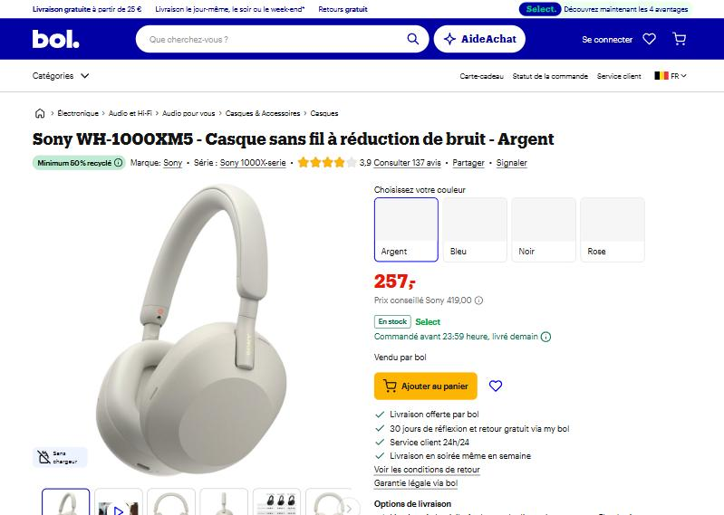
bol product page: €257, sold by bol,
order before 11:59 p.m. delivered tomorrow
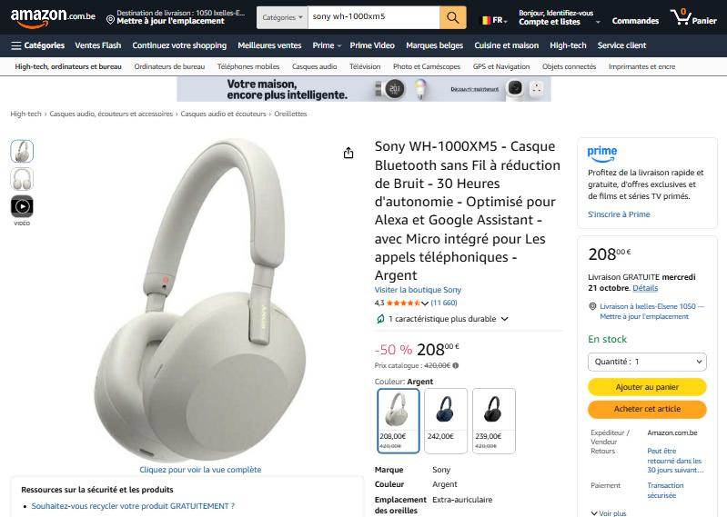
Amazon.com.be product page: €208, “-50%”
off a list price of €420, delivery in three days
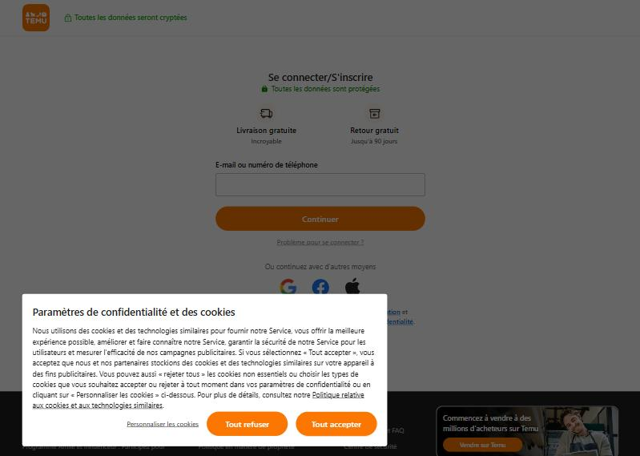
Temu: impossible to view search results
without creating an account
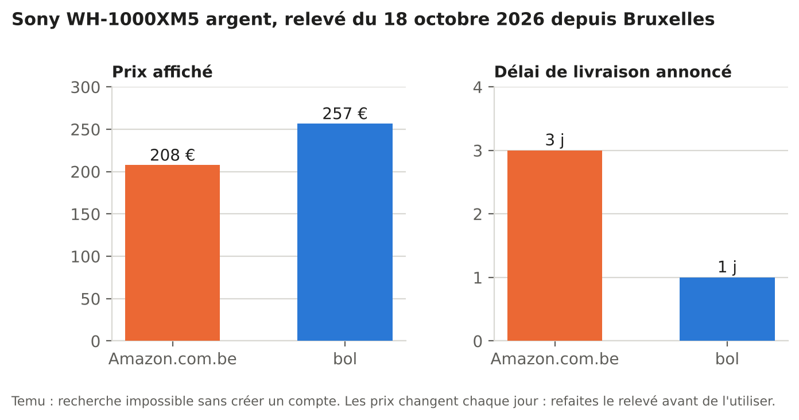
Comparison reading of 18 October
2026
Production (45 min). The one-page note and the grid.
Pooling (45 min). Each team presents its answer in four
minutes; the group confronts the starting hypotheses with the answers
found. The tutor only steps in at the end: what was seen, what was
missed, what remains open.
If you get stuck. Three leads: who captures the
difference between +5.4% and +3.4%? Why is bol 49 euros more expensive
than Amazon and yet chosen? What does Temu gain by requiring an account
before showing a search? For Amazon in Belgium: more than one billion
euros of investments announced for 2025-2027, 1,400 Belgian SME sellers,
350 million euros of export sales in 2023, including about 250 Brussels
SMEs (Amazon, October 2024 and 2025; La DH, 29 October 2024). These
figures come from Amazon: all the more reason to cite them with their
source.
And for your project. Before the end of the session:
form your team (two or three people, or alone), choose your company and
settle three questions: what does it sell? to whom? why go abroad? A
real project is preferable; the teacher offers cases failing that.
1.1 A global market of
6,400 billion dollars
Retail e-commerce, that is, the online sale of goods to consumers,
accounted for roughly 6,420 billion dollars worldwide
in 2025, up 6.8% year on year, according to EMARKETER’s forecasts
published in February 2025. The same institute expects 6,880
billion in 2026 and nearly 7,900 billion in
2028. Set against retail as a whole, e-commerce now weighs a little more
than one euro in five (around 21% in 2026), and the share keeps growing
by half a point a year.
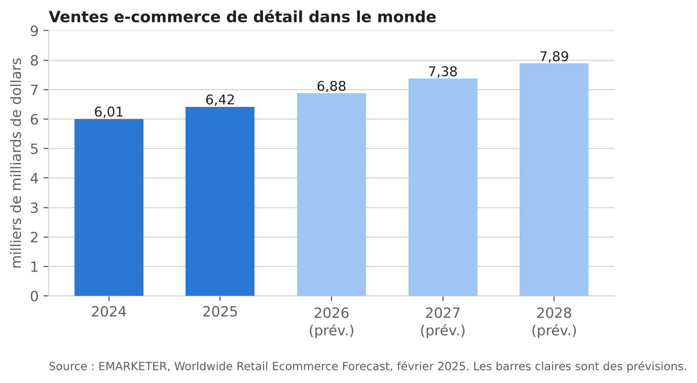
Retail e-commerce sales worldwide,
2024-2028
Three regions concentrate about 80% of these sales: China, by far the
world’s leading market, the United States and Western Europe. The
fastest growth is found elsewhere: in Southeast Asia (Philippines,
Thailand, Malaysia) and in Latin America, where a large middle class is
buying online for the first time, straight from a smartphone.
Two orders of magnitude are enough for the rest of the course:
global e-commerce growth is around 7% per year, two
to three times that of retail as a whole;
one retail purchase in five is now made online,
with large differences between countries (more than one in four in China
and the United Kingdom, fewer than one in ten in several southern
European countries).
The global figures do have a limit, though: countries do not all
measure the same thing. Some count goods only, others goods and services
(travel, tickets, subscriptions). The orders of magnitude and the trends
are reliable; comparisons down to the billion are not.
1.2 Europe and Belgium
In Europe, the annual report of Ecommerce Europe and EuroCommerce
puts B2C e-commerce at 911 billion euros in 2025, up
7%, with a forecast of 961 billion (+5%) for 2026 (European E-commerce
Report 2026, September 2026).
In Belgium, consumers spent 18.3 billion euros online in
2025, against 17.4 billion in 2024, a growth of 5.4%. More than
nine Belgians in ten buy online. The top three sectors are fashion and
footwear (2.7 billion), electronics (1.7 billion) and food and beauty
(1.26 billion) (Becom, 2025 figures published in June 2026).
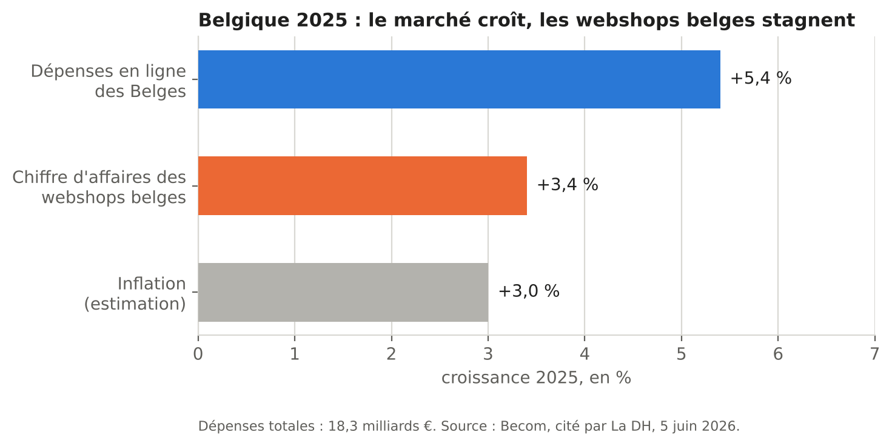
Belgium 2025: growth of the market, of
Belgian webshops and inflation
But the figure that matters for this course is a different one: the
turnover of Belgian webshops grew only by
3.4%, roughly the pace of inflation. In other words, in
volume, Belgian retailers did not sell more online in 2025 than in 2024.
The market’s growth went elsewhere: to Amazon, which opened
amazon.com.be in October 2022; to bol, the leader in Flanders and owned
by the Dutch group Ahold Delhaize; to Zalando; and above all to the
Chinese platforms. 62% of Belgians have already bought
on Shein, Temu or a comparable platform, and the same proportion say
they encountered a problem with their order there.
Two other figures from the same survey herald the rest of the course:
29% of Belgian consumers already use an artificial
intelligence assistant to search for or compare products (they were 21%
a few months earlier), and 36% say that social media
sometimes influence their purchases.
The takeaway. For a Belgian SME, international
e-commerce is not primarily a distant adventure. It is a matter of
survival on its own market: foreign competitors are already in its home.
Selling abroad also means learning to defend your place in Belgium with
the same weapons as them: transparent total price, fast delivery, local
payment methods, customer service in the customer’s language.
1.3 Thirty years of
history in five phases
Phase 1 (1995-2005): emergence. Amazon and eBay were
born in 1995, in the United States. Online payment is seen as risky,
connections are slow, delivery is expensive. The first buyers are
tech-savvy pioneers, the market is almost exclusively domestic. The
bursting of the internet bubble in 2000-2001 carries off many pioneers
(Boo.com, Webvan), but not the model.
Phase 2 (2005-2015): democratisation. Broadband,
then the smartphone (iPhone in 2007), bring online shopping into
everyday habits. Marketplaces take hold: Amazon opens its platform to
third-party sellers, Alibaba becomes the Chinese giant, bol.com
establishes itself in the Netherlands and then in Belgium. PayPal and
the first payment providers reassure buyers. The first cross-border
sales appear, often by accident: a German customer ordering from a
Belgian site without the site having planned for it.
Phase 3 (2015-2020): the structuring of
cross-border. Mobile becomes the majority of site traffic.
Providers specialised in cross-border selling (duty calculation,
currency conversion, logistics) appear, such as Global-e. Social media
become a sales channel. Zalando, Vinted and Coolblue build pan-European
brands. States begin to react: the General Data Protection Regulation
(2018) and the regulation against unjustified geo-blocking (2018) are
the first European texts designed for the online economy.
Phase 4 (2020-2024): acceleration and new rules. The
lockdowns make online shopping surge, including among audiences that
were not using it (food, seniors). On 1 July 2021, the European Union
reforms e-commerce VAT: end of the exemption for small imported parcels,
a single threshold of 10,000 euros for distance sales within the EU,
creation of the OSS and IOSS one-stop shops. In 2024, the Digital
Services Act imposes new obligations on platforms and marketplaces.
Phase 5 (since 2024): Chinese platforms and artificial
intelligence. Temu, launched in Europe in 2023, and Shein see
explosive growth thanks to very low prices, highly addictive apps and
considerable advertising budgets. Both are designated “very large
platforms” under the Digital Services Act in 2024. The Union reacts
again: since 1 July 2026, the customs duty exemption for parcels under
150 euros has disappeared, replaced by a flat duty of 3 euros per item.
In parallel, artificial intelligence assistants (ChatGPT, Perplexity,
Gemini) are changing the way people search for a product, and the first
“agentic” purchases, where an assistant compares and orders for the
consumer, are appearing.
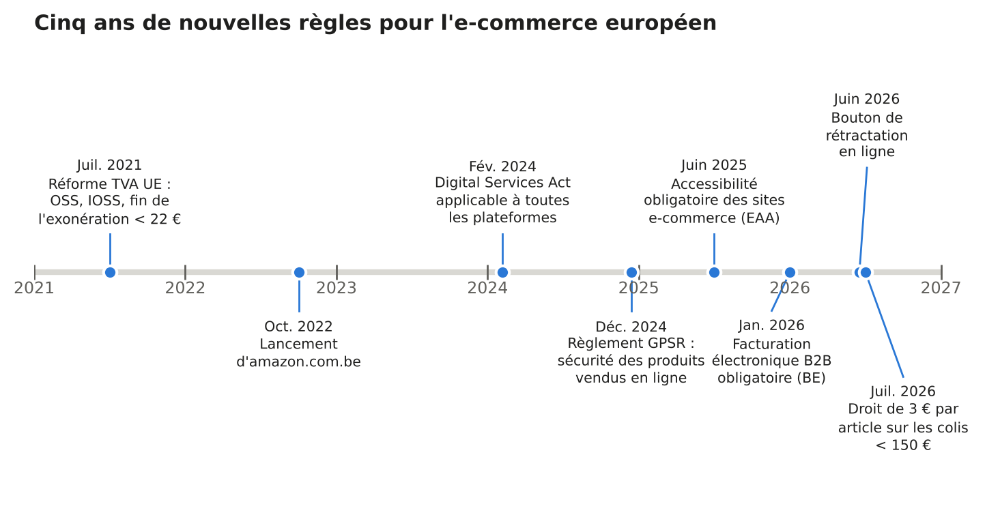
Five years of new rules for European
e-commerce
Common mistake. Placing the VAT reform and the OSS
one-stop shop “around 2015.” The reform dates from 1 July 2021 and it is
one of the most important texts for your business plan: as soon as your
distance sales to other EU countries exceed 10,000 euros per year, you
apply the VAT of the customer’s country. We will come back to this in
module 4.
1.4 Mobile and artificial
intelligence
The smartphone has become the first screen of
commerce. In most countries, the majority of visits to merchant
sites are made on mobile, and a growing share of purchases. In Southeast
Asia and Africa, many consumers have never bought any other way. The
consequences are concrete: a site designed first for the computer, with
long product pages, tedious payment forms and heavy images, loses part
of its customers before they have even seen the price. Temu’s and
Shein’s apps were designed for mobile from day one; that is one of the
reasons for their success.
Artificial intelligence is already in the shop. It
serves to translate and localise product pages (DeepL, tools built into
the platforms), to write descriptions, to recommend products, to answer
customers via chatbot, to detect payment fraud. For an SME, it is the
first time that localising a site into three languages becomes
affordable.
Artificial intelligence is also in front of the
shop. When a consumer asks ChatGPT or Perplexity “which
noise-cancelling headphones should I buy for under 300 euros?”, the
assistant answers with a few products and a few sites. Being cited in
that answer is becoming a stake comparable to ranking on Google fifteen
years ago. We will come back to this in module 3.
Augmented reality (trying on glasses or placing a
piece of furniture in your home via the phone’s camera) and
voice commerce exist, but remain niches. Do not build a
business plan on them.
The
BELGA CRAFT example: situating your project in the landscape
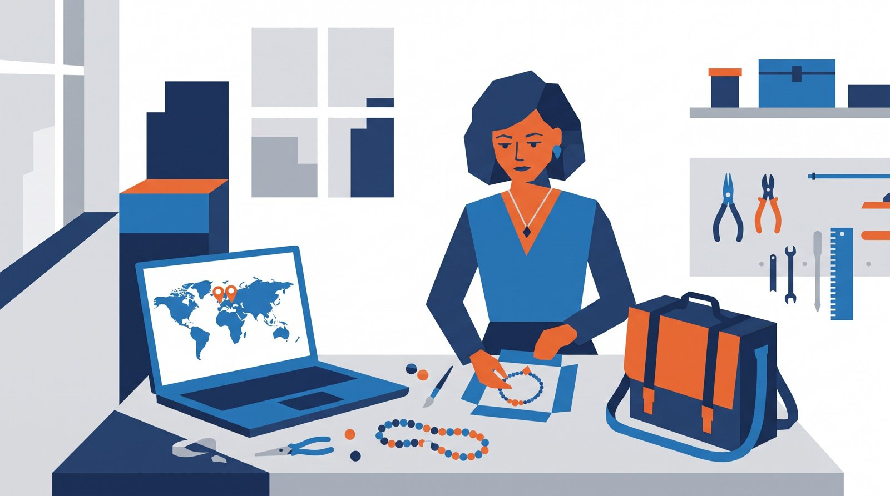
BELGA CRAFT: a workshop in Brussels, two
markets in sight
BELGA CRAFT is a maker of handcrafted jewellery based in Brussels.
She makes 450,000 euros of turnover, 85% of it through her online site,
almost exclusively from Belgian customers. She employs three people and
makes each piece to order, in three to five days. She wants to sell in
Germany and the Netherlands within 18 months.
Here is how she uses this chapter’s figures in the first page of her
business plan:
The European online sales market exceeds 900 billion euros and
grows by 5 to 7% per year (Ecommerce Europe, 2026). In Belgium, online
spending reaches 18.3 billion euros, but Belgian webshops no longer
capture the growth (+3.4% in 2025, i.e. inflation), which is taken by
foreign platforms (Becom, 2026). For BELGA CRAFT, where 85% of sales are
made online to Belgian customers, staying on a single market amounts to
depending on a market where foreign competition is intensifying. Germany
and the Netherlands are the two largest neighbouring online markets;
online jewellery there grows by 8% and 12% per year (sector figures, see
appendix). Customers there already buy craft goods from abroad: the
market exists, the question is one of model and means.
Note three things: each figure has a source and a date; the figures
serve a line of reasoning (why international, why these countries) and
are not lined up to impress; and the paragraph ends on the question that
the rest of the business plan will address.
For your project. Write the equivalent paragraph for
your company right now: three to five sourced figures, a line of
reasoning, a question. You will improve it as the modules go by. It
becomes the first page of your milestone J1.
Self-check
What is the order of magnitude of global retail e-commerce in 2025,
and its annual growth?
Why do we say that Belgian webshops are “stagnating” when Belgians’
online spending is rising by 5.4%?
Name two changes in European rules that occurred between 2021 and
2026 and explain in one sentence why each concerns an SME that sells
online.
What distinguishes phase 5 (since 2024) from the earlier
phases?
A figure read in a blog article states “73% of consumers compare
prices internationally.” What do you check before using it in your
business plan?
To watch, to read
Each link is clickable. The durations are given so that you can
choose according to the time you have. Start with the videos marked ★;
the others complement them.
To go further: Brad Stone, The Everything Store: Jeff Bezos and
the Age of Amazon (2013; French translation Amazon, la boutique
à tout vendre). The chapters on 1995-2001 tell phase 1 from the
inside.
Self-assessment
Test yourself before moving on. Multiple-choice questions are marked with one click; for open questions, write your answer first, then compare it with the model answer.
Multiple-choice questions
In 2025, Belgians spent 18.3 billion euros online (i.e. +5.4% year on year), but the turnover of Belgian webshops grew by only 3.4%, roughly the pace of inflation. How do you interpret this gap for a Brussels SME that wants to get started?
The market is growing (+5.4%) but in volume Belgian merchants are not selling more: the growth is being captured by foreign platforms. This is the central argument of the chapter for justifying defending yourself with the same weapons they use.
The reform of e-commerce VAT in the European Union (end of the exemption for small consignments, single threshold of 10,000 euros for intra-EU distance sales, OSS and IOSS one-stop shops) came into force on what date?
The course stresses it: placing this reform "around 2015" is a common mistake. It dates from 1 July 2021 (phase 4) and requires you to apply the VAT of the customer's country as soon as your intra-EU distance sales exceed 10,000 euros per year.
What best distinguishes phase 5 of e-commerce (since 2024) from the previous phases?
Phase 5 is marked by Temu and Shein (factory-to-consumer model, designated as very large platforms under the DSA) and by AI assistants (ChatGPT, Perplexity, Gemini) that are transforming product search, all the way to the first agentic purchases.
Since 1 July 2026, what has become of the customs-duty exemption that applied to imported parcels worth less than 150 euros?
The EU abolished the exemption below 150 euros in favour of a flat-rate duty of 3 euros per item as of 1 July 2026, which reduces the cost advantage of the factory-to-consumer model of Temu and Shein.
A blog article claims: "73% of consumers compare prices internationally." Before using this figure in your business plan, what is the first thing to check?
The chapter reminds you that every figure must have a source and a date, and that countries do not all measure the same thing. You trace back to the primary source and check the scope before using a figure picked up on a blog.
Open questions
Explain why, for a Belgian SME, international e-commerce is not primarily "a distant adventure" but a matter of survival in its own market.
Belgians' online spending is rising (18.3 billion euros in 2025, +5.4%), but Belgian webshops are stagnating (+3.4%, i.e. inflation): the growth is going to Amazon, bol, Zalando and the Chinese platforms (62% of Belgians have already bought from Shein, Temu or a comparable site). In other words, foreign competitors are already present in the Belgian market. An SME that does not react loses share at home. Learning to sell abroad means acquiring the same weapons as these competitors to defend your place in Belgium: a transparent total price, fast and reliable delivery, local payment methods (Bancontact), customer service in the customer's language. International expansion and defending the domestic market are therefore the same fight.
Name two changes in European rules that occurred between 2021 and 2026 and explain in one sentence, for each, why it concerns an SME that sells online.
First change: the reform of e-commerce VAT on 1 July 2021, with the single threshold of 10,000 euros for intra-EU distance sales and the OSS/IOSS one-stop shops. It concerns the SME because, as soon as its sales to other EU countries exceed 10,000 euros per year, it must apply and declare the VAT of the customer's country through the OSS one-stop shop. Second change: the abolition, on 1 July 2026, of the customs-duty exemption below 150 euros, replaced by a flat-rate duty of 3 euros per item. It concerns the SME because any item imported from outside the EU now bears this duty, which changes the total price displayed and reduces the price advantage of factory-to-consumer platforms. You could also cite the Digital Services Act (2024), which imposes new obligations on platforms and marketplaces.
What is the order of magnitude of global retail e-commerce in 2025 and its annual growth, and why must these global figures be handled with caution?
Global retail e-commerce represented roughly 6,420 billion dollars in 2025, up about 6.8% year on year (EMARKETER forecasts, February 2025); the order of magnitude to remember is about 7% annual growth, i.e. two to three times that of retail as a whole, and roughly one retail purchase in five is made online. These figures must be handled with caution because not all countries measure the same thing: some count goods only, others count goods and services (travel, tickets, subscriptions). The orders of magnitude and the trends are reliable, but comparisons down to the billion are not. You must therefore always cite the source, the date and the scope.
BELGA CRAFT wants to sell in Germany. Should she translate her site
and attract German customers herself, or open a shop on Amazon.de and
Etsy, where the customers already are? Both? In what order? The answer
is not the same depending on the business model she chooses.
Problem scenario 2:
“Site, marketplace, or both?”
The situation. The founder of BELGA CRAFT has
received three contradictory pieces of advice in one week. Her
accountant: “Open a shop on Amazon.de, everyone’s there, you’ll have
German customers from the first month.” A fellow maker and friend:
“Absolutely not, Amazon killed my margin and copied my bestsellers;
Etsy, at a pinch.” Her web developer: “Your Shopify is ready, add German
and Dutch, and let’s launch.” She has 150,000 euros, 18 months, and a
team of three. She asks you to decide, and to explain why, in one page
and a diagram.
What you must produce. BELGA CRAFT’s Business Model
Canvas as it should be in 18 months, with the boxes
that change because of international marked with an asterisk, and a
channel recommendation: own site, marketplace, or combination, in what
order, with the three main reasons and the main risk.
Sequence (4 periods).
Group analysis (30 min, without the chapter). Clarify:
marketplace, D2C, commission, “factory-to-consumer”, cross-border. State
the problem: what is really at stake in this choice (margin? customer
relationship? time? risk?). Brainstorm: all the possible channels for a
small jewellery brand, then group them. Learning objectives: what do you
need to know in order to choose?
Research (45 min). Chapter 2, in particular 2.3 and 2.4;
the public fee schedules of Amazon, Etsy and bol for sellers; a video
testimonial from the video library.
Production (60 min). The canvas on A3 or Miro, starting
with the segments and the value proposition, finishing with the costs.
The recommendation on one page.
Pooling (45 min). Three-minute pitch to another team, which
asks two questions; then plenary debate: the teams that chose different
answers explain themselves. The tutor closes.
If you get stuck. Compare what each channel costs
(commission, internal advertising, imposed logistics) and what it brings
(traffic, trust, customer data). Ask yourself who owns the relationship
with the customer in each case. And reread the seven differences of
cross-border (2.4): which ones does a marketplace handle on your
behalf?
And for your project. Redo the exercise for your
company: it is the heart of milestone J1.
Milestone J1 — to be submitted at the end of session 2 (2 to
4 pages). The company sheet: activity, products, current
figures, business model (main and secondary forms, channels), Business
Model Canvas, international ambition and the figures-based context
paragraph. The milestone receives written feedback before session 4.
2.1 Who sells to whom:
the four basic forms
The teaching unit’s programme asks you to distinguish four forms of
e-commerce. They are defined by the nature of the seller and that of the
buyer.
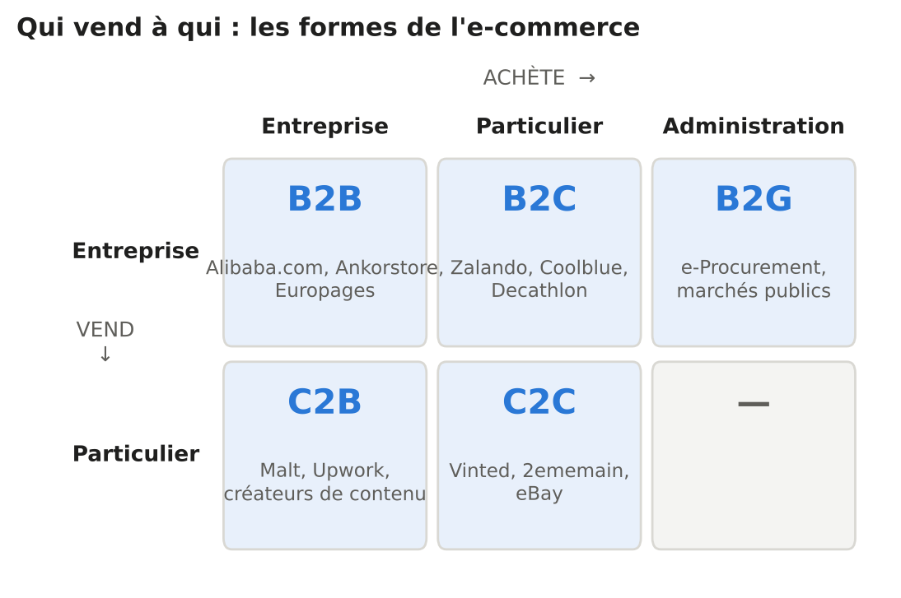
Who sells to whom: the forms of
e-commerce
Business to Consumer (B2C)
A company sells directly to the end consumer. It is the most visible
form: Zalando, Coolblue, Decathlon, the online shop of a brand or a
craftsperson. Volumes are large, average baskets rather small, and
marketing addresses the general public. The B2C customer is protected by
consumer law: 14-day right of withdrawal, two-year legal guarantee,
pre-contractual information, price display rules.
Internationally, B2C concentrates all the difficulties that this
course will address: language, currency, the payment methods expected in
each country, last-mile delivery, returns, the VAT of the customer’s
country. In return, a German or Dutch consumer does not ask for a sales
appointment: if the site is convincing, they buy.
Business to Business (B2B)
Companies sell to other companies: a wholesaler to retailers, a parts
manufacturer to industrial firms, a software publisher to SMEs. Online
examples range from Alibaba.com (a global supplier platform) to
Ankorstore (a European marketplace where independent shops buy from
brands), by way of wholesalers’ sales sites.
Online B2B was long behind B2C, but it exceeds it in value: orders
are larger, often recurring, and professional buyers now want the same
comfort as in their private life (clear catalogue, ordering in a few
clicks, tracking). Three specifics: prices are often negotiated or
tiered and hidden from non-customers; payment is made at 30 or 60 days
rather than on order; the invoice is a central document. In Belgium,
since 1 January 2026, structured electronic invoicing (the Peppol
network) has been mandatory between VAT-registered companies: a Belgian
B2B site must be able to issue it.
Consumer to Consumer (C2C)
Private individuals sell to other private individuals through a
platform: Vinted for clothing, 2ememain (Marktplaats in the Netherlands)
for a bit of everything, eBay historically. The platform sells nothing
itself: it makes money through commissions, “buyer protection” fees,
promotion options and advertising.
C2C lives on trust between strangers. All its know-how consists of
manufacturing it: ratings, payment held in escrow until receipt,
built-in shipping labels, moderation. Since 2023, the European DAC7
directive has required platforms to transmit to the tax authorities the
data of sellers who exceed 30 sales or 2,000 euros per year: C2C is no
longer a grey area.
Business to Government (B2G)
Companies sell to public administrations: municipalities, Regions,
the federal State, European institutions. Public purchases go through
public procurement procedures; in Belgium, the e-Procurement platform
publishes the notices and receives the bids. B2G is not a “webshop” in
the usual sense: prices, criteria and deadlines are set by the
contracting authority’s requirements specification, and social and
environmental criteria carry more and more weight. For an SME, B2G is a
stable source of revenue but requires real administrative capacity.
Common mistake. Believing that these four forms are
mutually exclusive. Most companies combine two or three of them. A
furniture manufacturer sells to private individuals on its site (B2C),
to architects and hotels via a professional area (B2B) and responds to
municipal tenders for schools (B2G). Your business plan must say which
form is central and which are secondary.
2.2 Hybrid and emerging models
B2B2C: selling to the consumer through an
intermediary. The brand remains the seller, but the transaction
goes through a platform that brings the audience: a third-party seller
on Amazon or bol, an app on the App Store, a creator on Etsy. The
advantage is immediate: millions of visitors from day one, payment and
often logistics taken care of. The price to pay is threefold: a
commission (of the order of 8 to 15% depending on the category on
Amazon, more if the platform handles logistics), dependence on rules you
do not control, and the loss of the direct relationship with the
customer, whose data the platform keeps.
Direct-to-consumer (D2C): the brand without an
intermediary. Conversely, some brands refuse distributors and
marketplaces, selling only on their own site and, sometimes, in their
own stores. They keep the distributor’s margin and the knowledge of
their customers. But they must pay for each visitor (advertising, social
media) and provide after-sales service on their own in each country. The
VanMoof case, developed in the appendix, shows what happens when the
second part is neglected.
Consumer to Business (C2B): the individual as
supplier. Freelancers sell their services to companies via Malt
or Upwork; photographers sell their images to image banks; content
creators sell their audience to brands. C2B is of interest to this
course for one reason: it is where many e-merchants find their
translators, their photographers and their copywriters
internationally.
Social commerce: buying without leaving the social
network. Instagram, TikTok Shop or Facebook Marketplace allow
you to buy directly in the feed. In China, livestream commerce (live
video selling) represents a major share of online sales; in Europe, it
remains marginal but is growing. In Belgium, 36% of consumers say that
social media sometimes influence their purchases (Becom, 2026). For a
small brand, social commerce is often the first international channel: a
post seen in Cologne or Utrecht costs the same as a post seen in
Namur.
The factory-to-consumer model. Temu and Shein have
pushed a new logic: the platform directly connects Chinese factories and
European consumers, without stock in Europe, with very low prices and
lead times of one to two weeks. This model relies on sending millions of
small parcels individually, long exempt from customs duty under 150
euros. It is precisely this exemption that the European Union removed on
1 July 2026, in favour of a 3-euro duty per item. The model is not dead,
but its cost advantage has shrunk.
2.3
Own site or marketplace: the decision that shapes everything
For an e-merchant who wants to sell abroad, the first concrete
decision is not the country: it is the channel. Three options, often
combined.
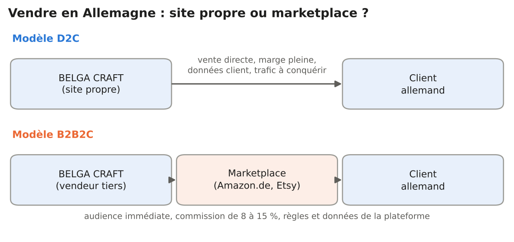
Selling in Germany: own site or
marketplace?
Own site
Marketplace
Both
Audience
To be built, country by country
Immediate
Immediate on the marketplace, to be built on the site
Margin
Full
Minus the commission (8 to 15%, plus logistics)
Mixed
Customer data
Yours
The platform’s
Partial
Foreign customer’s trust
To be earned
Carried by the platform
Carried at first, transferred afterwards
Dependence
Low
High (rules, suspension, competition from the platform itself)
Reduced
Up-front investment
Site, translation, marketing
Low
Medium
For whom
Differentiated brand, high-margin products, loyal customer base
Comparable products, testing a market, small volumes
The majority of SMEs after a year
A widespread practice is to test a market on a
marketplace (Amazon.de, bol, Etsy, Zalando depending on the
sector) for six to twelve months, to check that there is demand and to
learn local expectations at low cost, then to open a localised
version of the site when the volume justifies the investment.
Loyal customers are then invited to buy directly, where the margin is
better.
Common mistake. Choosing the marketplace “because
it’s easy” and discovering after a year that you don’t know any of your
German customers, that the platform has lowered its own prices on the
same products, and that a three-week account suspension over a dispute
dropped turnover to zero. The marketplace is an excellent entry channel,
provided you plan for what comes next from the start.
2.4
Cross-border: what changes when the customer is abroad
Selling to a German customer from Brussels resembles selling to a
customer in Liège, with seven differences. Each will be addressed in a
module of the course.
Difference
What the customer expects
Module
Language
A site, emails and customer service in their language
2
Trust
Signs that they can trust you even though they don’t know you:
reviews, labels, address, legal notices
2 and 5
Price
The total price, taxes and delivery included, in their currency,
with no surprise at delivery
3 and 4
Payment
The payment method they use at home: iDEAL in the Netherlands,
pay-on-invoice or PayPal in Germany, Bancontact in Belgium
4
Delivery and returns
An announced and respected lead time, a pick-up point, a simple
return
4
VAT and customs
Nothing: it is up to you to handle them (OSS one-stop shop within
the EU, customs duties outside the EU)
4
Law
The protection of their own consumer law
Appendix A
In B2B, the differences relate more to the terms of sale (Incoterms,
payment deadlines, financing) and to product compliance; these points
are explored in depth in the teaching unit 719105U32D2.
Two figures to measure the stake: in 2023, the 1,400 Belgian SMEs
present on Amazon made 350 million euros of export sales, and 90% of the
turnover of the 250 Brussels SMEs concerned came from abroad (Amazon and
La DH, October 2024). The marketplace was, for most of them, the entry
point.
2.5 The chapter’s
tool: the Business Model Canvas
Alexander Osterwalder’s Business Model Canvas sums up a business
model on one page in nine boxes. You probably came across it in the
“Marketing fundamentals” unit; we use it here as the first building
block of the business plan, because it forces you to answer this
chapter’s questions: to whom do we sell, what, through which channel,
and how do we make money.
The nine boxes, in the order in which it is useful to fill them
in:
Customer segments: who buys, in which
countries.
Value proposition: why they buy from you rather
than elsewhere, market by market.
Channels: own site, marketplaces, social media,
points of sale.
Revenue streams: sales, subscriptions, commissions;
by market.
Key resources: that without which the model does
not work.
Key activities: what you do yourself.
Key partners: what you entrust to others
(logistics, payment, translation).
Cost structure: the fixed and variable costs,
including those specific to international.
For an international project, fill in one version per target market
when the value proposition or the channels differ. Often, a single
version with “DE” and “NL” tags in the relevant boxes is enough.
The BELGA
CRAFT example: its Business Model Canvas
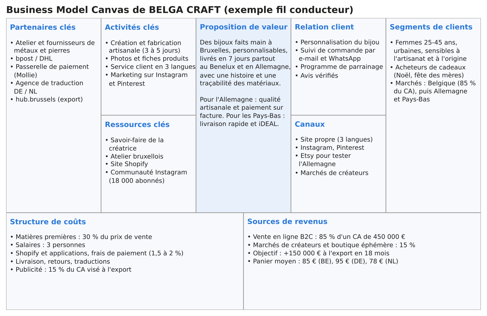
BELGA CRAFT’s Business Model
Canvas
Three choices stand out from the canvas:
The model stays B2C and D2C: BELGA CRAFT sells on
its own site, in three languages. But it adds Etsy as a test
channel for Germany, because Etsy’s clientele is looking
precisely for craft goods and the investment is low.
The value proposition is tailored by market:
artisanal quality and pay-on-invoice for Germany, fast delivery and
iDEAL for the Netherlands. These are hypotheses; they will be checked
through interviews in module 2.
The costs specific to international already appear:
translation, export advertising (15% of the target turnover),
cross-border delivery and returns.
This canvas fits on one page and already contains half of milestone
J1.
For your project. Fill in your company’s canvas
after problem scenario 2. Highlight (colour, asterisk) everything that
changes because of international. If nothing changes, it means you have
not yet thought about the foreign market.
Self-check
Give a Belgian or European example for each of the four forms B2C,
B2B, C2C and B2G, and one constraint specific to each.
What is a B2B2C model? Name two advantages and two disadvantages for
an SME.
Why does the removal of the customs exemption under 150 euros affect
Temu more than a Belgian webshop?
A Liège cosmetics brand is hesitating between opening a shop on
Amazon.de and launching a German version of its site. What criteria do
you suggest for deciding, and what sequence?
In a Business Model Canvas, where do the costs specific to
international appear? Name four of them.
★ Alexander Osterwalder and Yves Pigneur, Business Model
Generation (2010; French translation Business Model Nouvelle
Génération, Pearson): the pages that present the nine boxes. The
blank template can be downloaded at strategyzer.com.
Test yourself before moving on. Multiple-choice questions are marked with one click; for open questions, write your answer first, then compare it with the model answer.
Multiple-choice questions
A furniture brand sells to private individuals on its website, to architects and hotels through a professional area, and responds to municipal tenders to equip schools. What does this example show about the four forms B2C, B2B, C2C and B2G?
The course points out the common mistake of believing that these forms are mutually exclusive: here the brand does B2C (website), B2B (professional area) and B2G (public procurement). The business plan must rank the central form and the secondary ones.
In a B2B2C model (third-party seller on Amazon or bol, maker on Etsy), what is the main "price to pay" in exchange for the immediate audience brought by the platform?
B2B2C gives you millions of visitors from day one, but at the cost of a commission (8 to 15% depending on the categories on Amazon, more if logistics are provided), dependence on the platform's rules and the loss of customer data.
Why does the abolition of the customs exemption below 150 euros (3-euro duty per item since 1 July 2026) affect Temu more than a traditional Belgian webshop?
The factory-to-consumer model links Chinese factories to European consumers through millions of small parcels, long exempt below 150 euros. The 3-euro duty per item strikes these consignments directly; a Belgian webshop, which does not import parcel by parcel from China, is far less affected.
An SME wants to test a foreign market at low cost before investing. Which sequence does chapter 2 most often recommend?
The widespread practice is to test a market on a marketplace (Amazon.de, bol, Etsy, Zalando) for six to twelve months at low cost, then open a localised website when the volume justifies the investment, with loyal customers then being invited to buy directly where the margin is better.
In a Business Model Canvas filled in for an international project, in what order does the chapter advise starting, and why?
The canvas is usefully filled in by starting with the customer segments then the value proposition (to whom and why they buy), and ending with the cost structure. The BELGA CRAFT exercise follows this order, on A3 or Miro.
Open questions
A cosmetics brand from Liège is hesitating between opening a store on Amazon.de and launching a German version of its own website. What criteria would you propose for deciding, and what sequence would you recommend?
I would propose comparing each channel on the criteria from point 2.3: the audience (immediate on Amazon.de, to be built on the website), the margin (full on the website, minus an 8 to 15% commission plus logistics on the marketplace), ownership of customer data (yours on the website, the platform's on Amazon), the German customer's trust (carried by the platform vs. to be earned alone), dependence (high on the marketplace: rules, risk of suspension, competition from the platform itself) and the initial investment. I would also ask her who owns the customer relationship in each case. Recommended sequence: first test Amazon.de (or Etsy depending on the positioning) for six to twelve months to verify German demand and learn local expectations at low cost, then open a localised German version of the website when the volume justifies it, gradually shifting loyal customers over to recover the margin and the data. The main risk to anticipate from the start: dependence on the marketplace and loss of contact with customers.
Give a Belgian or European example for each of the four forms B2C, B2B, C2C and B2G, and cite a constraint specific to each.
B2C (company to end consumer): Zalando, Coolblue, Decathlon or a craftsperson's shop; constraint: consumer law (14-day withdrawal right, two-year legal guarantee, pre-contractual information and price display). B2B (company to company): Alibaba.com or Ankorstore; constraint: negotiated or hidden volume-based prices, payment at 30 or 60 days, a central invoice, and in Belgium mandatory structured electronic invoicing (Peppol) between taxable persons since 1 January 2026. C2C (private individual to private individual via a platform): Vinted, 2ememain, eBay; constraint: building trust between strangers (ratings, escrow payment, moderation) and, since 2023, the DAC7 directive, which requires transmitting to the tax authorities the data of sellers exceeding 30 sales or 2,000 euros per year. B2G (company to administration): public procurement via the e-Procurement platform; constraint: public procurement procedures, specifications imposing prices, criteria and deadlines, the requirement of real administrative capacity, and the growing weight of social and environmental criteria.
Cross-border introduces seven differences compared with a domestic sale. Cite at least five and indicate, for each, what the foreign customer expects.
The seven differences from point 2.4: (1) language - a website, emails and customer service in his own language; (2) trust - signs that he can trust you even though he does not know you: reviews, trust marks, address, legal notices; (3) price - the total price, taxes and delivery included, in his currency, with no surprise on delivery; (4) payment - the method he uses at home: iDEAL in the Netherlands, pay-on-invoice or PayPal in Germany, Bancontact in Belgium; (5) delivery and returns - an announced and respected delivery time, a pickup point, an easy return; (6) VAT and customs - nothing visible to him, it is up to the seller to handle them (OSS one-stop shop within the EU, customs duties outside the EU); (7) law - the protection of his own consumer law. Each of these differences is dealt with in a module of the course; a marketplace takes several of them on in the seller's place, which explains its appeal as an entry channel.
This module corresponds to the third point of the official programme:
categorising the profiles of online consumers and analysing their
behaviour. It feeds into the “Consumers” section of your business plan
and two parts of the requirements specification: linguistic adaptation
and the welcome given to visitors. It is also in this module that you
choose your two markets.
Self-assessment
Test yourself before moving on. Multiple-choice questions are marked with one click; for open questions, write your answer first, then compare it with the model answer.
Multiple-choice questions
In summary of chapters 3 and 4, why do segmentation (personas) and localisation go hand in hand in an international e-commerce project?
Personas say who the customers are and what they expect; localisation translates these expectations into decisions about the website. At BELGA CRAFT, Lena's refusal to pay by card (persona) imposed PayPal and pay-on-invoice (localisation).
A market shows high uncertainty avoidance (Hofstede) and has many "security-seeker buyers" (Klarna). Which combination of choices is the most consistent?
The Klarna profile and the Hofstede dimension converge: a low tolerance for risk and a need for reassurance call for guarantees, trust marks, clear conditions, pay-on-invoice and a visible identity. Urgency and a playful tone are aimed at other profiles.
Faced with a cart-to-order conversion rate four times lower on the German market (Lena's case), what is the right approach according to the module?
A conversion gap rarely has a single cause. The module invites you to talk to customers (for lack of a budget) and to look at the concrete points: the moment of abandonment, the payment methods offered, the language of the reminders, the total price revealed at the end. "They do not like our jewellery" does not explain 61 carts created.
In BELGA CRAFT's choice of the two markets, why is the United Kingdom set aside despite its size, and the Netherlands selected?
The United Kingdom, a large market, has become a separate undertaking since Brexit (customs, VAT, fees on import): low feasibility. The Netherlands combines proximity, a mastered language, easy delivery and iDEAL payment simple to integrate, hence the best weighted score.
Open questions
Module 2 requires that the personas and the choice of markets rest on real interviews, not on intuition. Explain why, and describe the "no-budget" research approach proposed.
The risk, in e-commerce, is to have a lot of data on visitors' behaviour (where they come from, where they abandon) but very little on who they are and what they want: typologies (Klarna) and personas fill this gap, provided they rest on reality. A typology is only a starting point, never a truth; likewise, an adaptation observed on a competitor's website may be cultural, but also legal, logistical or commercial - only interviews settle the matter. The no-budget approach: build an interview guide of ten questions at most (the last purchase on a foreign website, discovery, the trigger, hesitations, payment method, delivery and returns, abandonments, what inspires trust), conduct four to five ten-minute interviews with people resembling the target customers (international students, colleagues, Instagram contacts), record only with consent, then draw from them a summary, two or three personas per market and a step-by-step customer journey with the abandonment points. At BELGA CRAFT, this research surfaced three findings (discovery through Pinterest/Instagram, the importance of the story of the materials, the refusal of card payment) that directly changed the requirements specification. The rule "your personas must come out of your interviews, not out of your head" also applies to the students' project.
Link the work of chapter 3 (profiles and purchase levers) to that of chapter 4 (localisation and choice of markets) to explain how milestone J2 is built.
Milestone J2 is the culmination of the module: it requires the reasoned choice of two markets via the attractiveness-feasibility matrix, two personas per market, and the list of localisation points (language, payments, delivery, trust mentions, calendar). Chapter 3 provides the human material: you must first know who buys and why - Klarna profiles, levers (speed and mobile, trust on the product page, price transparency, payment familiarity, delivery and returns, social proof, controlled urgency) and barriers - then translate these observations into personas drawn from interviews. Chapter 4 provides the decision method: first choose where to sell (the matrix, avoiding over-weighting market size), then what to adapt (translating is not localising; Hofstede helps formulate hypotheses on payments, trust mentions, visuals, tone and calendar). The link is direct: every abandonment point identified in a persona's journey becomes a localisation point in the requirements specification (module 5) or an action in the marketing plan (module 3). Thus J2 is not an abstract list but the synthesis of what the interviews (ch. 3) and the market analysis (ch. 4) have revealed.
Module 2 · The consumer · Chapter 3 · ~12 min read
Who buys online, and why
Session 3 — 4 periods
Opening question
A German customer and a Belgian customer are looking at the same
BELGA CRAFT product page. The Belgian buys; the German closes the page.
Same product, same price, same site. What happened?
Problem scenario
3: “Lena abandoned her basket”
The situation. An extract from BELGA CRAFT’s
dashboard, three months after the launch of the German version of the
site: 4,200 German visitors, 61 baskets created, 9 orders. In Belgium,
over the same period, the orders-to-baskets ratio is four times better.
The basket-recovery emails went unanswered. The marketing manager has a
theory: “German women don’t like our jewellery.” The logistics manager
has another: “It’s the 9.90 euro delivery charge.” The designer has
none: she doesn’t know a single German customer. You have a week, no
budget, and a single way to learn more: talk to people.
What you must produce. An interview guide, the
write-ups of four to five interviews with people who resemble your
target customers (international students at the school, colleagues, your
network), the classification of the people you met according to Klarna’s
typology, two personas on the Lena model, and a reasoned answer to the
question: why did 52 baskets out of 61 fail to convert?
How it unfolds (4 periods, partly done
independently).
Group analysis (30 min, without the chapter). Make sense of
the figures (what is a rate of 9/61 worth?). List every possible reason
for abandoning a basket on a foreign site; sort them by stage of the
journey; turn them into hypotheses. Learning objectives: what do you
need to know about German shoppers, and how can you learn it without a
budget?
Research (30 min). Chapter 3 (profiles, drivers and
barriers, the persona method). Build your interview guide, ten questions
at most. A starting point: when did you last buy on a site from another
country, and what? how did you discover it? what made up your mind? did
you hesitate, and why? how did you pay? how did the delivery go, and the
return if there was one? have you ever given up on a purchase on a
foreign site, and at what point? what would make you trust an unfamiliar
site?
Fieldwork (independently, 1 period). Four to five
ten-minute interviews. Record only with consent.
Production and pooling (2 periods). A two-page summary with
three striking quotations; two personas; for one of them, the five-stage
journey with, at each stage, what they expect and what might make them
give up. Pooling: the initial hypotheses set against what the interviews
revealed. The tutor closes on what the data does not tell you.
If you get stuck. A basket → order conversion rate
four times lower rarely has a single cause. Look at the exact moment of
abandonment (the recovery email went unread: why?), the payment methods
offered, the language of the emails, the total price shown at the end.
And be wary of the first theory that comes along: “they don’t like our
jewellery” does not explain 61 baskets created.
And for your project. Run the survey again for your
own markets: your personas (milestone J2) must rest on real interviews,
not on your intuition.
3.1 Why segment online
shoppers
A site that addresses everyone addresses no one. An e-merchant’s
first decision is not technical: it is deciding who they are talking to.
Marketing calls this segmentation; online, it has a particular feature:
you have a great deal of data on visitors’ actual behaviour (where they
come from, what they look at, where they drop off), but very little on
who they are and what they want. Typologies and personas serve to fill
that gap.
3.2 A starting
typology: Klarna’s four profiles
Klarna’s study on the psychology of online shopping, carried out
among Belgian consumers, crosses two axes: rational or emotional, modern
or traditional. From this it derives four profiles.
Profile
Who they are
What they expect
How they buy
Happy shoppers (modern, emotional)
Curious, spontaneous, social
Pleasure, novelty, discovery through social media
Impulsive, happy to try an unknown brand
Smart shoppers (modern, rational)
Organised, demanding
Value for money, service, reliable delivery
Compare, read reviews, use comparison sites
Wary conservatives (traditional, emotional)
Anxious about online shopping
Simplicity, reassurance
Short journeys, need signs of trust
Security seekers (traditional, rational)
Cautious, methodical
Security, transparency, reliability
Check everything, prefer well-known retailers
This typology is nothing scientific in the strict sense, and it is
not the only one. It is useful for a practical reason: each profile
calls for different responses on the site. A “happy shopper” wants
novelty and visuals; a “security seeker” wants to see the company’s
address, the VAT number, the labels, the return conditions and a payment
method they know. A site that speaks only to the former loses the
latter, and vice versa.
Common mistake. Taking a typology for a truth. The
profiles are starting points. What counts is your own observations: the
interviews from problem scenario 3 and, later, the data from your
site.
3.3 What triggers or
blocks an online purchase
Studies come and go and contradict one another on the percentages,
but they agree on the drivers. Here they are, in the order the visitor
encounters them.
Before even seeing the product: speed and mobile. A
site that takes more than three seconds to display on a smartphone has
already lost some of its visitors. This is not a matter of taste, it is
measurable, and Google measures it for you (the PageSpeed Insights tool,
presented in module 5).
On the product page: trust. Sharp and numerous
photos, a precise description, reviews from identifiable customers,
clear availability. For a foreign site, the question “who is behind this
site?” is added: an address, an identifiable company, a telephone number
or a chat that responds.
At the price stage: transparency. The visitor wants
to know the total price before starting to fill in a form: product,
delivery, taxes, any duties. A charge that appears at the last step is
the leading cause of basket abandonment, in every survey, in every
country.
At payment: familiarity. Each market has its
preferred payment methods. A Dutch shopper looks for iDEAL; a German,
PayPal or payment by invoice; a Belgian, Bancontact. Not offering it
means asking the customer to trust a stranger with their bank card. Many
refuse.
Around the purchase: delivery and returns. The
announced lead time, the choice of location (home, pick-up point),
tracking, and above all a readable returns policy. The fear of not being
able to send back a disappointing product weighs more heavily for a
purchase abroad.
Then: social proof and reward. Reviews,
recommendations, influencers, loyalty programmes and personalised offers
all bear on the decision and on repeat purchases.
And one driver to handle with care: urgency. “Only 2
left in stock”, “offer valid for 2 hours”. Effective, but regulated:
false urgency is a misleading commercial practice under European law
(see annex A).
3.4 Generations,
countries and Chinese platforms
18-34 year-olds buy abroad and via social media more
often; they discover brands on Instagram, TikTok and Pinterest rather
than on Google. People over 50 buy less across borders,
but with often higher baskets and more loyalty. Between neighbouring
countries, the gaps are real: the Dutch are among the biggest online
shoppers in Europe per capita; Germans return far more items than
Belgians, especially in fashion.
Chinese platforms have changed the game: 62% of
Belgians have already bought on Shein, Temu or a comparable platform,
and just as many say they have run into a problem there (Becom, 2026).
They have accustomed part of the consumer base to very low prices and
highly engaging apps, but they have also created a demand for trust:
knowing where the product comes from, who answers if there is a problem,
whether standards are met. This is an opening for a European brand that
plays the transparency card.
Finally, 29% of Belgian consumers already use an AI
assistant to search for or compare products (Becom, 2026). The “I ask
ChatGPT, then I click on the site it cites” journey now exists; it is
covered in module 3.
3.5 The case of luxury and
premium
For a piece of jewellery, a bag or a watch, the logic of price is
partly reversed. The customer buys a story, a status, an experience, and
the high price is part of the product. Scarcity (limited series, one-off
pieces) increases desire instead of curbing it; storytelling justifies
the value; the packaging, the handwritten card and the after-sales
service are part of the purchase. Online, this translates into carefully
produced photos and videos, the story of how it is made, and attention
to the parcel as received. BELGA CRAFT plays in this category, even with
an 85 euro average basket: it is craftsmanship, and the customer wants
to know it.
3.6 The chapter’s tool: the
persona
A persona is a fictional but realistic portrait of a typical
customer, built from data (interviews, surveys, site statistics) and not
from the imagination. It serves to make decisions: when you hesitate
over a payment method, a button colour or a returns policy, you ask
yourself what Lena would do.
A good persona fits on one page:
Identity: first name, age, city, occupation,
situation.
Digital behaviour: devices, purchase frequency,
where they discover brands, how they compare.
Motivations: why they would buy from you.
Barriers: what would stop them.
One quotation drawn from a real interview.
Their journey: from discovery to after-sales.
Two or three personas per market are enough. Beyond that, you no
longer use them.
The BELGA CRAFT
example: Lena, 34, Cologne
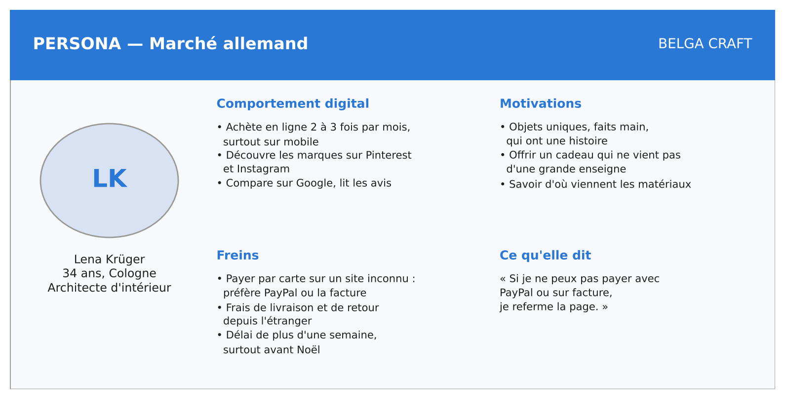
BELGA CRAFT persona for the German
market
Lena was born out of six interviews conducted by BELGA CRAFT with
potential German customers (two expatriates in Brussels, four Instagram
contacts). Three elements came out of every interview: discovery through
Pinterest and Instagram, the importance of the story of the materials,
and the refusal to pay by card on an unfamiliar site. The last point
directly changed the requirements specification: PayPal and payment by
invoice (via Klarna) became mandatory for the German version.
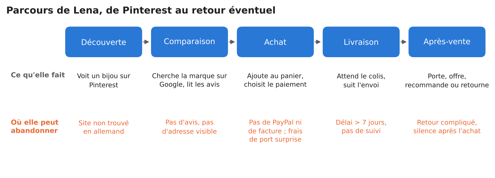
Lena’s journey, from discovery to a
possible return
The journey also shows where Lena may drop off at each stage. Each of
these points becomes a requirement in the requirements specification
(module 5) or an action in the marketing plan (module 3).
For your project. Your personas must come out of
your interviews, not out of your head. If you have not yet spoken to a
single potential customer in your target market, that is the priority
for your independent hours this week.
Self-check
Describe Klarna’s four profiles and, for each, one element of a site
that reassures them.
Name the three purchase drivers that matter most for a cross-border
purchase, and explain why they weigh more heavily than for a domestic
purchase.
What is a persona, where does its information come from, and what is
it concretely used for?
Lena refuses to pay by card on an unfamiliar site. What decisions
does this entail for BELGA CRAFT?
In what way have Chinese platforms changed Belgian consumers’
expectations, and what opening does this create for a European
brand?
The reference investigation into influence techniques
To read
★ Klarna, Psychology of E-commerce: the summary of the
Belgian study is available on Klarna’s press site (search for “Klarna
shopper types Belgium”). 15 minutes.
Eurostat, “E-commerce
statistics for individuals”: who buys online in Europe, by age and
by country, with the share of purchases from sellers in other EU
countries. In English, 15 minutes, figures updated each year.
Test yourself before moving on. Multiple-choice questions are marked with one click; for open questions, write your answer first, then compare it with the model answer.
Multiple-choice questions
A visitor matches Klarna's "security seeker" profile (traditional, rational). Which element of the website will reassure him most and push him to complete his purchase?
The security seeker checks everything and prefers well-known brands: he looks for concrete signs of reliability (the company's identity, trust marks, return conditions). Novelty and urgency are aimed instead at "happy buyers".
In all surveys, what is the leading price-related cause of cart abandonment?
The course insists on transparency: the visitor wants to know the total price (product, delivery, taxes, duties) before filling in a form. A charge that appears at the end is the leading cause of abandonment, in every country.
A Dutch customer reaches the payment step on a Belgian website. To maximise conversion in that market, which payment method must absolutely be offered?
Every market has its habits: the Dutch customer looks for iDEAL above all. Bancontact is the Belgian reflex, pay-on-invoice the German reflex; not offering the expected method amounts to asking the customer to entrust his card to a stranger.
Among these statements about the persona, which one matches the course's definition?
The persona is fictional but realistic: it rests on data, not on intuition, and is used to decide (which payment method, which button colour, which return policy) by asking "what would Lena do?".
According to the course, how does the rise of the Chinese platforms (Shein, Temu) create an opening for a European brand?
62% of Belgians have bought from this type of platform and just as many ran into a problem there (Becom, 2026). Hence a demand for transparency - knowing where the product comes from and who answers - that a European brand can meet.
Open questions
Present the four buyer profiles of the Klarna typology and, for each, indicate a concrete element of the website that reassures or appeals to it.
The Klarna typology crosses two axes (rational/emotional and modern/traditional) and distinguishes four profiles. The happy buyer (modern, emotional) is spontaneous and social: offer him novelty, beautiful visuals and discovery through social media. The smart buyer (modern, rational) compares and reads reviews: give him good value for money, customer reviews, reliable delivery and comparison tools. The distrustful conservative (traditional, emotional) is anxious: he needs a short, simple journey and reassurance signals. The security seeker (traditional, rational) checks everything: display the company's address, the VAT number, the trust marks, detailed return conditions and a familiar payment method. A website that speaks only to the first two profiles loses the other two, and vice versa: the typology serves to balance the website.
What is a persona, where does its information come from and what is it concretely used for? Illustrate with the example of Lena at BELGA CRAFT.
A persona is a fictional but realistic portrait of a typical customer, fitting on one page: identity, digital behaviour, motivations, barriers, a real quote and the journey from discovery to after-sales. Its information comes from data - interviews, surveys, website statistics - and not from imagination. It is used to settle concrete decisions: when you hesitate over a payment method or a return policy, you ask "what would Lena do?". Lena, 34, from Cologne, was born from six interviews with potential German customers. Three recurring findings came out of them: discovery through Pinterest and Instagram, the importance of the story of the materials, and the refusal to pay by card on an unknown website. Two or three personas per market are enough; beyond that, you no longer use them.
Lena refuses to pay by card on an unknown website. What concrete decisions did this lead to for BELGA CRAFT, and why should this kind of finding never remain theoretical?
The refusal to pay by card, which came out of all the German interviews, directly changed the requirements specification: PayPal and pay-on-invoice (via Klarna) became mandatory for the German version of the website. This is the direct application of the "payment familiarity" lever: the German customer expects PayPal or pay-on-invoice, and the absence of the expected method is a major cause of abandonment at the moment of paying. The finding must not remain theoretical because every point of Lena's journey where she might abandon becomes either a requirement in the requirements specification (module 5) or an action in the marketing plan (module 3): a persona is only worth something if it translates into measurable decisions about the website.
Module 2 · The consumer · Chapter 4 · ~12 min read
Adapting the site to each culture
Session 4 — 4 periods
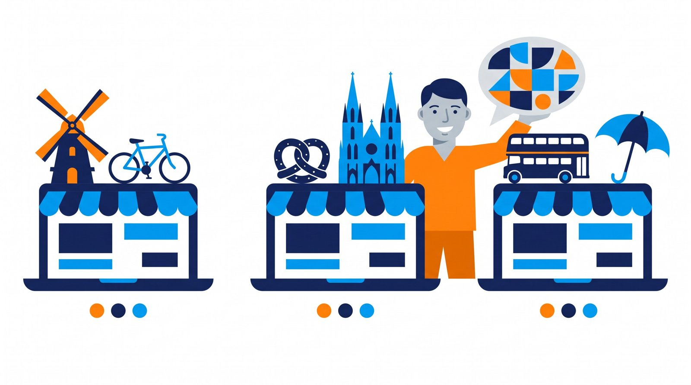
Opening question
IKEA sells the same furniture in Brussels and in Riyadh. Yet its two
sites do not look alike. What changes, and why should an SME draw
inspiration from it?
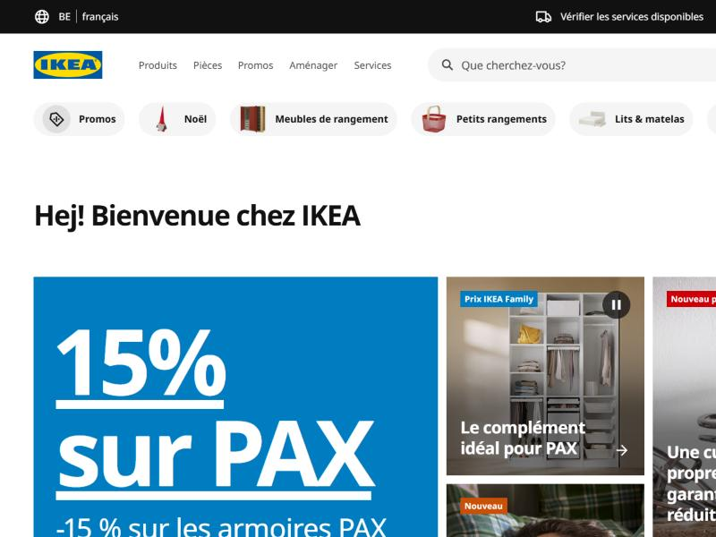
IKEA Belgium, home page in French,
October 2026
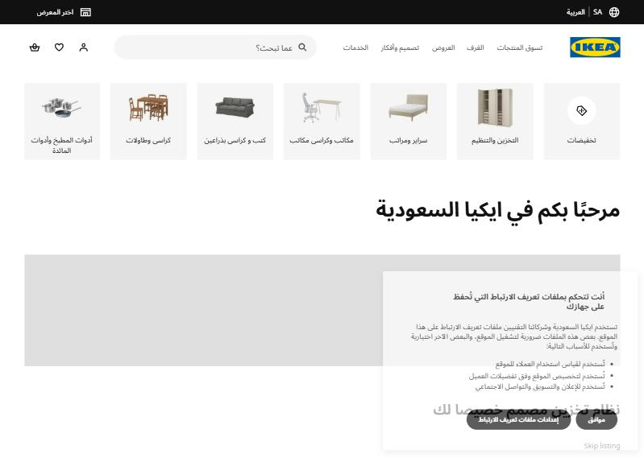
IKEA Saudi Arabia, home page in Arabic:
right-to-left reading, reversed navigation, promotions
highlighted
Problem
scenario 4: “The page that works in Brussels and not in Cologne”
The situation. The founder of BELGA CRAFT shows you,
side by side, the Belgian home page of her site and its German version,
obtained by machine translation in one afternoon. Same photos, same
translated text, same slogan (“Jewellery that tells your story”, become
“Schmuck, der Ihre Geschichte erzählt”), same prices, same payment
methods (Bancontact first). She also shows you three screenshots taken
by a friend in Saudi Arabia and in India of the IKEA site, “because if
IKEA changes everything from one country to the next, maybe there’s a
reason.” Then her real question: “I can afford two countries, not four.
Germany and the Netherlands are what everyone advises. But France is
right next door, and in the United Kingdom they love makers. How do I
choose, and once I’ve chosen, what do I actually change on the
site?”
What you must produce. (a) A comparative audit of
three national versions of a single brand, using the grid below, and
three recommendations transposable to BELGA CRAFT. (b) BELGA CRAFT’s
attractiveness-feasibility matrix for four markets (Germany, the
Netherlands, France, the United Kingdom), with your justified weightings
and two chosen markets. (c) The mock-up of the home page for one of the
two chosen markets.
Team
Brand
Versions
1
IKEA
Belgium (FR), Saudi Arabia, India
2
Zara
Belgium, China, Brazil
3
Decathlon
Belgium (FR), Germany, United Kingdom
4
Nike
Belgium, United States, Japan
Criterion
Country 1
Country 2
Country 3
Observed adaptation and hypothesis (Hofstede or other)
Language and reading direction
Design, density, colours
Navigation, search
Range and prices displayed
Payment methods
Delivery and returns
Customer service, trust statements
Promotions and calendar
How it unfolds (4 periods).
Group analysis (30 min, without the chapter). Clarify:
translate, localise, “culture”, attractive market, feasible market.
Formulate the problem (there are two: choosing, then adapting).
Brainstorm everything that could differ between a customer in Brussels
and a customer in Cologne when they buy a piece of jewellery online.
Learning objectives.
Research (60 min). Chapter 4; audit of the three national
versions of your brand; Hofstede Insights; Eurostat and Ecommerce Europe
data on cross-border purchases.
Production (60 min). Audit grid, matrix, mock-up (Canva,
PowerPoint or paper) with half a page of justification.
Pooling (30 min). The four teams compare their matrices:
did you choose the same markets? If not, because of which weightings?
The tutor closes.
If you get stuck. An adaptation observed on a site
does not always have a cultural explanation: it may be legal, logistical
or commercial. For the matrix, the classic trap is to weight market size
at 50%: a huge market where you do not speak the language and where you
deliver in six days is not feasible.
And for your project. The matrix and the
localisation points of your own markets are the heart of milestone
J2.
Milestone J2 — to be submitted at the end of session 4 (2 to
4 pages). The reasoned choice of your two markets (completed
matrix), two personas per market, and the list of localisation points to
plan for each (language, payments, delivery, trust statements,
calendar).
4.1 Translating is not
localising
To translate is to render a text in another language. To localise is
to adapt the whole experience to a market: the language, but also the
units, the date and price formats, the payment methods, the examples,
the images, the humour, the colours, the reading direction, the
commercial calendar’s holidays, and the tone. The two IKEA screenshots
show it: beyond the language, the Saudi page reverses the navigation
(right-to-left reading), puts promotions to the fore and displays
different visuals.
For an SME, the full localisation of a site in three languages was
prohibitively expensive ten years ago. Machine translation tools (DeepL,
tools built into the platforms) and generative AI have changed the
equation: the first version costs little. But proofreading by a native
speaker remains essential, and it is this that makes the difference
between a “translated” site and a site that people trust.
4.2 Hofstede’s six cultural
dimensions
The Dutch psychologist Geert Hofstede proposed, on the basis of
surveys conducted in dozens of countries, six dimensions for comparing
national cultures. They are debated, sometimes criticised (they describe
averages, not individuals, and are partly dated), but they remain the
most widely used starting point for anticipating differences between
markets.
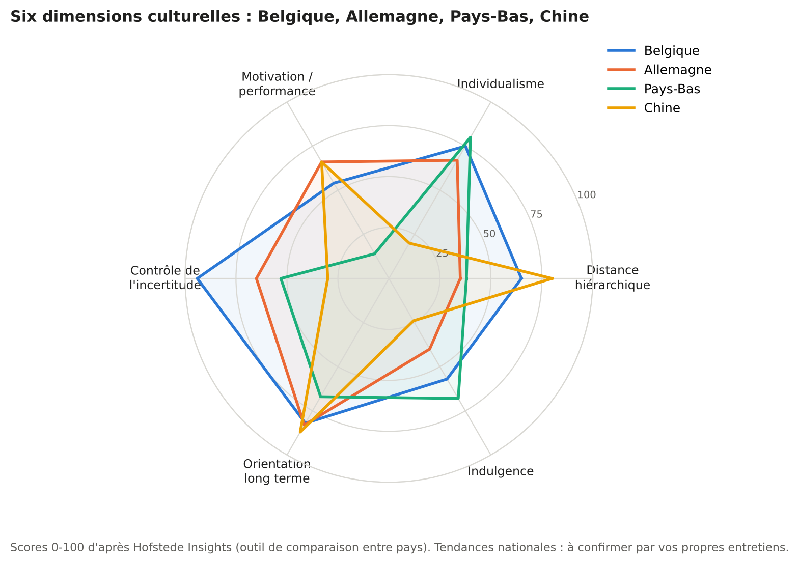
Six cultural dimensions: Belgium,
Germany, the Netherlands, China
Dimension
What it measures
What it changes on a site
Power distance
Acceptance of inequalities of power
High: recommendations from experts, authorities, celebrities. Low:
peer reviews, egalitarian tone
Read the chart for BELGA CRAFT. Belgium and Germany show high
uncertainty avoidance: guarantees, clear returns and detailed conditions
reassure. Germany and the Netherlands are more “indulgent” and less
hierarchical than Belgium: a direct tone and reviews from ordinary
customers work better than recommendations from experts. China, at the
opposite end on almost everything, would require a completely rethought
site: it is not a starting market for a Brussels SME.
Cross-cultural dimensions are explored in greater depth, from the
standpoint of negotiation, in UE 715103U32D2. Here, they serve to
formulate hypotheses about your markets, which your interviews will
confirm or not.
4.3 The localisation
points that matter most
Language. The majority of European consumers prefer
to buy in their own language, and many give up on a site they understand
poorly. Belgium illustrates this every day: a serious Belgian site
exists at a minimum in French and in Dutch. Search keywords differ even
between countries that share a language (you do not search for the same
terms in Belgium and in France), which has consequences for search
engine ranking (module 3).
Payment methods. The table below is to be known by
heart. It is detailed in module 4.
Country
What the customer expects to find
Belgium
Bancontact (card and Bancontact Pay app), cards, Wero
Netherlands
iDEAL above all, then cards and Klarna
Germany
PayPal, payment by invoice (Klarna), bank transfer, cards
France
Cards, payment in three instalments, PayPal
United Kingdom
Cards, PayPal, Apple Pay
Visual codes. Red brings luck in China and signals
danger or sales in Europe; white is the colour of mourning in several
Asian countries. Information density varies: uncluttered pages in
Northern Europe, very busy ones in China and Japan. Visuals should look
like the country’s customers.
The calendar. Christmas and the sales do not fall on
the same dates everywhere; Black Friday has taken hold in Europe;
Singles’ Day (11 November) dominates in China; Mother’s Day is not the
same Sunday in Belgium, France and Germany. Your promotional calendar
must be local.
Trust statements. A German consumer looks for the
Impressum (detailed legal notices, mandatory in Germany) and labels such
as Trusted Shops; a Dutch consumer, the Thuiswinkel Waarborg label; a
Belgian, the Becom label or the company’s physical address.
4.4 Three documented
adaptation failures
Amazon in China (closure of the marketplace in
2019). Having entered China in 2004 through the acquisition of
Joyo, Amazon never rose above a marginal market share against Taobao and
JD.com. Its sober interface, its classic customer reviews and its
recommendation model did not match local habits: entertainment,
permanent promotions, live video selling, influencers (KOL), instant
messaging between buyer and seller. The lesson is simple: global power
is no substitute for understanding a market.
eBay in China (withdrawal in 2006). The global
leader in C2C, eBay was beaten by Taobao, which made selling free for
sellers and added messaging between buyer and seller, meeting a need for
negotiation and direct contact. Here, it was not the site that was
poorly adapted, but the business model.
IKEA in Saudi Arabia (2012). The Saudi catalogue had
erased women from the photos of the international catalogue. The outcry
in Sweden forced IKEA to apologise. Localisation must not betray the
brand’s values, nor the expectations of its home market: an adaptation
visible in one country is visible in all the others too.
Common mistake. Illustrating cultural adaptation
with unverifiable anecdotes (the Pepsi slogan that “brings ancestors
back to life”, the Nova name that “doesn’t go” in Spanish). They are
amusing, often false, and teach you nothing. Prefer documented cases,
with sources.
4.5
Choosing your markets: the attractiveness-feasibility matrix
Before localising anything, you have to choose where. The simplest
method is a two-axis matrix.
Market attractiveness: the size of the online market
in your category, growth, purchasing power, the share of consumers who
already buy abroad, the intensity of competition.
Feasibility for you: language (do you master it?),
distance and delivery cost, payment methods to integrate, regulatory
complexity (EU or non-EU), cultural affinity, existing contacts.
Score each criterion from 1 to 5, weight them, and compare at least
four markets. The right answer for an SME is rarely “the biggest
market”: it is the biggest market among those it can serve
properly.
The
BELGA CRAFT example: why Germany and the Netherlands
Criterion (weighting)
Germany
Netherlands
France
United Kingdom
Size of the online jewellery market (25%)
5
3
4
4
Growth (10%)
4
5
3
3
Consumers’ cross-border buying (10%)
3
4
3
3
Language mastered in the team (15%)
2
4
5
4
Cost and lead time of delivery from Brussels (15%)
4
5
4
2
Regulatory complexity (15%)
5
5
5
1
Competition (10%)
3
4
2
3
Weighted score out of 5
3.9
4.2
3.9
2.8
The United Kingdom, although a large market, is set aside: customs,
VAT and import charges since Brexit make it a separate undertaking.
France gets the same score as Germany, but competition there is stronger
in handmade jewellery and the average basket lower. BELGA CRAFT chooses
the Netherlands (proximity, language, delivery, iDEAL
payment easy to integrate) and Germany (market size),
knowing that Germany will demand more effort: language, Impressum,
PayPal and invoice, high expectations on returns.
Self-check
What is the difference between translating and localising? Give five
elements of a site that fall under localisation without being
translation.
A country has high uncertainty avoidance. Name four elements to
reinforce on the site that targets it.
Why is the eBay case in China not a failure of site localisation?
What made the difference?
Build an attractiveness-feasibility matrix for a Liège e-commerce of
specialty beers hesitating between the Netherlands, France, Italy and
the United States.
What must a site targeting Germany contain that many Belgian sites
forget?
★ Hofstede Insights, country
comparison tool: enter your two markets and Belgium, read the gaps.
Free, 15 minutes.
Geert Hofstede, Gert Jan Hofstede and Michael Minkov, Cultures
and Organizations: Software of the Mind (French translation
Cultures et organisations : comprendre nos programmations
mentales, Pearson). The introductory chapter is enough for this
course.
Edward T. Hall, Beyond Culture (French edition Au-delà
de la culture, Seuil): the distinction between high-context and
low-context cultures, useful for the tone of your texts.
Test yourself before moving on. Multiple-choice questions are marked with one click; for open questions, write your answer first, then compare it with the model answer.
Multiple-choice questions
An SME translates its Belgian homepage into German in one afternoon, changing nothing else (same photos, same slogan, Bancontact as the first payment method). What is it missing to truly address the German market?
Translating renders a text into another language; localising adapts the whole experience (payments, formats, visuals, legal notices such as the Impressum, calendar, tone). Keeping Bancontact first for a German customer illustrates translation without localisation.
You are targeting a country whose "uncertainty avoidance" is high (Belgium, Germany). Which set of elements should be reinforced on the website?
High uncertainty avoidance means a low tolerance for vagueness and risk: guarantees, trust marks, detailed conditions and pay-on-invoice (after delivery) reassure. A playful tone relates to indulgence, endorsements by authorities to power distance.
Why is eBay's failure in China not presented as a failure of website localisation?
The course distinguishes website adaptation from the business model. Taobao beat eBay by removing fees for sellers and offering messaging that met the need for negotiation and direct contact: it was the model, not the localisation of the interface, that made the difference.
In an attractiveness-feasibility matrix, what is the classic trap flagged by the course?
The right answer for an SME is rarely "the biggest market", but the biggest among those it can serve properly. Over-weighting size leads to choosing an inaccessible market: a huge but unfeasible market (language, slow delivery) is not a good choice.
A Belgian website wants to sell in Germany. Which trust mentions, often forgotten by Belgian sites, will the German consumer look for?
The German consumer looks for the Impressum (detailed and mandatory legal notices) and labels such as Trusted Shops. Thuiswinkel Waarborg is the Dutch reflex, Becom the Belgian reflex: each market has its own trust signals.
Open questions
Explain the difference between translating and localising, then cite five elements of a website that are a matter of localisation without being translation.
Translating means rendering a text into another language. Localising means adapting the whole experience to a market: language is only part of the work. Five elements that are a matter of localisation without being translation: payment methods (iDEAL in the Netherlands, PayPal and pay-on-invoice in Germany, Bancontact in Belgium); trust mentions and labels (Impressum and Trusted Shops in Germany, Thuiswinkel Waarborg in the Netherlands); visual codes and information density (clean pages in the North, colours whose meaning changes from country to country); the promotional calendar (Black Friday, Singles' Day, Mother's Day on different dates); and the reading direction and navigation (right to left in Arabic, as on IKEA's Saudi website). You can add units, date and price formats, and tone. For an SME, machine translation makes the first version inexpensive, but it is proofreading by a native speaker that makes the difference between a "translated" website and one that is trusted.
The three adaptation failures documented by the course (Amazon and eBay in China, IKEA in Saudi Arabia) do not teach the same lesson. Explain the lesson of each.
Amazon in China shows that global power does not replace an understanding of a market: its plain interface, its classic reviews and its recommendations did not match local habits (entertainment, permanent promotions, live video selling, KOL influencers, buyer-seller messaging), and Amazon never exceeded a marginal share against Taobao and JD.com. eBay in China shows that a failure can come from the business model and not from the localisation of the website: Taobao made selling free for sellers and added messaging that met the need for negotiation and direct contact. IKEA in Saudi Arabia (the 2012 catalogue that erased women from the photos) shows that localisation must not betray the brand's values or the expectations of its home market: an adaptation visible in one country is visible everywhere too, and the outcry in Sweden forced IKEA to apologise. Finally, the course warns against unverifiable anecdotes (Pepsi, Nova): documented and sourced cases are preferred.
A Liège e-commerce retailer of specialty beers is hesitating between the Netherlands, France, Italy and the United States. Build the reasoning of an attractiveness-feasibility matrix and say which markets you would select.
You assess two axes. Attractiveness: the size of the online market in specialty beer, growth, purchasing power, the share of consumers already buying abroad, the intensity of competition. Feasibility: a mastered language, distance and delivery cost from Liège, payment methods to integrate, regulatory complexity (EU or non-EU, and excise duties on alcohol), cultural affinity, existing contacts. You score each criterion from 1 to 5, weight them and compare the four markets. The Netherlands comes out on top: proximity, fast and inexpensive delivery, iDEAL simple to integrate, an EU market with no customs border, a strong online-buying culture. France is attractive because of its size and the absence of a language barrier, but competition there is strong on beer. Italy adds the language barrier and longer logistics. The United States, a huge market, combines customs, VAT/excise, alcohol regulation by state and distant delivery: attractive but barely feasible for a beginning SME. I would therefore select the Netherlands and France, keeping in mind that the right choice is not "the biggest market" but the biggest among those you can serve properly.
This module covers the “web marketing strategy according to the 4Ps”
part of learning outcome 1. The basics of marketing are assumed to be
mastered (UE 714104U32D1): we return to them only to apply them to
online selling in several countries. The module feeds into the “Web
marketing” section of the business plan and the “Loyalty” part of the
requirements specification.
Self-assessment
Test yourself before moving on. Multiple-choice questions are marked with one click; for open questions, write your answer first, then compare it with the model answer.
Multiple-choice questions
In summary of chapters 5 and 6, why is it said that the 4P grid and the costed-assumptions table must be "consistent with the personas"?
The 4P and the costed assumptions hold only if they answer the persona: at BELGA CRAFT, the choice of Pinterest/Instagram and of the referral scheme comes from the fact that Lena discovers brands through visual recommendation. The jury judges the consistency between markets, 4P and personas.
An SME wants "60,000 visitors in the first year" in Germany. What is the recommended method for turning this wish into a defensible objective?
The approach of chapter 6 works back up the funnel: orders needed -> visitors required according to the conversion rate -> budget according to each channel's cost per visitor. And if the CAC exceeds the margin of a first order, only loyalty saves the model.
To steer the profitability of a market, which relationship between CAC and CLV does the module adopt as a rule of thumb?
Acquiring costs a lot, bringing back costs little: it is the CLV (the total margin from a customer over the whole relationship) that justifies acquisition spending. The rule of thumb is a CLV/CAC ratio of at least 3; at BELGA CRAFT, 3.4 is deemed acceptable but to be monitored.
An A/B test shows that the localised payment page converts 40% better than the standard version in Germany. Which lesson from chapters 5-6 does this best illustrate?
The localisation of the payment page acts on the conversion levers specific to international selling: familiar payments, reassurance, language, total price visible early. What works in Germany may fail elsewhere: hence the rule to test by country, and not a single page.
Open questions
Show how the 4P grid of chapter 5 and the acquisition-conversion-loyalty funnel of chapter 6 fit together to form the web-marketing strategy of a market (milestone J3).
Milestone J3 requires, per market: a 4P grid, acquisition channels with budget and target CAC, three conversion actions, a loyalty mechanism and a costed-assumptions table. The 4P set the strategic frame. The Product (standard + extended product: a crafting card in the language, packaging, engraving, guarantee) and the Price (landed price per market, compliance with geoblocking and the 30-day rule) define the offer. Distribution (one main channel and one secondary according to the personas) and Promotion (translation/transposition/creation of the message, dominant channels by country) already prepare acquisition. The funnel of chapter 6 then operationalises the strategy in three tiers: acquisition (organic search by language, GEO, advertising, influence, email, marketplaces - steered by the CAC and the ROAS), conversion (local trust, familiar payments, language, visible total price, improved by A/B tests by country), loyalty (a mechanism chosen by market, costed and measured, steered by the CLV and the CLV/CAC ratio >= 3). The costed-assumptions table (visitors, conversion, basket, turnover, CAC, repeat purchase, CLV) links it all together: each figure must have an origin. Thus the 4P say what to offer and at what price, the funnel says how to bring in, convert and retain customers, and the table checks that the model holds economically.
Are GEO (being cited by AI assistants) and classic multilingual search optimisation two separate work streams? Explain their relationship and the common best practices.
They are not two opposing work streams: the course underlines that, for an SME, everything that improves classic search optimisation and the clarity of product pages also improves visibility in AI assistants. The context: nearly one Belgian consumer in three already asks an AI assistant for advice before buying (Becom, 2026), and the journey "I ask ChatGPT, then I click on the website it cites" now exists. Assistants draw on the pages they can read and understand: complete and structured product pages (material, dimensions, origin, price, availability), customer reviews, mentions in articles and comparisons, presence on marketplaces and directories. The common best practices align with those of multilingual SEO: research keywords in each language rather than translating the French ones (volumes and terms differ, even between countries sharing a language), genuinely localise the content (titles, descriptions, categories, blog), tag with hreflang and provide a sitemap by language, and take care of speed and mobile because search engines rank fast mobile sites first. In other words, clear and well-structured product pages, localised content and good technical performance serve Google and generative engines simultaneously: GEO is the natural extension of good search optimisation, not a foreign discipline.
Module 3 · Web marketing · Chapter 5 · ~9 min read
The 4Ps when the customer is abroad
Session 5 — 4 periods
Opening question
Can the same piece of jewellery be sold for 85 euros in Belgium, 95
euros in Germany and 78 euros in the Netherlands? Is it legal? Is it
smart? And what happens when a Dutch customer notices?
Problem scenario 5: “89,
95 or 99 euros?”
The situation. A pricing meeting at BELGA CRAFT. The
“Louise” necklace, a bestseller, sells for 85 euros incl. tax in
Belgium, with free delivery from 60 euros. On Etsy, German makers sell
comparable pieces between 70 and 120 euros, delivery often charged. In
the Netherlands, a local brand displays 79 euros all in. The marketing
manager proposes 99 euros in Germany (“the market is richer”) and 79
euros in the Netherlands (“we have to align”). The logistics manager
points out that delivering a tracked parcel to Germany costs 7.50 euros
and that German returns are twice as numerous. The founder has read that
you were “not allowed to set different prices within Europe”. And a
Belgian customer has just written: “I saw the necklace cheaper on your
German site, I want the same price.” She wants a price and delivery grid
for the two countries, defensible before a customer and before a
lawyer.
What you must produce. BELGA CRAFT’s 4P grid for
Germany and the Netherlands, with the justification of each cell; a
price survey of five identical products in three countries for a brand
of your choice (IKEA, Decathlon, Zalando, H&M), with the explanation
of the gaps; and a five-line reply to the Belgian customer.
How it unfolds (4 periods).
Group analysis (30 min, without the chapter). Clarify:
price incl. tax, landed price, geo-blocking, standardisation,
adaptation. Formulate the problem: what must be consistent across
countries, and what may differ? Brainstorm on the four Ps for the two
markets. Learning objectives.
Research (60 min). Chapter 5; local competitors’ sites;
Google Trends by country; the anti-geo-blocking regulation and the
30-day rule.
Production (60 min). 4P grid, price survey table with half
a page of analysis, reply to the customer.
Cross pitch (30 min). Each team presents its grid in five
minutes to another team, which scores it on four criteria (relevance of
the market analysis, consistency of the 4Ps with one another and with
the personas, realism, clarity) and asks its questions. The tutor
closes.
If you get stuck. The anti-geo-blocking regulation
prohibits refusing the sale or forcibly redirecting; it does not
prohibit different prices per national site. The commercial question
remains: how do you justify it to a customer who compares? And do not
forget that the displayed price is not the landed price: who pays the
7.50 euros, and the returns?
And for your project. Your 4P grid per market is the
first piece of milestone J3.
5.1 Product: standardise,
adapt or create
Three strategies, and an SME often combines them.
Strategy
Principle
Examples
When
Standardisation
The same product everywhere
Apple, Lego, a design brand
Universal product, strong brand image, economies of scale
Adaptation
The same product, adjusted
Decathlon (ranges by climate), clothing sizes, electrical plugs
Local constraints, different tastes
Local creation
A product specific to a market
Asian ranges of major cosmetics groups
Large market, very different expectations
Four families of factors push towards adapting:
regulation (safety standards, labelling in the
country’s language, the European regulation on product safety, known as
the GPSR, in force since December 2024), culture
(tastes, sizes, colours, uses), the economy (purchasing
power, positioning) and the climate (reversed seasons,
conditions of use).
For BELGA CRAFT, the product stays standard: a piece of jewellery
handmade in Brussels is precisely what the German customer is buying.
The adaptation bears on the augmented product: the
packaging (a card in German telling the story of how it is made), the
personalisation (engraving, choice of stone), the guarantee.
5.2 Price: four
strategies and three rules
Strategy
Description
Advantages
Disadvantages
Uniform price
The same price excl. tax everywhere
Simple, consistent, no arbitrage
Ignores purchasing power and local competition
Localised price
One price per market
Competitive everywhere
Complex to manage, customers who compare
Skimming
High price at launch
Margin, image
Low volumes
Penetration
Low price to get in
Fast volumes
Low margin, hard to raise
Three rules specific to cross-border online selling:
1. The customer compares the landed price, not the displayed
price. Product price, plus delivery, plus the VAT of their
country, plus any duties outside the EU. A product price lower than the
competition is useless if delivery costs 15 euros more. The calculation
of the landed price is in module 4.
2. The European regulation against unjustified geo-blocking
(2018) frames price differences within the EU. You can have a
.de site with prices different from the .be site. But you cannot prevent
a Belgian customer from buying on the .de site on German terms, nor
forcibly redirect them to the Belgian site. You are not obliged to
deliver to Belgium from the German site; the customer can collect the
item or arrange delivery themselves. In practice, significant price gaps
between neighbouring countries always end up becoming known and
upsetting people.
3. Any announcement of a reduction must indicate, as the
reference price, the lowest price applied over the preceding 30
days (Omnibus directive, in force since 2022). Remember
Amazon’s “-50%” in chapter 1, calculated on the manufacturer’s catalogue
price: the exact wording matters, and the FPS Economy checks.
Common mistake. Setting foreign prices by simply
converting the Belgian price. Psychological prices differ (9.99 in
France, 9.95 in the Netherlands), VAT differs (21% in Belgium and the
Netherlands, 19% in Germany, 20% in France), and so do payment and
delivery charges. Start from the landed price you want to see displayed,
and work back up.
5.3 Distribution: where to sell
The channels were presented in chapter 2; here is how to combine them
by market.
Your own site: full control of the brand and the
data, traffic to win. Essential in the long run.
Social media: Instagram, TikTok Shop, Pinterest
(strong for decoration and jewellery).
Local partners: independent boutiques (via
Ankorstore, for example), concept stores, specialised online
resellers.
The practical rule: per market, one main channel and one
secondary channel, chosen according to your personas. For Lena,
it is Pinterest and Instagram for discovery, Etsy for the trial, your
own site for loyalty.
5.4
Promotion: adapt the message and choose the channels
Three levels of message adaptation: translation
(same message, another language), transposition (same
idea, local execution: visuals, references, humour) and
creation (a different message per market). Most SMEs
stick to transposition.
The dominant channels vary: Google dominates search in Europe and the
Americas, Baidu in China, Naver in South Korea, Yandex in Russia;
Instagram and TikTok dominate among the under-35s, Facebook remains
strong beyond; LinkedIn is the B2B channel. Email remains the most
profitable channel for existing customers, provided you have their
consent (GDPR).
5.5 The 4Ps become a grid per
market
The tool of this chapter is a simple grid: four rows, one column per
market, one justification column. Its value comes from the right-hand
column.
The BELGA CRAFT example:
its 4P grid
Germany
Netherlands
Justification
Product
Standard range; story-of-making card in German; gift packaging;
engraving
Standard range; card in Dutch; gift packaging
Personas: the story of the materials and the gift
Price
95 € incl. tax (19% VAT), free delivery from 80 €; reference price
complying with the 30-day rule
78 € incl. tax (21% VAT), free delivery from 60 €
Purchasing power and competition; observed average baskets; landed
price aligned with local competitors
Distribution
Etsy for the first 6 months, then own site in German; Pinterest
Own site in Dutch from the start (language mastered); Instagram
Low-cost trial in Germany; proximity in the Netherlands
Promotion
Pinterest and Instagram (interest targeting), German-language
ranking, 10 micro-influencers in decoration
Instagram, Google Shopping, collaboration with two concept stores in
Utrecht and Amsterdam
Visual discovery; budget 15% of the target turnover
Self-check
What is the difference between adapting a product and adapting the
augmented product? Give an example for your project.
Can BELGA CRAFT sell for 95 euros in Germany and 78 euros in the
Netherlands? Under what conditions?
Why should you “start from the landed price and work back up” rather
than convert the Belgian price?
For each of your two markets, which main channel and which secondary
channel do you choose, and why?
What does the 30-day rule require, and how does it apply to Amazon’s
“-50%” seen in chapter 1?
Test yourself before moving on. Multiple-choice questions are marked with one click; for open questions, write your answer first, then compare it with the model answer.
Multiple-choice questions
BELGA CRAFT wants to display 95 euros in Germany and 78 euros in the Netherlands on two national websites. What does the European anti-geoblocking regulation (2018) say?
The regulation does not prohibit different prices per national website: you can have a .de and a .be with distinct prices. It prohibits refusing the sale, preventing a Belgian from buying on the .de under German conditions, or forcibly redirecting him. You are not obliged to deliver to Belgium from the German website.
Why does the course state that a product price lower than the competition's "is of no use" in certain cross-border cases?
The customer compares the landed price, not the displayed price. A cheaper product whose delivery costs 15 euros more ends up costing more in total. Hence the rule "start from the desired landed price and work back" rather than converting the Belgian price.
A website advertises "-50%" on a necklace. What does the Omnibus directive (the so-called 30-day rule) require of it?
The Omnibus directive (in force since 2022) requires that any announcement of a reduction indicate as the reference price the lowest price of the preceding 30 days. A "-50%" calculated on the manufacturer's catalogue price (the Amazon case in chapter 1) is misleading; the SPF Economie monitors this.
For BELGA CRAFT, the product (a handmade piece of jewellery from Brussels) remains standard from one market to another. What, then, does the adaptation cover?
The handmade piece of jewellery is precisely what the customer is buying: it remains standard. The adaptation covers the extended product - the packaging, a crafting card in German, personalisation (engraving, choice of stone), the guarantee - that is, everything that surrounds the base product.
According to the course's practical rule on distribution, how should an SME choose its channels by market?
The rule is: per market, one main channel and one secondary channel, chosen according to the personas. For Lena, Pinterest/Instagram serve discovery, Etsy the test, your own website loyalty. Being everywhere scatters an SME's resources.
Open questions
Can BELGA CRAFT sell at 95 euros in Germany and 78 euros in the Netherlands? Under what conditions, and with what commercial precautions?
Yes, it is legally possible. The European anti-geoblocking regulation (2018) allows different prices per national website: a .de site can display different prices from a .be or .nl site. The conditions to respect: not preventing a customer from one country from buying on the other site under the conditions displayed there, not forcibly redirecting him to "his" site, and not refusing the sale; on the other hand, you are not obliged to deliver to his country from the other site (he can pick up or arrange delivery). You must also respect the 30-day rule on reduction announcements. The price difference is justified by purchasing power, local competition, the average baskets observed and the landed price aligned with each country's competitors (VAT differs: 19% in Germany, 21% in the Netherlands). Commercial precaution: large gaps between neighbouring countries always end up being noticed and causing discontent - like that Belgian customer who saw the necklace cheaper on the German site. The price grid must therefore be defensible both before a lawyer and before a customer who compares.
Why does the course recommend "starting from the desired landed price and working back" rather than converting the Belgian price? Give the factors that make a simple conversion misleading.
Converting the Belgian price is misleading because several elements vary from one country to another and add up in what the customer actually pays. First, the psychological price differs: you write 9.99 in France but 9.95 in the Netherlands. Next, VAT differs: 21% in Belgium and the Netherlands, 19% in Germany, 20% in France. Finally, payment fees and above all delivery fees vary (delivering a tracked parcel in Germany costs 7.50 euros, and German returns are twice as frequent). Since the customer compares the landed price - product + delivery + the VAT of his country + any duties - and not the displayed price, you must reason backwards: set the landed price you want displayed on the market, then work back by deducting VAT, delivery and fees to obtain the selling price. This avoids ending up, after conversion, with a total price that is not competitive or a margin crushed by logistics costs.
The three levels of adapting the advertising message (translation, transposition, creation): explain them and say which one an SME most often chooses, and why.
Translation keeps the same message and renders it in another language: it is the minimal level, inexpensive but limited. Transposition keeps the same idea but adapts the local execution: visuals, cultural references, humour, examples. Creation designs a different message for each market: it is the most advanced and most expensive level, reserved for large advertisers. Most SMEs stick to transposition: it offers a good compromise between cost (a full creation per country is out of reach) and effectiveness (a mere translation often sounds "foreign" and ignores local codes). The choice also connects with the dominant channels by country - Google in Europe, Baidu in China, Naver in Korea, Instagram and TikTok among the under-35s, email remaining the most profitable with existing customers provided you have their consent (GDPR) - because transposing also means choosing where the message is seen.
Module 3 · Web marketing · Chapter 6 · ~10 min read
Being found, convincing, bringing them back
Session 6 — 4 periods
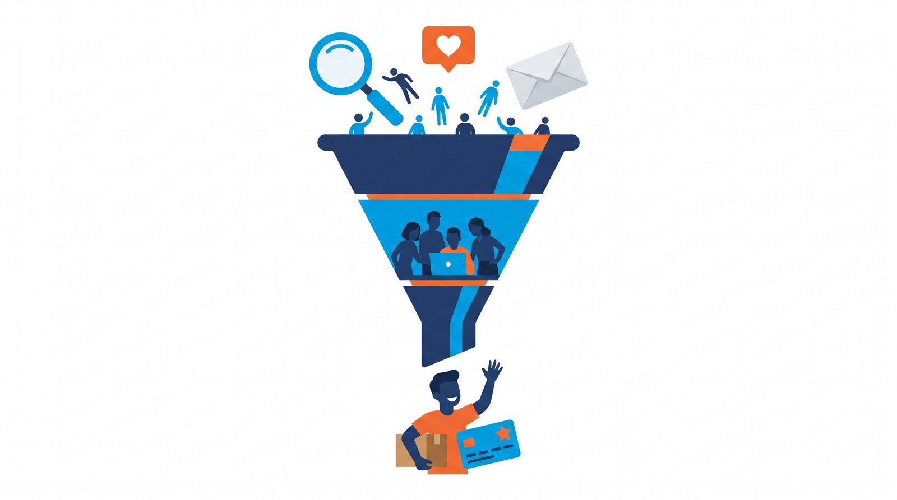
Opening question
BELGA CRAFT has a fine site in German. Nobody comes. Then visitors
come, but do not buy. Then some buy, once, and disappear. Three
different problems, three undertakings: acquisition, conversion,
loyalty.
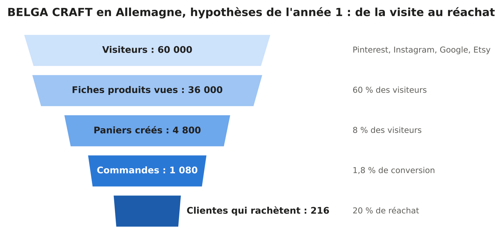
From visit to repeat purchase: BELGA
CRAFT’s funnel in Germany
The funnel above summarises BELGA CRAFT’s hypotheses for its first
year in Germany: 60,000 visitors, 1.8% conversion, 1,080 orders, 20%
repeat purchase. Each stage is an undertaking of this chapter, and each
percentage a hypothesis to defend before the jury.
Problem
scenario 6: “60,000 visitors, and then what?”
The situation. BELGA CRAFT’s marketing plan for
Germany fits in one line: “60,000 visitors in the first year”. Nobody
knows where they will come from. An agency proposes 2,000 euros a month
of Instagram advertising; an SEO consultant promises “the first page of
Google.de in six months” for 6,000 euros; the founder asked ChatGPT the
question “where to buy a handmade necklace in Germany?” and BELGA CRAFT
appears nowhere. An A/B test provided by the teacher shows that the
localised version of the payment page converts 40% better than the
standard version. And of the 9 German customers of the first three
months, none recommended the brand.
What you must produce. An acquisition plan for
Germany: five keywords per market drawn from the local language, a
rewritten title and description for the supplied product page, the
allocation of a 24,000 euro budget across the channels with the target
CAC; a plan of three conversion tests in order, with the indicator
tracked; a loyalty mechanism per market with its reward, its cost per
customer, its communication and its success indicator; and the table of
quantified hypotheses (visitors, conversion, basket, CAC, CLV) on the
chapter’s model.
How it unfolds (4 periods).
Group analysis (30 min, without the chapter). Clarify: SEO,
SEA, CAC, CLV, conversion rate, A/B test, GEO. Formulate the problem: is
60,000 visitors an objective or a wish? Brainstorm on all the ways of
being found by a German woman looking for a piece of jewellery. Learning
objectives.
Research (60 min). Chapter 6; Google Keyword Planner and
Google Trends; PageSpeed Insights on the supplied page; ask an AI
assistant the question “where to buy [product] in [country]?” and note
who is cited and why, in your view.
Production (60 min). The four deliverables.
Pooling (30 min). The teams compare their tables of
hypotheses: where do the gaps come from? The tutor closes on what a
“sourced” hypothesis means.
If you get stuck. Start from the end: how many
orders are needed, at what basket, to reach the target turnover? Then
work back up to the number of visitors needed according to the
conversion rate, then to the budget according to each channel’s cost per
visitor. If the CAC exceeds the margin of a first order, only loyalty
saves the model.
And for your project. Milestone J3 is exactly what
you have just done, for your company.
Milestone J3 — to be submitted at the end of session 6 (2 to
4 pages). The web marketing strategy: 4P grid per market,
acquisition channels with indicative budget and target CAC, three
conversion actions, loyalty mechanism, and the table of quantified
hypotheses on the BELGA CRAFT model.
6.1 Being found:
ranking in several languages
How to organise the site. Three options, all
compatible with the hreflang tags that tell search engines the language
and country targeted by each page.
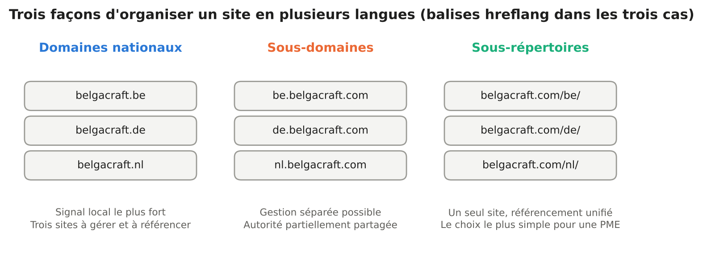
Three ways to organise a site in several
languages
For an SME, subdirectories (monsite.com/de/) are the simplest choice:
a single site to manage, a single authority in the eyes of the search
engines. National domains (.de) give the strongest local signal, but
multiply the work.
Four best practices.
Research keywords in each language, do not
translate the French ones: you do not search for “handmade jewellery”
the same way in German (“handgemachter Schmuck”) and the volumes
differ.
Genuinely localise the content: titles,
descriptions, category texts, blog.
Tag (hreflang) and provide a sitemap by
language.
Take care of speed and mobile: search engines rank
fast mobile sites first.
Being cited by AI assistants. Nearly one Belgian
consumer in three already asks an AI assistant for advice before buying
(Becom, 2026). These assistants draw on the pages they can read and
understand: complete and structured product pages (material, dimensions,
origin, price, availability), customer reviews, mentions in articles and
comparisons, a presence on marketplaces and directories. The emerging
craft is called GEO (generative engine optimization). For an SME, the
rule is simple: everything that improves classic ranking and the clarity
of the product pages also improves visibility in the assistants.
6.2 Attracting: the
acquisition channels
Channel
Strengths
Cost
Lead time
Watch out for internationally
Organic search
Durable, credible
Time
6 to 12 months
Keywords by language
Search engine advertising (Google Ads, Shopping)
Fast, measurable
High, per click
Immediate
Cost per click highly variable by country and language
Social media (organic and paid)
Audience targeted by interests
Medium
3 to 6 months
Platforms and uses by country
Influence
Trust, visual
Variable
1 to 6 months
Local micro-influencers rather than stars
Email
The most profitable on existing customers
Low
1 to 3 months
Consent, language, sending times
Marketplaces
Immediate audience
Commissions
Fast
Head-on price competition
Partnerships and press relations
Local credibility
Time
Variable
The country’s media and blogs
Two indicators to steer by: the customer acquisition
cost (CAC: acquisition spend divided by the number of new
customers) and the return on ad spend (ROAS: turnover
generated per euro of advertising). A CAC only makes sense compared to
the value of the customer (point 6.4).
6.3 Convincing: conversion
The conversion rate is the share of visitors who buy. In B2C
e-commerce, it is often between 1 and 3%, more for loyal customers, less
for cold traffic coming from advertising. Internationally, four factors
weigh more than elsewhere:
Local trust: reviews, the country’s labels,
complete legal notices, address, reachable contact.
Familiar payments: the absence of the expected
payment method is one of the leading causes of abandonment at the last
step.
Language: right down to confirmation emails and
customer service.
The total price visible early: delivery charges and
taxes announced from the product page or the basket onwards.
The method for making progress is the A/B test: two
versions of a page, shown at random to two halves of the visitors, and
you keep the one that converts best. Internationally, test by country:
what works in Germany may fail in Italy. The elements to test as a
priority: the order and presentation of payment methods, reassurance
messages, the length of forms, the call-to-action button, the basket
page.
6.4 Bringing them back: loyalty
Acquiring a customer is expensive; bringing them back costs little.
This is why the customer lifetime value (CLV: the total
margin a customer brings over their whole relationship with you) is the
indicator that justifies, or not, your acquisition spend. The rule of
thumb: a CLV/CAC ratio of at least 3.
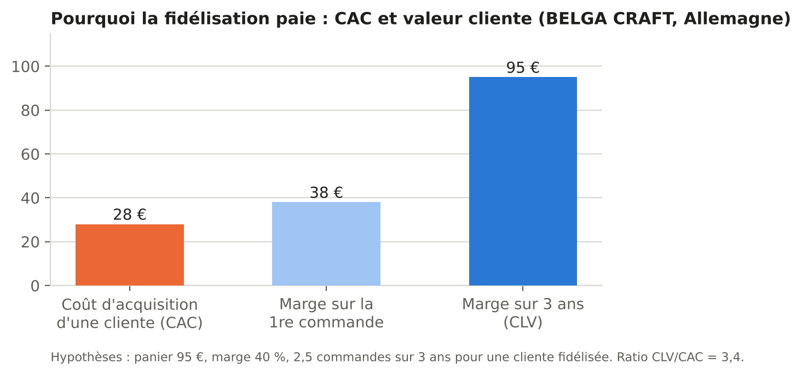
CAC and customer value: why loyalty
pays
Loyalty mechanisms do not work the same way everywhere. The
associations below are starting hypotheses, to be confirmed by your
interviews.
Mechanism
Where it often works well
Example
Points, cashback
Price-sensitive markets
Palais des Thés’ Théophile programme
Status, subscription
Markets attached to service and speed
Amazon Prime, bol Select
Experiences, previews
More hedonistic markets
Sephora Beauty Insider
Community
Collectivist markets, brands with a strong identity
Xiaomi Mi Community
Referral
Everywhere peer trust matters
Widely used by D2C brands
Customer relationship and CRM are explored in greater depth in UE
714604U32D1. Here, the challenge is to choose, for each market, a simple
mechanism, to cost it and to measure it (repeat-purchase rate, purchase
frequency, NPS).
The
BELGA CRAFT example: its quantified hypotheses for Germany
Item
Year 1 hypothesis
Where it comes from
Visitors
60,000
Advertising budget 14,000 € at 0.35 € per click (Pinterest,
Instagram) = 40,000 visits, plus 20,000 organic, Etsy and influence
Conversion rate
1.8%
The sector’s low average for jewellery on cold traffic; 2.6% in
Belgium today
Orders
1,080
60,000 × 1.8%
Average basket
95 €
Survey of German competitors; Belgian basket 85 €
Turnover
102,600 €
Acquisition cost per customer
28 €
(14,000 € of advertising + 5,000 € of influence + 3,000 € of content
and translation) ÷ 780 new customers
Repeat-purchase rate at 12 months
20%
Current Belgian rate: 31%; caution for a new market
Customer value over 3 years
95 € of margin
2.5 orders × 95 € × 40% margin
CLV/CAC ratio
3.4
Acceptable; to be monitored
The loyalty mechanism chosen for Germany: a referral
(10 € offered to both the referrer and the referred) rather than a
points programme, because Lena discovers brands through recommendation
and because the programme is simple to run in three languages.
For your project. Every figure in this table is
debatable. That is the point: a jury will not fault you for a cautious
hypothesis, it will fault you for a hypothesis with no origin.
Self-check
Why are subdirectories often the right choice for an SME, and what
is the hreflang tag used for?
What is GEO, and how do its recipes converge with those of classic
ranking?
An e-commerce spends 20,000 euros on advertising for 600 new
customers; its customers bring on average 70 euros of margin over three
years. Calculate the CAC, the CLV/CAC ratio, and say whether the spend
is reasonable.
Name four causes of abandonment at the last step of payment specific
to a foreign site.
Why does BELGA CRAFT prefer a referral to a points programme for
Germany?
Test yourself before moving on. Multiple-choice questions are marked with one click; for open questions, write your answer first, then compare it with the model answer.
Multiple-choice questions
Why are subdirectories (monsite.com/de/) often the right choice for organising the multilingual website of an SME?
Subdirectories concentrate everything on a single website: a single authority to build, a single administration. National domains (.de) give the strongest local signal but multiply the work. In every case, the hreflang tag remains necessary to indicate language and country.
What is GEO (generative engine optimization), and what is its practical consequence for an SME?
GEO aims to be cited by AI assistants (nearly one Belgian in three asks them for advice before buying, Becom 2026). These assistants draw on complete and structured product pages, reviews, mentions: the rule for an SME is simple, because classic SEO and the clarity of product pages serve both.
An e-commerce business spends 20,000 euros on advertising for 600 new customers, who bring in an average of 70 euros of margin over three years. What are the CAC and the CLV/CAC ratio worth, and is the spending reasonable?
CAC = 20,000 euros / 600 = about 33 euros. CLV/CAC ratio = 70 euros / 33 euros = about 2.1. The course's rule of thumb sets a ratio of at least 3: at 2.1, the model is not catastrophic but remains fragile and must be monitored (improve conversion, lower the CAC or increase the CLV).
Among these causes of abandonment at the final payment step, which one is specifically worsened on a foreign website?
Internationally, the absence of the expected payment method (iDEAL in the Netherlands, PayPal or invoice in Germany, Bancontact in Belgium) is one of the leading causes of abandonment at the moment of paying, alongside a lack of local trust, language and a total price revealed too late.
Why does BELGA CRAFT choose a referral scheme rather than a points programme to build loyalty in Germany?
The choice follows from the personas: Lena discovers brands through recommendation, so a mechanism based on peer trust (10 euros to the referrer and the referred friend) is consistent, and it remains simple to manage in three languages. The mechanism is chosen by market, then costed and measured.
Open questions
The three work streams of chapter 6 - acquisition, conversion, loyalty - respond to three distinct problems. Explain each and name the key indicator associated with it.
The chapter starts from a three-stage observation: no one comes, then the visitors do not convert, then those who buy do not come back. Acquisition responds to the first problem ("being found"): it is about bringing traffic via organic search, search-engine advertising, social media, influence, email, marketplaces or the press; the indicator is the customer acquisition cost (CAC = acquisition spending / new customers), read alongside the ROAS. Conversion responds to the second problem ("convincing"): turning visitors into buyers, with a rate often of 1 to 3% in B2C; internationally, four factors weigh - local trust, familiar payments, language right down to the emails, a total price visible early - and the method of progress is A/B testing, by country. Loyalty responds to the third problem ("bringing back"): since reacquiring costs little, you track customer lifetime value (CLV), and the rule of thumb requires a CLV/CAC ratio of at least 3. The three work streams follow on from one another: if the CAC exceeds the margin of a first order, only loyalty saves the model.
The course states that "a jury will not reproach you for a cautious assumption, it will reproach you for an assumption with no origin". Using BELGA CRAFT's figures table for Germany, show how an assumption is "sourced".
Sourcing an assumption means being able to say where each figure comes from rather than merely asserting it. In the BELGA CRAFT table: the 60,000 visitors break down (an advertising budget of 14,000 euros at 0.35 euros per click = about 40,000 visits, plus 20,000 from organic, Etsy and influence); the conversion rate of 1.8% is the lower-end average of the jewellery sector for cold traffic, cautious compared with the 2.6% already achieved in Belgium; the 1,080 orders are simply 60,000 x 1.8%; the average basket of 95 euros comes from the survey of German competitors (versus 85 euros in Belgium); the CAC of 28 euros is calculated (14,000 euros of advertising + 5,000 euros of influence + 3,000 euros of content and translation / 780 new customers); the repeat-purchase rate of 20% is deliberately lower than the Belgian 31% out of caution on a new market; the CLV of 95 euros of margin derives from 2.5 orders x 95 euros x 40% margin, giving a CLV/CAC ratio of 3.4, acceptable. Each line refers to a calculation, to competitive data or to an adjusted Belgian benchmark: it is this traceability, and not the optimism of the figures, that makes the plan defensible before a jury.
Present the main acquisition channels of chapter 6 (strengths, cost, timeframe) and explain why a "slow" channel like organic search retains all its value against paid advertising.
The chapter lists seven channels. Organic search is durable and credible, but it costs time and takes 6 to 12 months to pay off (keywords by language). Search-engine advertising (Google Ads, Shopping) is fast, measurable and immediate, but expensive per click, with a cost that varies greatly by country and language. Social media (organic and paid) targets by interests, at a medium cost and a 3-to-6-month timeframe, with different platforms and uses by country. Influence brings trust and visuals, preferably through local micro-influencers rather than stars. Email is the most profitable channel with existing customers, inexpensive, but requires consent (GDPR), the right language and the right timing. Marketplaces give an immediate audience in exchange for commissions and head-on price competition. Partnerships and press relations offer local credibility, over a variable timeframe. Organic search, despite its slowness, remains precious: it builds durable and credible traffic that does not depend on an advertising budget renewed each month, and it lowers the overall CAC over time, where advertising stops producing as soon as you stop paying. The trade-off is steered with the CAC and the ROAS, a CAC making sense only when compared with the value of the customer (CLV).
This module covers the “distribution and logistics, and payment
gateways” part of learning outcome 1, and two sections of the
requirements specification: the purchasing process and order tracking.
The supply chain and transport in general are dealt with in UE
719104U32D2, customs and tax techniques in UE 719105U32D2: here we limit
ourselves to what changes when you sell online to consumers in other
countries.
Self-assessment
Test yourself before moving on. Multiple-choice questions are marked with one click; for open questions, write your answer first, then compare it with the model answer.
Multiple-choice questions
Milestone J4, which closes module 4, brings together two dimensions. Which ones?
J4 combines chapter 7 (logistics and taxation: delivery model, costed returns policy, VAT/customs, landed price of a typical order) and chapter 8 (payments and security: payment methods, gateway with estimated cost, a one-page plan in case of an incident).
A Swiss customer (outside the EU) orders a piece of jewellery which she pays for by card. Which elements belong to both chapter 7 and chapter 8 in what she experiences?
Her journey brings together chapter 7 (landed price: Swiss VAT 8.1%, customs-clearance fees, DAP/DDP choice) and chapter 8 (the payment method offered and 3-D Secure 2 at checkout). The two must be thought through together to avoid abandonment or parcel refusal.
To increase conversion while keeping costs under control, an SME must make trade-offs. Which combination is consistent with the module?
The module's line: transparency of the landed price, local payment methods (Bancontact, iDEAL, PayPal/invoice depending on the country) and a logistics model suited to volume. Unannounced DAP causes parcels to be refused; blocking 8% of transactions also refuses honest customers; local stock from the first order ties up cash needlessly.
Two notification or transparency obligations recur in the module. Which one is correctly phrased?
Two requirements of the module: notification to the APD within 72 hours in case of a leak with risk (ch. 8), and explicit mention of VAT, duties and customs-clearance fees for destinations outside the EU (ch. 7). Displaying only "delivery: 12 euros" warns neither of VAT nor of customs clearance; the country's VAT must be visible from the cart.
Open questions
How are the landed price (chapter 7) and the choice of payment methods (chapter 8) linked to the success of a cross-border sale? Illustrate with a Swiss customer and a Dutch customer.
The two together determine conversion and satisfaction. The landed price ensures that the customer has no nasty surprise on delivery; the payment methods ensure that he can actually pay with what he expects. Swiss customer (outside the EU): the landed price must incorporate or announce the Swiss VAT (8.1%) and the customs-clearance fees (DAP/DDP choice); at checkout, a suitable payment method and 3-D Secure 2 are needed. If you sell DAP without warning, she refuses the parcel - regardless of the quality of the payment. Dutch customer (EU, above the 10,000-euro threshold): you display the Dutch VAT (21%) from the cart (OSS), and above all you offer iDEAL: without it, 40% abandonment observed. A good landed price without the right payment method, or the reverse, makes the sale fail: the two must be handled together, market by market, in milestone J4.
Draft the outline of milestone J4 for a given market: which costed elements and which decisions must you include in it?
For each market, J4 (2 to 4 pages) must contain, in costed form: (1) the delivery model chosen (direct shipping, direct injection or local stock) and its justification by volume; (2) the costed returns policy (cost of a return, free or paid, 14-day refund period); (3) the handling of VAT (Belgian VAT below 10,000 euros, otherwise the country's VAT via OSS; IOSS/duties if importing) and of customs where applicable; (4) the landed price of a typical order, line by line: price excluding VAT + delivery + the country's VAT + any duties + customs-clearance fees; (5) the payment methods by country and their display order, the gateway chosen (e.g. Mollie) and the estimated annual cost as a % of the target turnover; (6) a one-page plan in case of a security incident (contact the APD within 72 hours, an email template to customers, the provider's contact details). Each line must rest on real figures (bpost/DHL grids, Access2Markets, Stripe/Mollie rates), not on vague estimates.
A customer in Zurich orders a piece of jewellery displayed at 80
euros on the BELGA CRAFT site. The postman asks her for 31 francs at the
door. She refuses the parcel, leaves a one-star review, and BELGA CRAFT
pays for the return. What happened, and how can it be avoided?
Problem scenario 7: “The
111-euro parcel”
The situation. Three emails arrive on the same day
at BELGA CRAFT. A customer in Zurich: “I ordered a bracelet for 80 euros
and the postman asked me for 31 francs at the door. I’m refusing the
parcel.” A customer in Cologne: “Delivery in six days, my order was a
gift, that’s ruined. I’m sending it back, and I want the free return
label like at Zalando.” The logistics manager: “The carrier is raising
its rates by 12% next month, and I’m being offered storage in Venlo at a
logistics provider, 1,500 euros a month in fixed costs.” At the same
time, the news announces the 3-euro-per-item tax on imported parcels
worth under 150 euros, and the designer wonders whether this affects her
own purchases of beads from China. She wants, by the end of the week, a
costed delivery and returns policy, country by country.
What you must produce. The landed-price calculation
for a typical order to Germany, the Netherlands and Switzerland (DAP and
DDP), line item by line item, using a carrier’s public rate cards, the
VAT rates in force and Access2Markets for the duties; the decision
matrix below for a logistics model per market in year 1 and year 3; the
reply to the two customers; and a costed delivery and returns policy per
market.
Criterion
Weight
Direct shipping
Direct injection
Local stock
Delivery time
25%
Cost per parcel
30%
Flexibility
20%
Investment and fixed costs
15%
Management complexity
10%
How it runs (4 periods).
Group analysis (30 min, without the chapter). Clarify: DAP,
DDP, customs duties, import VAT, direct injection, OSS. State the
problem: what does a delivered order really cost, and who should pay for
it? Hypotheses about the 31 francs demanded in Zurich. Learning
objectives.
Research (60 min). Chapter 7; bpost or DHL rate cards;
Access2Markets; Swiss and German VAT rates; the BELGA CRAFT example in
the chapter as a worked answer to be rediscovered by you.
Production (60 min). The four deliverables.
Crisis game (30 min). To finish: since late 2023, the
attacks in the Red Sea have lengthened Asia–Europe routes by one to two
weeks and sent freight costs soaring. Your bead supplier is in China,
you have three weeks of stock and Mother’s Day is a month away. Every
ten minutes, the tutor advances the crisis by one week: what do you tell
the customers, and when? pay for air freight or wait? which products to
prioritise?
If you get stuck. Break it down: price excluding
VAT, delivery, the customer’s country’s VAT, duties (outside the EU),
the carrier’s customs-clearance fees. For Switzerland, VAT is 8.1% and
there have been no industrial duties since 2024, but the carrier charges
its customs-clearance fees: it is often these that the customer pays at
the door. For the Venlo stock, compare the monthly fixed cost with the
saving per parcel multiplied by the volume: from how many orders is it
worthwhile?
For your project. A costed delivery model and
returns policy per market: the first half of milestone J4.
7.1 What the
customer expects, and what it costs
The online customer expects four things from delivery: an
announced and honoured delivery time, a
choice of location (home, pickup point, locker),
tracking and easy returns. The big
platforms have set the standard (next-day delivery at bol and Coolblue,
free returns at Zalando), and an SME must position itself against it,
without necessarily copying it.
Every promise has a cost. A parcel of under 2 kg to Germany or the
Netherlands costs, for a small SME without a negotiated rate, in the
order of 7 to 12 euros; a return as much again. In fashion, returns can
affect a third of orders; in Germany, more. The Torfs case (appendix B)
shows a profitable Belgian retailer whose online margin was eroded by
the shipping and return costs it chose to offer. These costs must appear
in your business plan from the first version.
7.2 Three ways to
deliver to a foreign customer
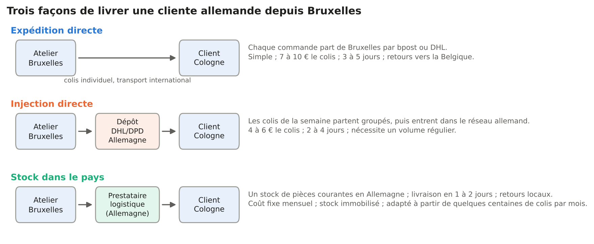
Three ways to deliver to a German
customer from Brussels
Direct shipping: each order leaves Brussels via
bpost, PostNL, DHL, DPD or GLS. This is the starting point for any SME:
simple, with no investment, but more expensive per parcel and slower,
with returns that come back to Belgium.
Direct injection: parcels for the same country are
grouped and handed over in one batch to that country’s distribution
network (by a carrier or a consolidator). The cost per parcel falls and
the delivery time approaches domestic levels, provided you have a
regular volume, at least a few dozen parcels a week.
Stock in the country: a local logistics provider, or
a marketplace’s logistics (Amazon, bol), stores your products and ships
within one or two days; returns stay local. This is the model for high
volumes; it ties up stock and creates fixed costs. For a made-to-order
product like BELGA CRAFT’s, it only applies to the common items.
The three models often follow one another over the life of an
e-commerce business, at the pace of volumes.
7.3 Procurement and stock:
the essentials
Even though your supply chain course goes further, remember four
things for the business plan.
Procurement strategies: centralised (everything
comes from one country), “China + 1” (a second source outside China),
nearshoring (production brought closer: Eastern Europe, Turkey,
Morocco), decentralised (several warehouses). Since the crises of
2020–2024, many companies have brought part of their production
closer.
Demand forecasting per market, with different
seasonalities (Christmas, Mother’s Day, Black Friday, sales).
Safety stock, which depends on demand variability
and the procurement lead time.
The indicators: stockout rate, service rate, stock
turnover, days of cover. For accounting valuation, the “first in, first
out” method (FIFO) is the reference; the LIFO method is prohibited under
IFRS.
7.4
VAT and customs: what every e-commerce business must know
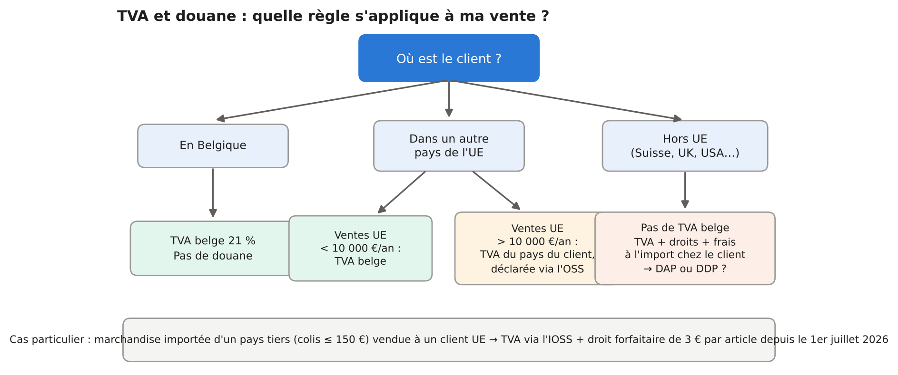
VAT and customs: which rule applies to my
sale?
Sale to a consumer in another EU country. As long as
your distance sales to all other EU countries combined stay under
10,000 euros a year, you apply Belgian VAT. Above that,
you apply the customer’s country’s VAT (19% in Germany,
21% in the Netherlands, 20% in France…). So as not to register in each
country, you declare and pay these VAT amounts in a single quarterly
return via the OSS one-stop shop, with the FPS Finance.
Practical consequence: your site must be able to display and invoice
different VAT rates depending on the delivery country.
Sale to a consumer outside the EU (Switzerland, United
Kingdom, United States…). You do not charge Belgian VAT
(export). But on arrival, the customer’s country collects its VAT, any
customs duties and customs-clearance fees charged by the carrier. Two
options: delivered duty paid (DDP), where you pay
everything in advance and build it into your price, or duties at
the customer’s charge (DAP), where the customer pays on
delivery. The second option is acceptable if it is clearly announced; it
is disastrous when it is discovered at the door, as in the opening
question.
Goods imported from third countries sold to EU consumers
(parcels of 150 euros maximum). Since July 2021, VAT is due on
all parcels, even low-value ones; the IOSS one-stop
shop lets you collect it at the time of sale, so that the customer has
nothing to pay on delivery. Since 1 July 2026, the duty
exemption below 150 euros has disappeared: a flat duty of 3
euros per item applies. This reform targets primarily the
platforms that ship from China, but it concerns any seller whose
customers have parcels imported.
The documents. A shipment outside the EU travels
with a commercial invoice and a customs declaration (CN22 or CN23 for
the post) stating the product’s nomenclature code (HS
code), which determines the applicable duties. Carriers generate these
documents if you provide them with the right data from your site: this
is a requirement of the requirements specification.
Incoterms, customs regimes and VAT in detail are dealt with in UE
719105U32D2.
7.5 The
landed price: the central concept of the chapter
The landed price (landed cost) is what the customer
really pays: the product price, plus delivery, plus their country’s VAT,
plus any customs duties, plus customs-clearance fees. It is this price
that the customer compares with your competitors’, and it is this price
that your site must display before payment, or at least announce.
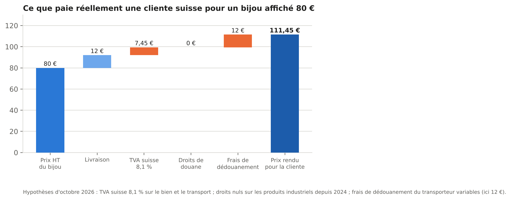
What a Swiss customer really pays for a
piece of jewellery displayed at €80
The
BELGA CRAFT example: three landed-price calculations
Case 1 — German customer, jewellery displayed at 95 euros
incl. VAT on the German site. BELGA CRAFT exceeds 10,000 euros
of distance sales in the EU: it applies German VAT of 19%, declared via
the OSS. Price excluding VAT: 95 ÷ 1.19 = €79.83. Delivery free from 80
euros. No customs. Landed price: 95 euros, the one
displayed. Nothing to pay on delivery.
Case 2 — Swiss customer, jewellery displayed at 80 euros
excluding VAT. Export outside the EU, so no Belgian VAT.
Delivery 12 euros. On arrival: Swiss VAT of 8.1% on the goods and the
transport, i.e. €7.45. Customs duties: Switzerland abolished duties on
industrial products on 1 January 2024, so €0. Carrier’s
customs-clearance fees: variable, here €12. Landed price: 111.45
euros, of which 19.45 euros demanded at the door if BELGA CRAFT
sells on a DAP basis. On a DDP basis, BELGA CRAFT pays these 19.45 euros
and displays an all-inclusive price. The opening question is settled:
either display the landed price, or warn in full words.
Case 3 — Belgian customer of a Chinese seller, item at 40
euros. Belgian VAT of 21% collected at the sale if the seller
or the platform uses IOSS (€8.40). Since 1 July 2026: flat duty of 3
euros per item. Landed price: 51.40 euros excluding delivery. This case
concerns you as a competitor: the price gap with the Chinese platforms
has narrowed.
Common mistake. Displaying “delivery: €12” and
believing the Swiss customer is warned. She is, for delivery, but not
for VAT and customs-clearance fees. The notice must be explicit:
“Outside the EU: VAT, duties and customs-clearance fees at the
recipient’s charge, approximately X% of the amount.”
Self-check
What are the customer’s four expectations regarding delivery, and
what does each cost?
From what volume does direct injection become attractive, and
why?
BELGA CRAFT sells 12,000 euros a year to Dutch customers and 3,000
to German customers. What VAT does it apply to each, and how does it
declare it?
Recalculate the landed price of the jewellery for a British customer
(VAT 20%, no duties below a certain threshold to be checked,
customs-clearance fees £10).
How does the 3-euro-per-item duty change the competition between a
Belgian webshop and a Chinese platform?
★ FPS Finance, “OSS
one-stop shop”: the Belgian rules, by the administration. 15
minutes.
★ European Commission, Access2Markets:
the official tool to find duties and formalities country by country. To
be used for the landed-price calculation of problem scenario 7.
Test yourself before moving on. Multiple-choice questions are marked with one click; for open questions, write your answer first, then compare it with the model answer.
Multiple-choice questions
A Swiss customer orders a piece of jewellery displayed at 80 euros excluding VAT and pays for it under DAP. She has to pay a surcharge "at the door" at the moment of delivery. What is this surcharge mainly made up of?
Switzerland is outside the EU: no Belgian VAT, but on arrival Swiss VAT of 8.1% and the carrier's customs-clearance fees. Duties on industrial products have been abolished since 1 January 2024 (0 euros). Under DAP, it is the customer who pays this on delivery.
A Belgian e-commerce retailer makes 12,000 euros of distance sales per year to consumers in other EU countries. Which VAT rule applies?
The threshold of 10,000 euros of intra-EU distance sales is exceeded: you apply the VAT of the country of delivery (19% DE, 21% NL, 20% FR...), declared via the OSS to the SPF Finances. Consequence: the website must display and invoice different rates depending on the country.
What is the difference between selling DDP and DAP to a country outside the EU?
DDP (Delivered Duty Paid): the seller pays everything in advance and displays an all-inclusive price. DAP: VAT, duties and customs-clearance fees are borne by the customer on arrival - acceptable only if they are clearly announced, disastrous when discovered at the door.
Since 1 July 2026, what has changed for parcels imported from third countries worth less than 150 euros?
Since 1 July 2026, the duty exemption below 150 euros has been abolished and replaced by a flat-rate duty of 3 euros per item. VAT, for its part, has been due on all parcels since July 2021 (collectible via the IOSS). The reform targets first and foremost the platforms shipping from China.
From what point does the "direct injection" model become truly worthwhile compared with direct shipping from Brussels?
Direct injection groups the parcels of a single country and hands them over in one go to the national network: the cost per parcel falls and the delivery time approaches the domestic one, but only from a regular volume onward (a few dozen parcels per week). Without local stock: no need to tie up products.
Open questions
Explain the notion of "landed price" (landed cost), list its components and say why it is the central notion of the chapter for anyone selling abroad.
The landed price is what the customer actually pays once the parcel is delivered: (1) the price of the product, (2) the delivery fees, (3) the VAT of his country, (4) any customs duties (sales outside the EU), (5) the customs-clearance fees charged by the carrier. It is this price - and not the price displayed excluding tax - that the customer compares with your competitors. It is central because an attractive entry price can become uncompetitive, or even trigger a parcel refusal and a negative review, if fees appear on delivery. The website must therefore display the landed price before payment, or failing that explicitly announce the remaining fees (e.g. for Switzerland: "Outside the EU: VAT, duties and customs-clearance fees borne by the recipient").
Describe the three ways to deliver a foreign customer, with for each its advantages, its drawbacks and the moment in the life of the company when it is suitable.
1) Direct shipping: each order leaves from Brussels (bpost, PostNL, DHL, DPD, GLS). Simple, with no investment, it is the starting point for any SME; but more expensive per parcel, slower, and returns come back to Belgium. 2) Direct injection: the parcels of a single country are grouped and handed over in one go to the national distribution network. The cost per parcel falls and the delivery time approaches the domestic one; but it requires a regular volume (a few dozen parcels/week). 3) Stock in the country (a local provider or a marketplace's logistics): shipping in 1-2 days, local returns; but this ties up stock and creates fixed costs - reserved for large volumes and, for a made-to-order product, for the common pieces only. The three models often follow one another as volumes grow.
BELGA CRAFT sells 12,000 euros per year to Dutch customers and 3,000 euros to German customers. Which VAT does it apply to each, and how does it declare it?
The total of intra-EU distance sales (12,000 + 3,000 = 15,000 euros) exceeds the 10,000-euro threshold. It therefore applies the VAT of the customer's country for both: 21% for Dutch customers, 19% for German customers. To avoid registering for VAT in each country, it declares and pays this VAT in a single quarterly declaration via the OSS one-stop shop to the SPF Finances. Its website must be able to display and invoice different VAT rates depending on the country of delivery.
On the Dutch-language version of the BELGA CRAFT site, 40% of
customers drop off at the payment page. On the Belgian version, 18%. The
pages are identical, but for one detail. Which one?
Problem scenario 8:
“Black Friday, 11:40 p.m.”
The situation. Black Friday, 11:40 p.m. BELGA
CRAFT’s dashboard is going haywire: chargebacks have multiplied fivefold
in 48 hours; 37 orders come from the same IP address with different
cards; a Dutch customer reports an email “from you” asking her to
confirm her bank details; and the drop-off rate at the payment page of
the Dutch version is 40%, against 18% in Belgium. The payment gateway
offers to activate a rule that will automatically block 8% of “at-risk”
transactions. The designer calls you: “Do I shut the site down or not?
And what do I tell the customers?”
What you must produce. First, in the heat of the
moment: incident management, in six roles (management, technical,
security, finance, communication, legal), with the decisions taken at
each step, including the answer to three questions: shut down or keep
running with restrictions? what to tell the customers, and when? must
the Data Protection Authority be notified, and within what deadline?
Then, in cold blood: the choice of payment methods and gateway for BELGA
CRAFT’s two markets, with the grid below and the simulated annual cost
for the target turnover, and a one-page plan in the event of a security
incident.
Criterion
Weight
Gateway A
Gateway B
Gateway C
Payment methods covered
30%
Total estimated cost
30%
Integration with your platform
20%
Security and anti-fraud
10%
Service and payout time
10%
How it runs (4 periods).
Incident simulation (1.5 periods, without the chapter).
Assign the six roles. Every ten minutes, the tutor advances the clock by
six hours and adds a piece of information. The scribe notes each
decision and what motivated it. At the end: what should you have known
beforehand? Those are your learning objectives.
Research (1 period). Chapter 8; public rates of Mollie,
Stripe and a third gateway; a demonstration by the teacher, in a test
environment, of a Bancontact payment, an iDEAL payment, a card payment
with strong authentication, a failure and a refund.
Production (1 period). The grid, the simulated annual cost,
the incident plan.
Sharing (0.5 period). The teams compare their Black Friday
night decisions with what they now know. The tutor closes.
If you get stuck. The Dutch drop-off rate of 40%
probably has a simple cause: which payment method is missing? For the
notification to the DPA: 72 hours after becoming aware of a data breach,
if there is a risk to individuals; the phishing email is not necessarily
a breach of your data, but it must be checked. For the anti-fraud rule:
8% of transactions blocked also means honest customers refused; what
does each option cost?
For your project. Payment methods, gateway and
incident plan: the second half of milestone J4.
Milestone J4 — to be submitted at the end of session 8 (2 to
4 pages). For each market: costed delivery model and returns
policy, VAT treatment (and customs where applicable), landed price of a
typical order, payment methods and gateway chosen with estimated cost, a
one-page plan in the event of a security incident.
8.1 The journey of a payment
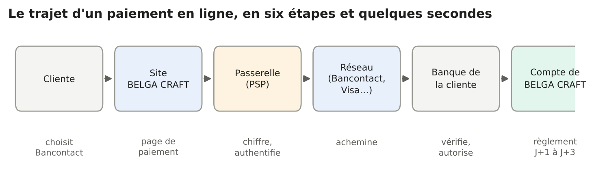
The journey of an online
payment
When a customer pays, six actors intervene in a few seconds: herself,
your site, the payment gateway (or PSP, payment service
provider) which encrypts and transmits, the network
(Bancontact, Visa, Mastercard, iDEAL…), the customer’s
bank which authorises, and your account, which receives the
money generally within one to three business days. The gateway is your
point of contact: it is the one you choose, integrate and pay.
8.2 Payment methods, country
by country
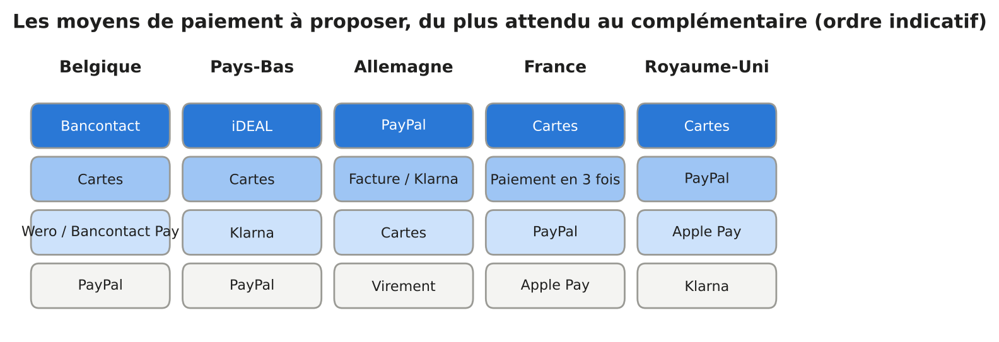
The payment methods to offer, from the
most expected to the complementary
Family
Examples
Cost to the merchant
Key point
Cards
Visa, Mastercard, Bancontact (card)
Commission per transaction
Universal, but not always preferred
Payment by app or instant transfer
Bancontact Pay, iDEAL, Wero
Often lower than cards
The expected method in Belgium and the Netherlands
Wallets
PayPal, Apple Pay, Google Pay, Alipay
Variable, PayPal rather expensive
PayPal is almost mandatory in Germany
Deferred or split payment
Klarna, payment on invoice, payment in 3 instalments
Higher commission
Germany (invoice), France (3 instalments); raises the basket
Classic transfer
SEPA
Low
B2B, large amounts
Crypto-assets
Bitcoin, stablecoins
Variable
Marginal in retail; European MiCA framework; volatility
In Belgium, Bancontact remains unavoidable: around
18 million cards in circulation and 2.5 billion payments in 2025,
including 393 million online payments via the mobile solutions. In
spring 2026, the Payconiq by Bancontact app became Bancontact
Pay, and Belgian merchants gained access to
Wero, the European payment solution launched by the EPI
initiative (source: Bancontact Company, press release of 6 November
2025).
The answer to the opening question lies in this table: the Dutch
version of the site did not offer iDEAL.
8.3 Choosing a gateway
Five criteria:
The payment methods covered in your markets:
Bancontact, iDEAL, Klarna, PayPal…
Integration with your platform (Shopify,
WooCommerce, PrestaShop…) and your accounting.
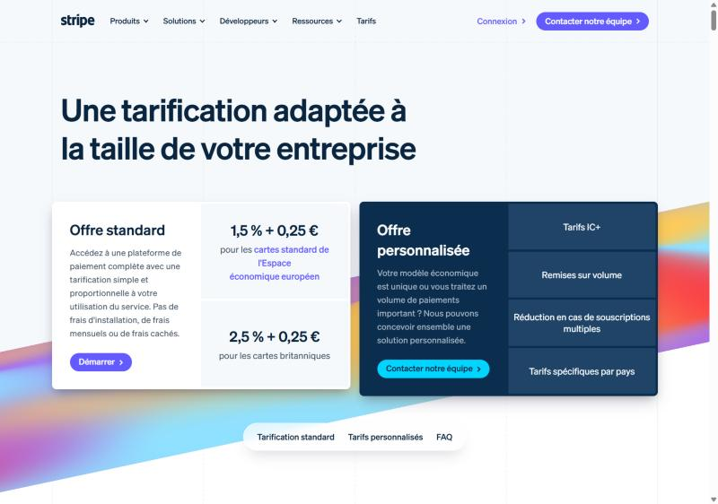
Stripe, rates displayed for Belgium,
October 2026
Stripe’s public rates for Belgium (consulted on 18 October 2026) give
an order of magnitude:
Payment type
Rate
Standard European Economic Area cards
1.5% + €0.25
British cards
2.5% + €0.25
International cards
3.15% + €0.25
Currency conversion
+ 2%
Bancontact
€0.35 per transaction
Other gateways common in Belgium: Mollie (very widespread among
Benelux SMEs, strong on Bancontact and iDEAL), Adyen, Worldline, PayPal,
Buckaroo. Rates change: compare them at the time of your project, and
negotiate beyond a few hundred thousand euros of volume.
8.4 Security: threats and
protections
The threats: payment fraud (stolen cards, identity
theft, abusive chargebacks), phishing (fake sites or fake emails
imitating your brand), data leaks (theft of the customer database), and
money laundering (use of your shop for illicit transactions).
The protections:
HTTPS across the whole site, not just the payment
page.
Strong customer authentication (SCA), imposed in
the EU by the PSD2 directive and implemented through 3-D Secure 2: the
customer confirms the payment via their banking app or a code. It
reduces fraud and shifts the liability for disputes to the bank.
Tokenisation: your site never stores a card number;
the gateway replaces it with a token.
PCI DSS compliance, carried in practice by the
gateway if you do not handle the card data yourself.
The gateways’ anti-fraud tools, which score each
transaction in real time (address, device, history).
In the event of a personal data leak, the GDPR
requires notifying the Data Protection Authority (DPA)
within 72 hours and informing the individuals concerned if the risk is
high. A written reaction plan prepared in advance, even a single page,
is worth more than improvising on a Black Friday Saturday.
The BELGA CRAFT
example: its payments per market
Belgium
Netherlands
Germany
Methods offered, in order
Bancontact, cards, Wero, PayPal
iDEAL, cards, Klarna, PayPal
PayPal, invoice (Klarna), cards, transfer
Gateway
Mollie (a single integration for the three countries)
Estimated cost
1.2% of turnover on average
1.0%
2.4% (PayPal and Klarna more expensive)
Strong authentication
3-D Secure 2 via Mollie
Incident plan
DPA contact, email template for customers, provider’s contact
details, drafted in advance
The German surcharge is accepted: without PayPal or invoice, Lena
does not order.
Self-check
Describe the journey of a payment in six steps and say at which step
strong authentication occurs.
Why is PayPal almost mandatory in Germany when it is secondary in
Belgium?
An e-commerce business makes 200,000 euros in sales, average basket
80 euros, half European cards, half Bancontact. Calculate the annual
payment cost at the displayed Stripe rate.
What is tokenisation, and how does it reduce your security
obligations?
What must you do, and within what deadline, if your customer
database is stolen?
National Bank of Belgium, payment statistics: to follow the
evolution of usage.
Self-assessment
Test yourself before moving on. Multiple-choice questions are marked with one click; for open questions, write your answer first, then compare it with the model answer.
Multiple-choice questions
On the Dutch version of the website, 40% of customers abandon at the payment page, compared with 18% on the Belgian version. The pages are otherwise identical. What is the most likely cause according to the course?
iDEAL is the payment method expected in the Netherlands (like Bancontact in Belgium). Its absence from the payment page explains the massive abandonment: it is the answer to the chapter's opening question.
In the path of an online payment, what exactly is the role of the payment gateway (PSP)?
The gateway (PSP) encrypts and transmits the transaction between the website, the network and the banks; it is the party the merchant chooses, integrates and pays. Authorising the payment is the job of the customer's bank; the card is issued by that bank.
What does strong customer authentication (SCA), required by PSD2 and implemented by 3-D Secure 2, provide?
The customer confirms the payment via his banking app or a code. This reduces fraud and, a key point for the merchant, shifts liability for disputes (chargebacks) to the bank. It has no effect on commissions or on PCI-DSS obligations.
Your e-commerce customer base is stolen (a leak of personal data). What must you do, and within what timeframe?
The GDPR requires notifying the APD within 72 hours of becoming aware of the breach, and informing the data subjects if the risk to them is high. Hence the value of a written reaction plan prepared in advance, even a one-pager.
What is tokenisation, and why does it reduce your security obligations?
Tokenisation means that your website never holds a card number: the gateway replaces it with a token. Since you do not handle card data, the heavy PCI-DSS compliance is in practice borne by the gateway.
Open questions
Describe the path of an online payment (the parties involved) and say at which step strong authentication occurs.
Six parties intervene within a few seconds: (1) the customer, (2) your website, (3) the payment gateway / PSP, which encrypts and transmits, (4) the network (Bancontact, Visa, Mastercard, iDEAL...), (5) the customer's bank, which authorises, (6) your account, generally credited within one to three business days. Strong authentication (SCA / 3-D Secure 2) occurs at the moment of authorisation: before the customer's bank validates, she confirms the payment via her banking app or a code. This is also what shifts liability for disputes to the bank.
Cite and explain at least four protections to put in place to secure the payments and data of an e-commerce business.
1) HTTPS across the whole website, not only the payment page. 2) Strong customer authentication (SCA via 3-D Secure 2, required by PSD2): reduces fraud and shifts liability for disputes to the bank. 3) Tokenisation: the card number is never stored on the website, the gateway replaces it with a token. 4) PCI-DSS compliance, borne by the gateway if the merchant does not handle card data. 5) The gateway's anti-fraud tools, which score each transaction in real time (address, device, history). In the event of a data leak: notification to the APD within 72 hours and information of the data subjects if the risk is high, ideally following a written incident plan prepared in advance.
An e-commerce business makes 200,000 euros of sales, with an average basket of 80 euros, half paid by European card (1.5% + 0.25 euros), half by Bancontact (0.35 euros per transaction). Calculate the annual cost of payments at the displayed Stripe rate.
Number of orders: 200,000 euros / 80 euros = 2,500 orders, i.e. 1,250 by card and 1,250 by Bancontact. Card turnover: 1,250 x 80 = 100,000 euros. Card cost = 1.5% x 100,000 euros + 0.25 euros x 1,250 = 1,500 euros + 312.50 euros = 1,812.50 euros. Bancontact cost = 0.35 euros x 1,250 = 437.50 euros. Total annual cost = about 1,812.50 + 437.50 = 2,250 euros, i.e. roughly 1.1% of turnover. This shows the value of Bancontact, markedly cheaper than the card at the displayed rate.
Sessions 9 to 12 — 16 periods, including the final
assessment
This module covers the last two points of the programme: the critical
analysis of international sites, and the drafting of the requirements
specification and the business plan. It is here that milestones J1 to J5
become the two documents of the final assessment.
Self-assessment
Test yourself before moving on. Multiple-choice questions are marked with one click; for open questions, write your answer first, then compare it with the model answer.
Multiple-choice questions
What must the analysis of a competitor's website end with (chapter 9)?
The analysis concludes with a SWOT summary, whose aim is not to judge the competitor but to draw from it what you will take up and what you will do better. An overall score or a ranking does not say what to do with the analysis for your own project.
Which free tool do you use for the TECHNICAL angle (mobile performance) of the website analysis?
PageSpeed Insights measures performance and the Core Web Vitals (technical angle). Similarweb serves to estimate traffic (economic angle), Wappalyzer to identify the platform and the tools, Google Trends relates rather to the upstream market work.
Among these requirements-specification requirements (chapter 10), which one is correctly phrased because it is VERIFIABLE at delivery?
The rule of chapter 10: a requirement that cannot be tested ("the website will be user-friendly") is rewritten until it becomes measurable. Only "displays in under 2.5 seconds on mobile 4G" can be verified objectively at delivery; the other three phrasings remain unverifiable gut feeling.
What are the TWO documents submitted at the final assessment, which correspond to the two learning outcomes of the course?
The two outcomes are the business plan (outcome 1) and the requirements specification covering the seven sections (outcome 2); these are the two documents submitted a week before session 12. The SWOT, the mock-ups and the quotes are pieces that feed or accompany these documents (often in an appendix), not the assessed deliverables themselves.
Open questions
Explain concretely how the test purchase carried out in session 9 (website analysis) directly feeds the requirements specification drafted in session 10.
The test purchase consists of going through to payment (without paying) at a competitor's and noting each step with the grid: arrival, navigation, product page, cart, payment, after-sales. Each friction identified becomes a requirement in my requirements specification. Examples: if the competitor announces the delivery time only at the cart, I write in my "cart" section that the estimated time is displayed from the product page onward; if it forces account creation, I state in my "purchase process" section that purchase is possible without an account; if it accepts only cards, I provide for local methods by country. Thus the audit grid (what competitors do or miss) is transformed, line by line, into verifiable requirements for my own website - this is the direct link between milestone J5 and outcome 2. The "If you get stuck" section says it: each friction noted at a competitor's becomes a requirement at your own.
Cite the seven sections of the requirements specification and give, for one of them, a verifiable requirement.
The seven sections, in the order of the customer journey: (1) usability; (2) language adaptation; (3) welcoming visitors; (4) loyalty; (5) cart; (6) purchase process; (7) order tracking. Example of a verifiable requirement for section 6 (purchase process): "a funnel of three steps maximum (address, delivery, payment) with a progress indicator, purchase possible without creating an account, and payment methods displayed by country of delivery (iDEAL leading in the Netherlands)". Another example for section 7 (order tracking): "an online withdrawal button accessible from the order page and the footer, available throughout the withdrawal period, followed by a confirmation by email with date and time" - an obligation that came into force on 19 June 2026. Each requirement must be testable at delivery, not merely described.
Module 5 · Analyse & plan · Chapter 9 · ~7 min read
Analysing an e-commerce site like a professional
Session 9 — 4 periods
Opening question
You have three minutes in front of a German competitor’s site. What
do you look at first, and what tells you whether it is good?
Problem scenario 9: “Why
them and not us?”
The situation. BELGA CRAFT’s designer spent her
Sunday on the site of a jewellery designer in Düsseldorf who sells
across Europe, and on that of a major international brand. “Their
jewellery is no better than mine. But I bought on both sites without
thinking, and on mine, my own friends tell me they hesitate.” She noted
that the German site loads in less than a second on mobile, displays the
delivery time right on the product page, offers five payment methods and
shows 4,000 verified reviews. Hers takes four seconds, only announces
the time at the basket and has no reviews. She wants to know, precisely
and not “roughly”, what makes the difference, and what she should copy
first.
What you must produce. The critical analysis of two
competitors in your project (a local player and an international player
in your markets): the chapter’s scoring grid completed for each,
annotated screenshots, a SWOT, five practices to adopt and five mistakes
to avoid; and a test purchase on one of the two sites, up to payment
without paying, scored with the grid below.
Step
Criteria
Score out of 5
Arrival
Loading, clarity of the offer, language detected
Navigation
Search, categories, filters
Product page
Information, visuals, reviews, availability, delivery time
Basket
Total price visible, fees, promo codes
Payment
Simplicity, methods offered, trust, purchase without account
After-sales announced
Times, tracking, returns, contact
How it runs (4 periods).
Group analysis (30 min, without the chapter). Clarify:
“buying without thinking” (what happens, concretely?), speed,
reassurance, verified reviews. State the problem: how to assess a site
other than by feel? Brainstorm the criteria; group them into families.
Learning objectives.
Research (45 min). Chapter 9; PageSpeed Insights;
Wappalyzer; Similarweb free version; the sites themselves, on mobile and
on desktop.
Production (90 min). Grids, annotated screenshots, SWOT,
test purchase.
Sharing (15 min). Three practices per team on the board;
the group votes for those that apply to the most projects. The tutor
closes.
If you get stuck. Note first, discuss afterwards: a
grid filled in silently by each member, then compared, is worth more
than a discussion without a grid. And distinguish what is expensive to
copy (4,000 reviews) from what is not (displaying the delivery time on
the product page).
For your project. This is milestone J5.
Milestone J5 — to be submitted at the end of session 9 (3 to
5 pages). The critical analysis of two competitors in your
markets: grids, SWOT, lessons for your project.
9.1 The six angles of
the pedagogical dossier
The official programme requires analysing sites from six angles.
Here, for each one, are the questions to ask and the free tools that
help.
Angle
Questions
Tools
Technical
Speed on mobile? Correct display on smartphone? Indexed in the
country’s language? HTTPS? Which platform?
PageSpeed Insights, Wappalyzer, Google “site:…” search
Economic
Model (own site, marketplace, D2C)? Price positioning? Range?
Promotions? Who is behind it (legal notices)?
The site itself, the country’s trade register, Similarweb for
traffic
Ergonomics
Clear navigation? Effective search? Complete product pages? How many
steps to pay? Purchase without account?
A test purchase up to payment
Markets
Which countries, which languages, which currencies? Genuinely
localised content or translated?
Country selector, hreflang (source code), national versions
Payment
Which methods per country? Strong authentication? Deferred
payment?
The payment page
Delivery
Times and costs announced? Options? Tracking? Returns policy?
Withdrawal button?
Product page, basket, general terms and conditions
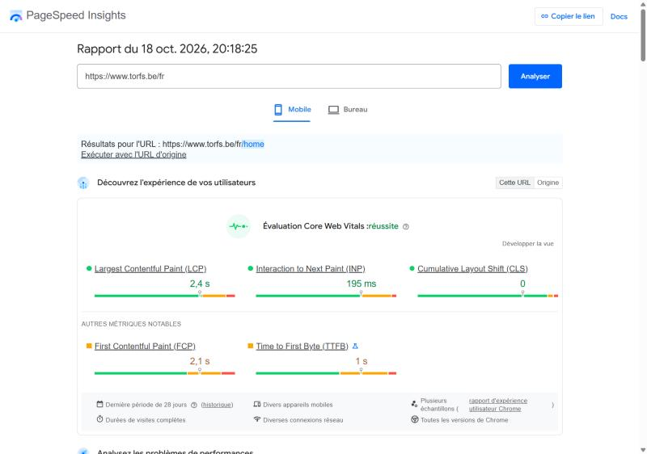
PageSpeed Insights on the French version
of the Torfs site, 18 October 2026: the three Core Web Vitals indicators
are green
The analysis ends with a SWOT synthesis: strengths
and weaknesses of the site, opportunities and threats in the markets
that interest you. The aim is not to judge the competitor, but to draw
from it what you will adopt and what you will do better.
Smooth journey, purchase without account, few steps
Standard
Account mandatory, multiple steps
Payment methods
12%
Local and international
Cards and PayPal
Cards only
Delivery and returns
10%
Times and costs visible early, tracking, easy return
Correct times, paid return
Vague, complicated return
Customer service and trust
10%
Several channels, country’s language, complete legal notices,
verified reviews
Form only
Not found
International SEO
8%
hreflang, content per country, well ranked on its keywords
Basic
Absent
Security and compliance
7%
HTTPS, SCA, accessibility, withdrawal button, compliant cookies
Legal minimum
Visible gaps
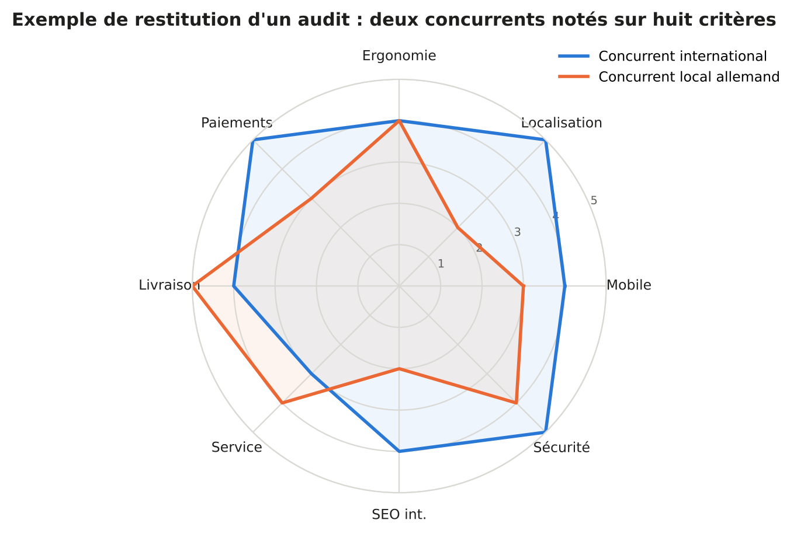
Example of an audit presentation: two
competitors scored on eight criteria
The
BELGA CRAFT example: what it learned from two competitors
BELGA CRAFT analysed an international player (a designer marketplace
very present in Germany) and a German designer who sells on her own
site.
The marketplace: excellent on mobile, payments and
localisation; weak on service (no human contact) and with no brand
story. The German designer: remarkable narrative and
photos, fast delivery and easy returns in Germany; but a site that is
slow on mobile, weak SEO, no English version, cards only.
What BELGA CRAFT took from it: it will keep its brand narrative (its
strength against the marketplace), will offer PayPal and invoice from
the start (the designer’s weakness), and will aim for a site that is
fast on mobile with rich product pages, where the two competitors both
leave a gap. These three decisions go into its requirements
specification.
Self-check
Name the six angles of analysis of the pedagogical dossier and one
free tool for each.
What do the three Core Web Vitals measure, and why do they matter
for a commercial site?
A competitor has excellent SEO but only accepts cards: what score on
the grid, and what opportunity for you?
What is the difference between analysing a site to judge it and
analysing it to learn from it?
How do you check, in two minutes, whether a site has genuine
localised versions or mere translations?
Test yourself before moving on. Multiple-choice questions are marked with one click; for open questions, write your answer first, then compare it with the model answer.
Multiple-choice questions
The course specification requires analysing a website from six angles. Which free tools correspond to the "technical" angle?
The technical angle (mobile speed, smartphone display, HTTPS, platform) is assessed with PageSpeed Insights, Wappalyzer and the "site:..." search. The test purchase serves usability, the register the economic angle, and hreflang/country selector the markets angle.
In the chapter's scoring grid, which criterion has the highest weight?
Mobile performance weighs 20%, ahead of localisation (18%) and usability/checkout funnel (15%). Security/compliance (7%) and international search optimisation (8%) weigh the least, even though they remain scored.
How can you check in two minutes whether a website has real localised versions rather than mere translations?
Localisation goes beyond translation: currency, taxes, payment methods, content and calendar adapted. A merely translated website typically keeps a single currency and payment methods not adapted to the target market.
A competitor has excellent international search optimisation but accepts only bank cards. How should you interpret this observation for your project?
Accepting only cards makes the "payment methods" score drop and lets buyers attached to their local methods leave. Offering the methods expected by market from the start therefore becomes a concrete competitive opportunity.
What is the right stance when analysing a competitor's website, according to the course?
The aim is not to judge but to learn. The SWOT summary serves to distinguish what you take up (good practices) from what you will improve (the weaknesses where there is still room to be taken).
Open questions
Cite the six analysis angles of an e-commerce website required by the course specification and give, for each, a key question and a free tool.
1) Technical: speed on mobile, HTTPS, which platform? -> PageSpeed Insights, Wappalyzer. 2) Economic: which model (own website, marketplace, D2C), which price positioning, who is behind it? -> the website, the commercial register, Similarweb. 3) Usability: clear navigation, how many steps to pay, purchase without an account? -> a test purchase through to payment. 4) Markets: which countries, languages, currencies; localised or translated content? -> country selector, hreflang, national versions. 5) Payment: which methods per country, strong authentication, deferred payment? -> the payment page. 6) Delivery: announced times and costs, options, tracking, returns, withdrawal button? -> product page, cart, terms and conditions. The analysis closes with a SWOT.
What do the Core Web Vitals measure, and why do they matter for a merchant website?
The Core Web Vitals are Google's three indicators on the loading and interaction experience of a page: the display speed of the main content, responsiveness to user actions, and visual stability (elements do not jump during loading). They matter because slowness on mobile drives people away: in the problem scenario, the German website loads in under a second and converts, while BELGA CRAFT's takes four seconds and causes hesitation. They weigh 20% of the grid (mobile performance: green and < 2.5 s = excellent). They also influence search ranking. They are tested free with PageSpeed Insights, on your own website as on those of competitors.
You have three minutes in front of a foreign competitor's website. Propose a quick and structured evaluation method, rather than a "gut-feeling" judgement.
Rather than relying on the general impression, you fill in a grid, preferably first in silence then by comparing. Recommended order in three minutes: (1) Arrival - loading speed on mobile, clarity of the offer, detected language (offered or imposed). (2) Product page - information, visuals, verified reviews, availability and above all the delivery time displayed early. (3) Cart and payment - total price visible with VAT and fees, payment methods offered by country, possibility of buying without an account, number of steps. (4) Reassurance - reviews, legal notices, contact channels. You score each step out of 5. Finally, you distinguish what is costly to copy (e.g. 4,000 reviews) from what is not (displaying the delivery time on the product page) in order to prioritise what you will take up.
Module 5 · Analyse & plan · Chapter 10 · ~9 min read
The requirements specification
Session 10 — 4 periods
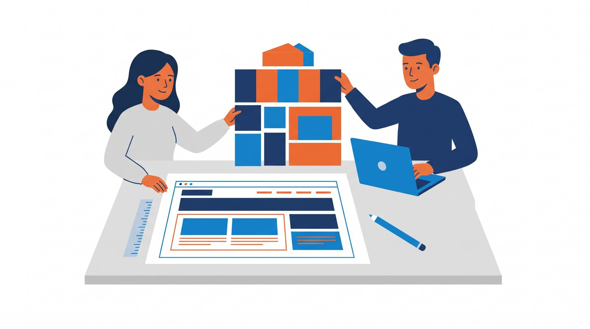
Opening question
You ask three agencies for a quote for “a three-language e-commerce
site”. You receive 8,000, 25,000 and 60,000 euros. None of the three is
wrong: each imagined a different site. The requirements specification
exists so that they imagine the same one.
Problem scenario 10:
“The 38,000-euro quote”
The situation. BELGA CRAFT asked a web agency for a
quote for “the international version of the site”. The reply: 38,000
euros, a 14-page quote, and lines like “multilingual module”, “payment
connector”, “UX optimisation”. The designer does not know whether it is
expensive, nor whether everything is there: nothing about Bancontact or
iDEAL, nothing about the withdrawal button mandatory since June 2026,
nothing about accessibility, and the “translation” is entrusted to an
automatic tool. The agency asks for a requirements specification “to
refine”. She has never written one.
What you must produce. The seven sections of the
requirements specification of your project (ergonomics, language
adaptation, welcoming visitors, loyalty, basket, purchasing process,
order tracking) for your two markets, with at least one verifiable
requirement per line; the mock-ups (Figma, Canva or paper) of the basket
page and the payment page for one of your markets; and a list of ten
questions to ask the agency based on its quote.
How it runs (4 periods).
Group analysis (30 min, without the chapter). Clarify:
requirements specification, verifiable requirement, mock-up, “module”.
State the problem: what is a requirements specification for, for whom,
and what happens without one? Brainstorm: everything the site must do
for a German customer, from arrival to the return of the parcel. Group
into sections, then compare with the seven official sections. Learning
objectives.
Research (30 min). Chapter 10; appendix D.8; appendix A for
the 2024–2026 obligations.
Guided drafting (2 periods). The tutor goes round the
teams. Rule: a requirement that cannot be verified (“the site will be
ergonomic”) is rewritten until it can be tested (“each product page
displays in less than 2.5 seconds on mobile 4G”).
Cross-review (30 min). Each team re-reads another team’s
requirements specification using the list of seven sections: what is
missing, what remains vague, what will not be verifiable?
If you get stuck. Start again from your personas and
your test purchase of session 9: each friction you noted at a competitor
becomes a requirement at yours. And for the quote: a line you do not
understand is a question to ask, not a line to accept.
For your project. This requirements specification,
re-read and completed, is one of the two documents of the final
assessment.
10.1 What a
requirements specification is for
The requirements specification describes what the site must do, for
whom, with which constraints, in what timeframe and what budget. It
serves three purposes: to obtain comparable quotes, to frame the build
(what is not in it will not be delivered), and to check on delivery that
you have what you asked for. It does not say how to do it: that
is the provider’s job.
The pedagogical dossier makes it the second learning outcome and sets
seven minimum sections. They follow the customer’s journey.
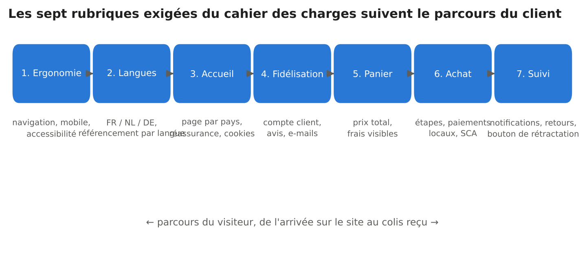
The seven required sections follow the
customer’s journey
10.2 The seven sections, one by
one
1. Ergonomics. The tree structure (categories,
depth), navigation and search, the mobile version (designed first for
the smartphone), accessibility: since 28 June 2025, e-commerce sites
aimed at consumers must be accessible to people with disabilities
(European Accessibility Act; reference standard EN 301 549, which
incorporates the WCAG criteria). Micro-enterprises benefit from a
special regime to be checked.
2. Language adaptation. The languages per market,
what is translated and what is localised, who translates and who
reviews, the management of content in several languages (one page, three
versions), SEO per language (site structure, hreflang, keywords).
3. Welcoming visitors. The home page per country,
language detection (offer, never force a redirect: this is also a rule
of the anti-geoblocking regulation), the reassurance elements visible
from arrival (reviews, labels, address, contact), the compliant cookie
banner (refusing as simple as accepting).
4. Loyalty. The customer account (optional at
purchase), the order history, the programme chosen in module 3 (points,
referral…), the automated emails (confirmation, shipping, review
request, basket reminder) with consent, review collection.
5. Basket. The total price displayed with the
country’s VAT and the delivery costs, basket saving, promotional codes,
free-delivery thresholds, abandoned-basket reminders, delivery-time
estimate.
6. Purchasing process. The number of steps (one page
or several), purchase without creating an account, the payment methods
per country and their display order, strong authentication, the
confirmation page, the invoice (structured electronic invoice for
Belgian business customers since 2026).
7. Order tracking. Notifications by email or SMS,
the tracking number, the choice of delivery point, the returns procedure
(label, drop-off point, refund within 14 days), and the online
withdrawal button, mandatory since 19 June 2026 for distance
sales to consumers: a clearly identified function, available throughout
the withdrawal period, followed by a confirmation on a durable
medium.
Design: graphic charter, mock-ups of the key pages (home, category,
product, basket, payment, tracking)
Legal obligations: GDPR and cookies, legal notices per country,
consumer law, accessibility, VAT per country, product safety (GPSR
information on the product pages)
Planning: phases, milestones, tests, go-live per market
Quick to launch, multi-country management (Markets), many apps,
integrated payment
Subscriptions and commissions, dependence on the ecosystem, limited
customisation
SMEs and D2C brands that want to move fast
WooCommerce
Free, highly customisable, on WordPress
Maintenance, security and performance at your charge
SMEs with a WordPress site and a provider
PrestaShop
Open source, European community, modules
Paid modules, scalability
European SMEs
Shopware
Powerful in multi-country and B2B, of German origin
More technical to set up
Exporting SMEs and mid-caps
Lightspeed eCom
Linked to the in-store till, very present in the Benelux
Less suited to large catalogues
Businesses with a physical shop
Adobe Commerce (ex-Magento)
Very complete, multi-shop, B2B
High cost and complexity
Large companies
Three selection criteria for an exporting SME: native multi-country
management (languages, currencies, VAT per country), the available
gateways and carriers, and the total cost over three years
(subscription, commissions, apps, provider).
The
BELGA CRAFT example: an extract from its requirements specification
Section 6 — Purchasing process (extract)
Purchase possible without creating an account; offer to create an
account after confirmation.
Funnel of three steps maximum: address, delivery, payment; visible
progress indicator.
Payment methods per delivery country, in this order: Belgium:
Bancontact, cards, Wero, PayPal; Netherlands: iDEAL, cards, Klarna,
PayPal; Germany: PayPal, Klarna invoice, cards, transfer. Gateway:
Mollie.
Strong authentication compliant with PSD2 (3-D Secure 2), handled by
the gateway; no card data stored on the site.
Display of the delivery country’s VAT from the basket; full landed
price before the payment button; for non-EU destinations, explicit
mention of the duties and fees at the recipient’s charge.
Confirmation page and email in the customer’s language, with a
summary, estimated time and tracking link.
PDF invoice attached; structured electronic invoice (Peppol) for
Belgian business customers.
Section 7 — Order tracking (extract)
Email on shipping with a tracking number; carrier notifications in
the customer’s language.
Choice between home and pickup point (bpost in Belgium, PostNL in
the Netherlands, DHL in Germany).
Online returns procedure: request from the account or from the order
link, prepaid label (chargeable to the customer except in case of a
defect), refund within 14 days of receipt.
Withdrawal button compliant with Directive (EU) 2023/2673:
accessible from the order page and the footer, pre-filled form,
confirmation by email with date and time.
For your project. Write each section in sentences
verifiable on delivery. “The site will be fast” cannot be verified; “the
three Core Web Vitals are green on mobile for the home page and a
product page” can be verified.
Self-check
What are the three purposes of a requirements specification, and
what is not in it?
Recite the seven sections and give, for each, a precise and
verifiable requirement.
Which legal obligations that came into force between 2024 and 2026
must appear in the requirements specification?
Why must you not force a visitor to be redirected to their country’s
version?
Between Shopify and WooCommerce, which do you recommend to BELGA
CRAFT, and why?
Test yourself before moving on. Multiple-choice questions are marked with one click; for open questions, write your answer first, then compare it with the model answer.
Multiple-choice questions
What is a requirements specification for, and what does it not say?
The requirements specification describes what the website must do, for whom and under what constraints. Its three uses: comparable quotes, framing (what is not in it will not be delivered), verification at delivery. The "how" is a matter for the provider's expertise.
Since what date has the online withdrawal button been mandatory for distance sales to consumers?
The online withdrawal button (EU directive 2023/2673) has been mandatory since 19 June 2026. Be careful not to confuse: 28 June 2025 corresponds to the entry into force of accessibility (European Accessibility Act).
In the "Welcoming visitors" section, why should you never forcibly redirect a visitor to the version of his country?
You offer the language or the national version, you never forcibly redirect: this is a rule of the anti-geoblocking regulation. A visitor must be able to stay on the version of his choice.
Which of these requirements is "verifiable" in the sense of the course and can therefore appear as-is in a requirements specification?
A requirement must be testable at delivery. "The three Core Web Vitals green on mobile" is measurable (PageSpeed Insights); "fast", "user-friendly" or "good experience" cannot be verified and must be rewritten.
An exporting SME wants to launch a website quickly with integrated multi-country management. Which platform does the course cite first for this profile, and with what main limitation?
Shopify is presented for SMEs and D2C brands that want to move fast: quick launch, multi-country management (Markets), integrated payment, many apps; in return, subscriptions and commissions, dependence on the ecosystem and limited customisation.
Open questions
List the seven sections of the requirements specification required by the course specification and give, for each, a precise and verifiable requirement.
1) Usability: "each product page displays in under 2.5 s on mobile 4G"; mobile-first design, accessibility (EAA, EN 301 549/WCAG since 28 June 2025). 2) Language adaptation: "each product page exists in FR/NL/DE, proofread by a human, with hreflang per language". 3) Welcoming visitors: "language detection offered and not imposed (anti-geoblocking); a cookie banner where refusing is as simple as accepting". 4) Loyalty: "optional account at purchase; automatic confirmation/shipping/cart-reminder emails with consent". 5) Cart: "total price displayed with the country's VAT and delivery fees, free-delivery threshold and an estimate of the delivery time". 6) Purchase process: "a funnel of 3 steps maximum, purchase without an account, payment methods ordered by country, 3-D Secure 2". 7) Order tracking: "a tracking number by email, choice of pickup point, refund within 14 days, an online withdrawal button compliant since 19 June 2026". The seven sections follow the customer's journey.
Which legal obligations that came into force between 2024 and 2026 must an e-commerce requirements specification incorporate?
Several recent deadlines: digital accessibility for consumer-facing e-commerce websites since 28 June 2025 (European Accessibility Act, standard EN 301 549 incorporating the WCAG criteria; a special regime to check for micro-enterprises); structured electronic invoicing (Peppol) for Belgian business customers since 2026; the online withdrawal button mandatory since 19 June 2026 (EU directive 2023/2673) for distance sales to consumers - a clearly identified function, available throughout the withdrawal period, with confirmation on a durable medium. To which are added the permanent rules to recall: GDPR and compliant cookies, legal notices by country, VAT by country (OSS), GPSR information on product safety, the anti-geoblocking regulation.
Explain the difference between what a requirements specification describes and the way the provider builds the website, then illustrate with a well-phrased and a badly-phrased requirement.
The requirements specification says what the website must do, for whom, under what constraints, within what timeframe and budget - the "what". It does not say how to achieve it technically: the choice of technologies, architecture and methods is the provider's expertise. The golden rule: every requirement must be verifiable at delivery. Badly phrased: "the website will be fast" or "the website will be user-friendly" - unverifiable, hence a source of dispute. Well phrased: "the three Core Web Vitals are green on mobile for the homepage and a product page", or "purchase is possible without creating an account, in three steps maximum". The concrete method: start again from the frictions noted during the test purchase of a competitor (session 9), each becoming a verifiable requirement on your own site.
Module 5 · Analyse & plan · Chapter 11 · ~9 min read
The international e-commerce business plan
Session 11 — 4 periods
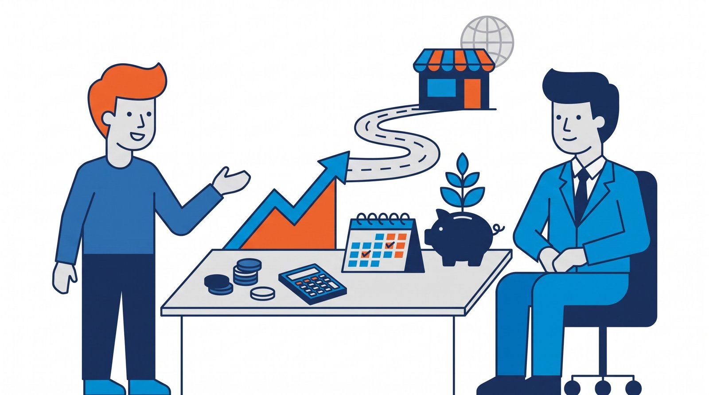
Opening question
A banker reads your business plan. On the forecasts page, he sees
“conversion rate: 3%”. He looks up and asks: “Where does that figure
come from?” What are you going to answer?
Problem
scenario 11: “The banker has three questions”
The situation. BELGA CRAFT has an appointment at the
bank for a 50,000-euro loan. The adviser has read the file and sent
three questions in advance: “Your conversion rate of 2% in Germany,
where does it come from?”, “What happens if the acquisition cost
doubles?”, “In your cautious scenario, in which month is cash at its
lowest, and at how much?” The designer has an Excel file full of figures
and no clear answer. She has also noticed, on re-reading, that the Dutch
market chosen at milestone J2 does not appear in her forecasts, and that
iDEAL, promised at milestone J4, is not in the requirements
specification.
What you must produce. For your project: the
three-year financial model in three scenarios (Excel file provided,
formulas ready), with the origin of each hypothesis, the break-even
point, the cash low point and the financing need; the answer to the
banker’s three questions; and the list of inconsistencies found between
your milestones J1 to J5, corrected.
How it runs (4 periods).
Group analysis (20 min, without the chapter). Clarify:
scenario, break-even point, financing need, cash, “sourced” hypothesis.
State the problem: what is a banker trying to verify with these three
questions? Learning objectives.
Research (30 min). Chapter 11; your own milestones; the
worked example of BELGA CRAFT.
Financial model (1.5 periods). Enter your hypotheses per
market, build three scenarios, test: acquisition cost doubled, return
rate from 10 to 25%, average basket -15%.
Assembly and rehearsal (1.5 periods). Place the milestones
in the structure of the business plan, correct the inconsistencies, then
ten minutes of presentation before another team playing the jury with
the five questions: “Where does your conversion rate come from?”, “Why
this market rather than another?”, “What is your main risk, and how do
you reduce it?”, “What happens if Etsy or Amazon changes its terms?”,
“Show me, in your requirements specification, the section on order
tracking.”
If you get stuck. A conversion rate “comes” from a
sector benchmark, a test, or the company’s current figures; never from
nowhere. The cash low point is not the annual result: it is read month
by month, and it often comes before the sales peak, when stock and
advertising have to be paid for.
For your project. All that remains is to write it
up. Session 12 is the assessment.
11.1 What the business
plan must demonstrate
A business plan answers three questions: is the project desirable
(customers want it), feasible (you know how to do it) and viable (it
makes money)? The pedagogical dossier specifies what it must contain for
learning outcome 1: the choice of the target market, the analysis of
consumers, the analysis of the competition, the web-marketing strategy
along the 4Ps, including distribution and logistics, and the payment
gateways. All of this already exists in your milestones. The business
plan assembles them, makes them consistent and adds the figures.
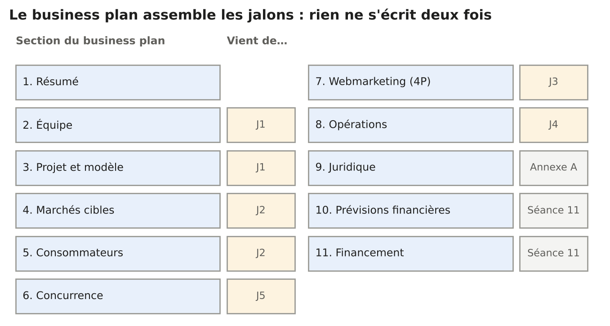
The business plan assembles the
milestones: nothing is written twice
11.2 The structure
Section
Content
Indicative length
1. Summary
The project, the markets, three key figures, the financing need. To
be written last
1 to 2 pages
2. Team
Skills, roles, what is missing and how you make up for it
1 page
3. Project and business model
Offer, value proposition, canvas
2 pages
4. Target markets
Choice matrix, size, trends, launch sequence
2 to 3 pages
5. Consumers
Personas, behaviours, barriers, what your interviews showed
2 pages
6. Competition
Critical analysis of competitors, your positioning
2 pages
7. Web-marketing strategy
4Ps per market, acquisition, conversion, loyalty, budget
3 to 4 pages
8. Operations
Delivery, returns, VAT and customs, payments
2 to 3 pages
9. Legal aspects
Company form, e-commerce obligations, intellectual property
1 page
10. Financial forecasts
Hypotheses, forecast income statement over 3 years, cash flow,
break-even point, scenarios
The sequence: one market after another, or both at
the same time? A sequential launch costs less and allows you to learn; a
simultaneous launch goes faster. Say which and why.
The specific costs: translation and localisation,
adaptation of the site, marketing per market, cross-border logistics and
returns, compliance (VAT per country, legal notices,
accessibility).
The additional risks: currency outside the euro
zone, regulation, culture, dependence on a marketplace or a gateway,
delivery delays.
The indicators per market: traffic, conversion,
basket, CAC, return rate, repeat-purchase rate.
11.4 The revenue model and
the hypotheses
For each market and each year:
Turnover = visitors × conversion rate × average
basket, adjusted for seasonality and repeat purchase.
Variable costs: purchase or manufacture of the
products, marketplace commissions, payment fees, delivery, returns,
packaging. Fixed costs: staff, subscriptions (platform,
apps, gateway), basic marketing, translations, accounting,
insurance.
Each hypothesis must have an origin: a survey of competitors, a
sector average, your own Belgian figures, a quote. Prepare three
scenarios: cautious, central, optimistic. And calculate the
break-even point: the turnover from which the
contribution margin covers the fixed costs.
Market research as a method is explored in depth in UE 714805U32D1;
here, it is a matter of drawing from it figured and defensible
hypotheses.
The
BELGA CRAFT example: its three-year export forecasts
Central scenario hypotheses
Germany
Netherlands
Launch
Etsy in January, site in German in July (year 1)
Site in Dutch in January (year 1)
Visitors year 1 / 2 / 3
60,000 / 80,000 / 100,000
35,000 / 45,000 / 55,000
Conversion rate year 1 / 2 / 3
1.8% / 2.0% / 2.2%
2.0% / 2.2% / 2.4%
Orders year 1 / 2 / 3
1,080 / 1,600 / 2,200
700 / 990 / 1,320
Average basket incl. VAT
€95
€78
Gross margin (after materials and manufacture)
60% of the price excl. VAT
60% of the price excl. VAT
Payment fees
2.4% of turnover
1.0%
Delivery and returns, net of customers’ contribution
€7 per order
€5 per order
Etsy commission (year 1 only)
10% on 40% of German sales
—
Fixed costs of the export activity (thousands of
euros, years 1 / 2 / 3): creation of the German and Dutch versions of
the site 12 / 0 / 0; translations and reviews 6 / 2 / 2; photos, content
and launch 8 / 0 / 0; apps and subscriptions 2.4 / 2.4 / 2.4; marketing
28 / 34 / 40; trilingual customer service (half-time from July of year
1) 11 / 22 / 22; OSS accounting and advice 3 / 3 / 3.
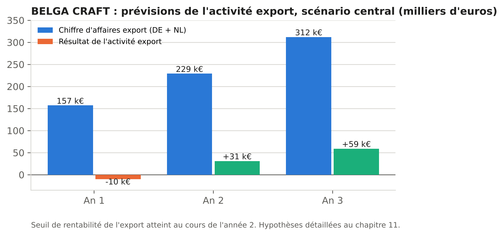
BELGA CRAFT: export activity forecasts,
central scenario
Thousands of euros
Year 1
Year 2
Year 3
Export turnover incl. VAT
157
229
312
Turnover excl. VAT (VAT 19% and 21%)
131
191
260
Gross margin (60%)
79
115
156
Payment, delivery, returns, Etsy commission
-18
-21
-28
Contribution margin
61
94
128
Fixed export costs
-70
-63
-69
Result of the export activity
-10
+31
+59
The break-even point is reached during year 2. The financing need is
around 35,000 euros (the year 1 loss, the cash-flow lag between the
launch costs and the first sales), covered by the self-financing of the
Belgian activity and a bank loan. In the cautious scenario (conversion
rate of 1.4% in Germany and 1.6% in the Netherlands in the first year),
the year 1 loss reaches 23,000 euros, the break-even point moves back to
year 3 and the need rises to 50,000 euros: it is this figure that BELGA
CRAFT retains for its credit application.
Common mistake. Presenting a single, optimistic
scenario, and a financing need calculated on it. The jury, like the
banker, wants to see what happens if conversion is half as much. If the
company survives the cautious scenario, the project is credible.
Self-check
What are the three questions a business plan answers, and which
sections answer them?
List the costs specific to international operations that an
e-commerce business plan must bring out.
BELGA CRAFT targets 60,000 German visitors in the first year. How is
this figure justified? Is it cautious?
Calculate the break-even point of an activity whose fixed costs are
70,000 euros and whose contribution margin is 46% of turnover excl.
VAT.
Why retain the financing need from the cautious scenario rather than
from the central scenario?
Test yourself before moving on. Multiple-choice questions are marked with one click; for open questions, write your answer first, then compare it with the model answer.
Multiple-choice questions
An e-commerce business plan must demonstrate three things to the reader (a banker, a jury). Which ones?
Chapter 11 states that the business plan answers three questions: is the project desirable (customers want it), feasible (you know how to do it) and viable (it makes money). The other triplets mix criteria that do not structure the document.
How is the turnover of a market calculated in the course's revenue model?
The course's formula is: turnover = visitors x conversion rate x average basket, adjusted for seasonality and repeat purchase. The other combinations mix indicators (margin, CAC, return rate) that come in elsewhere in the model, not in the turnover calculation.
What is called the break-even point in financial forecasts?
The break-even point is the turnover at which the contribution margin covers the fixed costs. Not to be confused with the cash low point (a moment in the year) or with a level of turnover observed in a given year.
In the BELGA CRAFT example, why does the cash low point often come before the sales peak?
The chapter insists: the cash low point is read month by month and occurs when the launch expenses (stock, website, marketing) are committed while the sales have not yet followed. It is not the annual result, and this lag explains a good part of the financing need.
Among these costs, which one is a cost SPECIFIC to international e-commerce that a business plan must show specifically?
Section 11.3 lists the costs specific to international activity: translation and localisation, website adaptation, marketing by market, cross-border logistics and returns, compliance (VAT by country, legal notices, accessibility). The manager's salary, raw materials and the basic subscription would also exist for a purely national activity.
Open questions
The banker asks: "What happens if your acquisition cost doubles?" How do you build your answer from your financial model?
You answer with a sensitivity test, not with a reassuring sentence. In the financial model file, you double the acquisition-cost line (the marketing per order) and look at three figures: (1) the contribution margin per market, which shrinks; (2) the result of the export activity, which may swing back into a loss; (3) the cash low point and the financing need, which increase. You then show the banker the corresponding scenario - close to the cautious scenario - and indicate what you would do: reduce spending on the least profitable channels, postpone the launch of the second market, or raise the average basket through cross-selling. The idea to convey: the project survives a doubled CAC (or you say from what level it no longer survives), with figures to back it up.
Calculate the break-even point of an activity whose fixed costs are 70,000 euros and whose contribution margin is 46% of turnover excluding VAT. Then explain what this figure means.
Break-even point = fixed costs / contribution-margin rate = 70,000 / 0.46 = about 152,174 euros of turnover excluding VAT. Meaning: as long as the turnover excluding VAT is below about 152,000 euros, the margin generated on sales (46% of every euro sold) is not enough to cover the 70,000 euros of fixed costs and the activity is at a loss; beyond that, every additional euro of turnover generates 0.46 euros that contributes to the result. It is this level of sales that must be aimed at and dated (which month, which year) in the business plan, and it is this that is compared with the turnover forecast in the cautious and central scenarios to judge the project's credibility.
Why does a serious business plan present three scenarios rather than one, and why adopt the financing need of the cautious scenario?
A single scenario, necessarily optimistic, says nothing about the robustness of the project: the jury and the banker alike want to see what happens if conversion is halved, if the return rate climbs, if the basket falls. You therefore present three scenarios - cautious, central, optimistic - each with its costed and sourced assumptions (sector benchmark, test, current Belgian figures, quotes). You adopt the financing need of the cautious scenario because, if it is underestimated, the company finds itself out of cash at the worst moment. In the BELGA CRAFT example, the central scenario gives a need of about 35,000 euros, but the cautious scenario (conversion of 1.4% in Germany, 1.6% in the Netherlands in the first year) raises it to 50,000 euros: it is this figure that is requested from the bank. If the project survives the cautious scenario, it is credible.
Module 5 · Analyse & plan · Chapter 12 · ~2 min read
The final assessment
Session 12 — 4 periods
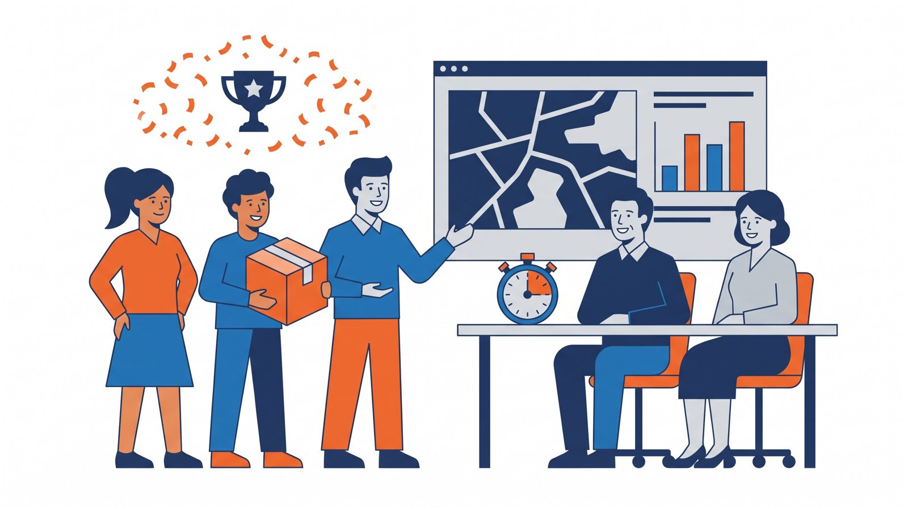
What you submit
One week before session 12, electronically:
The business plan (20 to 30 pages excluding
appendices), with the sections from Chapter 11.
The requirements specification (10 to 15 pages,
mock-ups in an appendix), covering the seven headings for each of your
markets.
The AI usage declaration appendix (one page).
What happens on the day
15-minute presentation: the project, the markets
and why, the customers, the strategy, the operations, the figures, the
need. No reading from the business plan: a story, with figures.
15 minutes of questions: each team member answers
individually. The jury may ask you to open any page of the file.
How you are assessed
The pass threshold (50%) is reached if both learning outcomes are
met: a business plan that contains all the required elements and a
requirements specification that covers the seven headings, correctly and
with supporting arguments. Beyond that, the mark reflects the degree of
mastery: precision, coherence, integration, autonomy (see the Course
presentation).
Tips
Rehearse the presentation out loud, stopwatch in hand. Fifteen
minutes go by fast.
Prepare the answers to the five questions from the Chapter 11
rehearsal. They will be asked.
If an assumption is shaky, say so before you are asked, and say what
you would do if it did not hold.
Bring a printed version of the file: projector failures happen.
Test yourself before moving on. Multiple-choice questions are marked with one click; for open questions, write your answer first, then compare it with the model answer.
Multiple-choice questions
BELGA CRAFT sells its jewellery directly to private individuals via its own website. Which business model does this sale mainly belong to (module 1)?
Selling from a company to consumers is B2C (business to consumer). B2B targets other companies, C2C exchanges between private individuals, B2G sales to administrations. Structured electronic invoicing (Peppol) appears, moreover, only for Belgian business customers, that is, the B2B side.
The guiding thread of the course requires a business project that wants to sell online in how many foreign markets?
From the first session, each project chooses a company that wants to sell in at least two foreign markets. This is what makes the course "international" and justifies milestone J2 (choice of the two markets) and all the work of localisation, logistics and payment by country.
Why should you never forcibly redirect a visitor to the version of his country (modules 2 and 5)?
Language detection must offer, never forcibly redirect: this is a rule of the anti-geoblocking regulation, recalled in the "welcoming visitors" section of the requirements specification. A customer must be able to stay on the version he has chosen.
What is the difference between translating and localising a website (module 2)?
Translating covers only the language; localising goes further - currency, taxes, calendar, content and the market's habits. The audit grid (chapter 9) distinguishes, moreover, "language, currency, taxes, content, calendar adapted" (successful localisation) from mere "translation only".
In the 4P applied to international e-commerce (module 3), what does the "P" for place (distribution) cover?
Learning outcome 1 specifies that the 4P are product, price, promotion, and place (distribution and logistics) - this last P explicitly including payment gateways. Price, promotion and product are the three other P's.
What does the customer acquisition cost (CAC), a key indicator of the web-marketing strategy (module 3), measure?
The CAC is what it costs, on average, to acquire a new customer (advertising, marketing). It is one of the indicators to track by market, and it is one of the assumptions the banker tests ("what happens if the CAC doubles?"). The average basket, the repeat-purchase rate and the margin are other, distinct indicators.
To sell in the Netherlands, which payment method must feature prominently in the checkout funnel (module 4)?
The extract from BELGA CRAFT's requirements specification orders the methods by country: in the Netherlands, iDEAL comes first, then cards, Klarna, PayPal. Bancontact is the Belgian method, and offering the right local methods by country strongly determines conversion.
For a delivery outside the European Union, what must the website mention explicitly (module 4)?
The extract from the requirements specification provides, for destinations outside the EU, an explicit mention of the duties and fees borne by the recipient. Omitting this information exposes the customer to a surprise surcharge on delivery and generates disputes and returns.
Open questions
The jury asks you to prove the CONSISTENCY of your file: "Show the link between your choice of markets (J2), your payment strategy (J4) and your financial forecasts (chapter 11)." How do you respond?
I unfold the chain, piece by piece. J2: I selected Germany and the Netherlands for reasoned reasons (size, proximity, personas). This determines J4: for these two countries I offer the right local payment methods - iDEAL leading in the Netherlands, PayPal and Klarna invoice in Germany, via a gateway (Mollie) - because a bad payment choice makes conversion drop. These same markets and these payment fees are found line by line in the financial model: visitors, conversion rate and average basket per country give the turnover, and the payment fees (2.4% in Germany, 1.0% in the Netherlands in the example) enter the variable costs. The proof of consistency is that no market promised in J2 is missing from the forecasts and no payment method promised in J4 is absent from the requirements specification. This is exactly the inconsistency that BELGA CRAFT had had to correct (the Dutch market absent from the forecasts, iDEAL absent from the requirements specification).
You have 15 minutes to present before the jury. What structure do you adopt, and what mistake must you absolutely avoid?
A seven-part structure, aligned with what the jury expects: (1) the project and its value proposition; (2) the markets chosen and why; (3) the customers (personas, what the interviews showed); (4) the web-marketing strategy (4P, acquisition, loyalty); (5) operations (delivery, returns, customs, payments); (6) the figures (scenarios, break-even point, cash low point); (7) the financing need. The mistake to avoid absolutely: reading out the business plan. You tell a story carried by a few key figures, you do not recite the document. Other pitfalls: going over time (I rehearse out loud, stopwatch in hand, because 15 minutes go by fast), and hiding a fragile assumption - better to flag it yourself and say what you would do if it did not hold. I bring a printed version of the file in case the projector breaks down.
The jury asks: "What is your main risk, and how do you reduce it?" Give a reasoned example for an international e-commerce project.
I name a real risk among those that section 11.3 identifies internationally: dependence on a marketplace or a gateway. Example: if 40% of my German sales go through Etsy in the first year, a change in Etsy's conditions or commissions can eat into my margin overnight - this is, moreover, one of the jury's typical questions. How I reduce it: I use Etsy to acquire my first customers, but I gradually shift traffic to my own website in German (launched in July of year 1 in the example), I capture customers' email for loyalty, and I let the marketplace carry only a decreasing share of the turnover. I can cite other risks depending on the project (currency outside the euro zone, VAT/accessibility compliance, cross-border delivery delays), but the jury expects above all that I show I have a costed reduction plan, not just a list of fears.
This appendix gives the essential reference points for the business
plan (section 9) and the requirements specification (section 7).
International trade law is covered in more depth in course unit
713009U32D2. The rules change fast: always check the version in force on
official websites (FPS Economy, FPS Finance, Data Protection Authority,
European Commission).
A.1 Data protection
The General Data Protection Regulation (GDPR, 2018)
applies as soon as you process the data of people located in the EU, and
it is exported: most major markets have adopted comparable laws (United
Kingdom, Switzerland, Brazil, California, China). For an e-retailer,
this means:
a legal basis for each processing operation (the contract to fulfil
the order, consent for advertising);
a clear privacy policy, in the customer’s language;
respect for individuals’ rights: access, rectification, erasure,
portability, objection;
a register of processing activities and proportionate security
measures;
non-essential cookies subject to prior consent,
with refusal being as easy as acceptance;
the notification of a data breach to the Data
Protection Authority within 72 hours, and informing the individuals if
the risk is high.
Penalties: up to 20 million euros or 4% of worldwide turnover.
A.2 VAT and customs
July 2021 reform: end of the VAT exemption for
small imported parcels; a single threshold of 10,000 euros for distance
sales within the EU, above which the VAT of the customer’s country
applies; the OSS (intra-EU sales) and
IOSS (imports of 150 euros maximum) one-stop
shops.
2026 customs reform: since 1 July 2026, a flat duty
of 3 euros per item on parcels worth less than 150
euros imported into the EU, replacing the exemption.
Electronic invoicing: in Belgium, mandatory between
VAT-registered businesses since 1 January 2026, in a structured format
via the Peppol network (Royal Decree of 14 July 2025). Sales to
consumers are not affected. Fines of 1,500 to 5,000 euros per
breach.
A.3 Consumer protection
Pre-contractual information: identity and address
of the seller, product features, total price, delivery terms, right of
withdrawal, two-year legal guarantee.
Right of withdrawal: 14 days for distance
purchases, refund within 14 days; exceptions (made-to-measure or
personalised goods, perishable goods, digital content, etc.).
Online withdrawal button: mandatory since
19 June 2026 (Directive (EU) 2023/2673): a clearly
identified function, available throughout the withdrawal period, a form,
a confirmation, an acknowledgement of receipt on a durable medium.
Without information about its existence, the withdrawal period is
extended by twelve months.
Price-reduction announcements: the reference price
is the lowest price applied over the previous 30 days (Omnibus
Directive, 2022).
Customer reviews: the site must state whether it
verifies that reviews come from genuine buyers; fake reviews and
paid-for reviews are prohibited.
Misleading practices: false urgency, fake
countdowns, pre-ticked boxes and “dark patterns” are unfair commercial
practices.
Geo-blocking: prohibition on discriminating against
EU customers based on their nationality or place of residence
(Regulation (EU) 2018/302); no obligation to deliver everywhere, but no
refusal to sell and no forced redirection.
Applicable law: a consumer cannot be deprived of
the mandatory protection of the law of their country of residence, as
soon as the site targets that country.
A.4 Platforms and
marketplaces
Digital Services Act (DSA), applicable to all
platforms since 17 February 2024: traceability of professional sellers
on marketplaces, procedures for reporting illegal content and products,
transparency of advertising and recommendation systems, prohibition of
targeted advertising based on the profiling of minors or on sensitive
data. Reinforced obligations for very large platforms (more than 45
million users in the EU), including Amazon, AliExpress, Temu and
Shein.
DAC7: platforms transmit to the tax authorities the
data of sellers who exceed 30 sales or 2,000 euros per year.
“Platform to business” Regulation (2019):
marketplaces owe clear terms and conditions and advance notice of any
restriction or suspension of a professional seller.
A.5 Products
General product safety (Regulation (EU) 2023/988,
known as the GPSR, applicable since 13 December 2024): mandatory online
information (manufacturer, responsible person in the EU, warnings,
product identifier), obligations for marketplaces, recalls.
Sector-specific regulations: cosmetics (CPNP
notification, labelling), toys (CE marking), electronics (CE, equipment
waste, batteries), textiles (fibre labelling), food (allergens,
labelling in the country’s language), etc.
Packaging: contributions to recycling schemes in
each country (Fost Plus in Belgium; specific obligations in Germany via
the LUCID register).
A.6 Accessibility
The European Accessibility Act (Directive (EU)
2019/882) has applied since 28 June 2025 to e-commerce
services aimed at consumers: websites and applications must be usable by
people with disabilities (reference standard EN 301 549, which
incorporates the WCAG criteria). In Belgium, enforcement falls to the
FPS Economy; micro-enterprises (fewer than ten people and less than two
million euros in turnover) benefit from a special regime to be verified.
Penalties provided for in Belgium: fines of up to 200,000 euros or 6% of
turnover.
A.7 Artificial intelligence
The European Artificial Intelligence Regulation (AI
Act, 2024) classifies systems by level of risk. Product recommendations,
dynamic pricing or the chatbots of an online store do not, in principle,
fall under “high risk”. What concerns e-commerce most are the
transparency obligations, applicable since 2 August
2026: informing people that they are interacting with an AI system, and
flagging AI-generated content. The “Digital Omnibus” adopted in 2026
postponed the obligations relating to high-risk systems to December 2027
and August 2028.
A.8 Intellectual property
Protect your brand in the targeted countries: European Union
trademark (EUIPO) or national filings; check availability before
launching a site in a new country.
Monitor counterfeits on marketplaces and use their brand protection
programmes.
Make sure you have the rights to the photos, texts, fonts and music
you use; an image “found on the internet” is not free to use.
A.9 Checklist for your
project
Priority
Point to check
Where in the course
Essential
Legal notices and terms and conditions per country, privacy
policy
Module 5
Essential
Compliant cookie banner
Module 5
Essential
VAT: OSS above 10,000 euros of EU sales; handling of non-EU
sales
Module 4
Essential
Right of withdrawal and online withdrawal button
Module 5
Essential
Site accessibility
Module 5
Essential
Secure payments: strong authentication, PCI DSS via the gateway
Module 4
Important
Product safety information (GPSR) on product pages
Module 3
Important
Rules for announcing prices and reductions
Module 3
Important
Brand protection in the targeted markets
Appendix A
Important
Electronic invoicing for Belgian business customers
Module 1
To anticipate
Transparency about AI usage (chatbots, generated content)
Ten companies — Belgian, European and global: spectacular failures,
consolidations, and genuine successes. For each case, the facts, then
what they mean for your project. The figures come from the cited and
dated public sources; check them before reusing them.
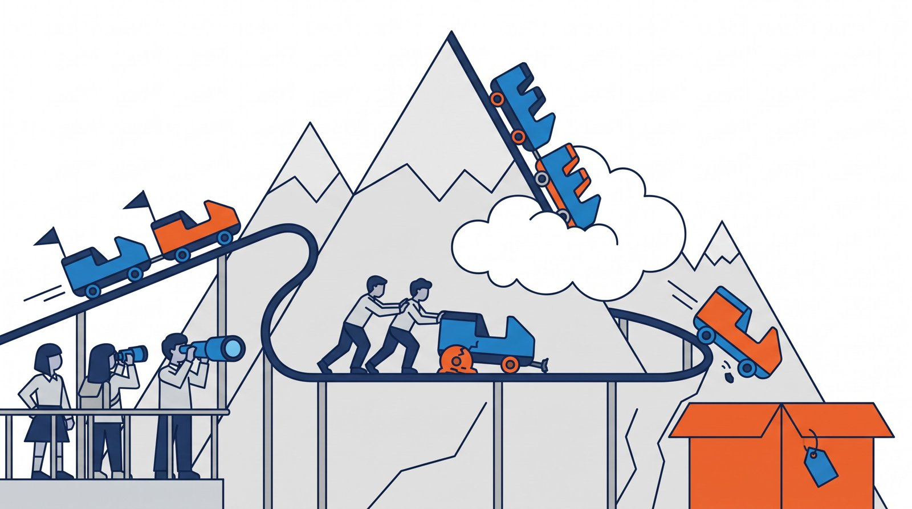
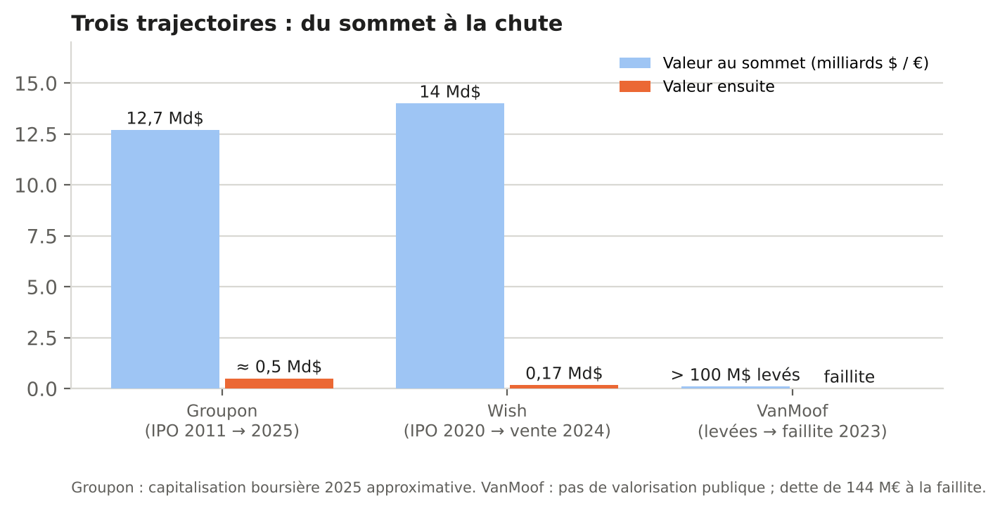
Three trajectories: from the top to the
fall
B.1 Groupon:
growing too fast in too many countries
Sector: local discount vouchers (restaurants,
leisure, services). Model: a platform between
businesses and consumers, earning a high commission on each voucher
sold. Period: since 2008.
The rise. Founded in 2008 in Chicago by Andrew Mason
on a simple idea: a deal of the day at a slashed price, valid only if a
minimum number of buyers commit. In 2010, Groupon bought the German
company CityDeal to establish itself in Europe and refused a takeover
offer from Google of around 6 billion dollars. In November 2011, the
stock market flotation at 20 dollars per share valued the company at
around 12.7 billion dollars.
International expansion. In two years, Groupon
opened or bought sites in dozens of countries. The local teams were
poorly integrated, the technical platforms differed from one country to
another, and in several markets, China foremost among them,
better-adapted local competitors already dominated.
The weaknesses of the model. For the retailer, a
half-price discount plus a commission of around half the remaining price
often left a loss; many customers attracted by the voucher never came
back at the normal price; and the concept, with no barrier to entry, was
copied everywhere.
The decline. Andrew Mason was dismissed in February
2013. Groupon gradually withdrew from many countries, tried product
sales (Groupon Goods, abandoned in 2020) and laid off around 2,800
people in spring 2020.
The recent situation. In 2025, Groupon generated 498
million dollars in turnover (compared with around 1.6 billion in 2011),
with a net loss of 81 million and 16.2 million active customers.
Management speaks of a return to growth “for the first time in ten
years”.
For your project. Do not open more markets than you
can manage. A model must be profitable for all parties, here the
retailers. An acquisition without technical and human integration
destroys value.
Sources: Associated Press and Christian Science Monitor, November
2011; Groupon, annual results 2025.
B.2
VanMoof: selling direct in 32 countries, repairing in none
Sector: electric bikes. Model: a
brand selling direct, online and in its own shops.
Period: 2009-2023.
The success. Founded in Amsterdam in 2009 by Taco
and Ties Carlier, VanMoof designs recognisable bikes, with an integrated
battery, connected geolocation and anti-theft features. It sells direct,
online and in shops in Amsterdam, Berlin, Paris, London, Tokyo and New
York, across 32 countries, and raised more than 100 million dollars from
investment funds.
The problems. The components are specific and hard
to repair outside the VanMoof network, which exists only in a few
cities. From 2021, the complaints multiplied: late deliveries,
electrical failures, repair delays, parts that could not be found. The
model is costly: production in Taiwan, logistics for heavy and fragile
products, after-sales service to be built country by country.
The fall. At the end of June 2023, VanMoof stopped
online sales. On 17 July 2023, the Dutch companies were declared
bankrupt, with a debt of around 144 million euros. In August, the brand
was taken over by Lavoie, a subsidiary of McLaren Applied.
For your project. Selling direct in a country also
means providing after-sales service there. An original product with no
repair network becomes a risk for the customer and for the brand. Growth
financed by fundraising does not replace a positive margin per sale.
Sources: business and trade press, 2021-2023.
B.3 Wish: low prices
without the trust
Sector: low-price general marketplace.
Model: sellers, mostly Chinese, ship directly to
Western consumers. Period: since 2010.
The rise. The most downloaded shopping app in the
United States in 2017, then worldwide in 2018. Stock market flotation in
December 2020, valuation of around 14 billion dollars.
The problems. Uneven quality, delivery times of
several weeks, a gap between the photos and the products received. In
November 2021, the French administration had Wish de-indexed from search
engines and app stores, after checks revealed a high proportion of
dangerous products. Then Temu (launched at the end of 2022) and Shein,
with far larger advertising budgets, took its customers.
The fall. Turnover down 66% in 2022. In February
2024, the platform was sold to the Singaporean company Qoo10 for around
173 million dollars, just over 1% of its 2020 valuation.
For your project. In Europe, product compliance is
not a detail: it can close off access to a market. An advantage based
solely on price does not withstand a cheaper competitor still. Trust
(quality, deadlines, returns) is an asset as important as traffic.
Sources: Inside Retail Asia, February 2024; DGCCRF, November
2021.
B.4
Torfs: a Belgian retailer that paid the price of omnichannel, and is
holding on
Sector: shoes. Model: a Belgian
chain of shops (mainly Flanders) that went omnichannel.
Period: founded in 1948.
The facts. Torfs opened its online shop at the turn
of the 2010s and chose to offer free delivery and returns, so as not to
lose its customers to Zalando. In 2019, e-commerce accounted for 17% of
its sales and grew by 20% per year, but the costs of shipping, returns,
advertising and technology caused operating profit to fall from 4.1 to
1.4 million euros on 145.6 million in turnover; its Dutch shop and its
presence on bol were loss-making. Wouter Torfs, then CEO, put it
bluntly: “These are costs we did not have before.” The company stayed
the course, integrated shops and web (in-store pick-up and returns,
shared stock), and recovered its margins. In 2024, under the leadership
of Lise Conix, turnover reached 206.4 million euros (+4.4%) and
operating profit nearly 19 million (+11%).
For your project. E-commerce has a cost that
physical retail did not have: delivery, returns, online advertising,
technology. Offering free delivery and returns is a strategic choice,
not a detail. Omnichannel (shop and web reinforcing each other) is the
response of an established retailer; a pure online shop must find its
own.
Sources: RetailDetail, 2 August 2019 and 4 April 2025.
B.5 Komono: an Antwerp
brand born global
Sector: watches and sunglasses.
Model: a design brand sold direct and through resellers
worldwide. Period: since 2009.
The facts. Founded in 2009 in Antwerp by Raf Maes
and Anton Janssens, two former professional snowboarders, Komono (“small
things”, in Japanese) designs watches and glasses with an accessible
design. Five years after its creation, the brand was sold in 45
countries, through a network of resellers (concept stores, department
stores) complemented by an online shop. The design and the reseller
network carried the brand internationally even before its site was a
major channel.
For your project. For a small Belgian brand, your
own site is not always the first international channel: local resellers,
niche marketplaces or concept stores can open a country faster and at
lower risk. The site then becomes the place for the direct relationship
and for margin.
Source: Montecristo Magazine, February 2014; check the brand’s
current situation before using it.
B.6 Back
Market: selling trust, not just second-hand
Sector: refurbished electronics (marketplace).
Model: a marketplace that connects professional
refurbishers with consumers, with a guarantee and quality control.
Period: since 2014.
The facts. Founded in 2014 in Paris by Thibaud Hug
de Larauze, Quentin Le Brouster and Vianney Vaute. It sells refurbished
smartphones (around 60% of sales), computers, tablets and consoles,
present in more than 18 countries. In 2025, its gross merchandise value
(GMV) is estimated at 3.5 billion dollars and its own turnover at around
495 million; the company is valued at around 5.1 billion euros — one of
the few European unicorns in e-commerce.
For your project. In a second-hand market, the real
product is trust: a guarantee, quality control and a right of return
turn a risky purchase into a reassuring one. A clear value proposition —
cheaper, greener, and guaranteed — can create an entire category. The
circular economy is a promising positioning in Europe.
Source: Sacra, Back Market profile, 2025.
B.7
Coolblue: winning through service, not through price
Sector: consumer electronics.
Model: an online (and shop) retailer obsessed with
customer service, with delivery handled in-house.
Period: since 1999.
The facts. Founded in 1999 in Rotterdam by Pieter
Zwart. Present in the Netherlands, Belgium and Germany. In 2024, record
turnover of 2.46 billion euros (+2.1%), EBITDA of 97.8 million (+10.8%),
and a Net Promoter Score of 72 — the highest in its history. The company
delivers itself (Coolblue bikes and vans) and takes care of every detail
of the experience, from the packaging to the humour of its customer
service.
For your project. Where prices are transparent and
competition is fierce (Amazon, bol), Coolblue differentiates itself
through service and the relationship — measured and managed daily thanks
to the NPS. Controlling your own delivery means controlling the moment
of truth. An e-commerce business can win without being the cheapest.
Source: Coolblue / Dutch IT Channel, 2024 results;
RetailDetail.
B.8 Zalando: from
retailer to platform
Sector: online fashion. Model: a
retailer that became a platform (marketplace, logistics and services for
brands). Period: since 2008.
The facts. Founded in 2008 in Berlin by Robert Gentz
and David Schneider, initially on the Zappos model (shoes delivered and
returned free of charge). It became the European leader in online
fashion, present in around 25 countries. In 2023, turnover of around
10.1 billion euros (slightly down, -1.9%) for a gross merchandise value
of around 14.6 billion; the company is aiming for 15% of the European
fashion market and is transforming itself into a platform, open to
third-party brands and distributors to whom it rents audience, logistics
and advertising.
For your project. A retailer can become a platform:
instead of just selling, it makes its audience, its logistics and its
technology available to others. Free delivery and returns drove growth…
and weigh on margin: at scale, the question becomes profitability, not
just volume.
Sector: ultra-fast fashion
(ultra-fast-fashion). Model: Chinese design
and production driven by data, direct worldwide sales via an app.
Period: since 2012.
The facts. Founded in 2012 (Chris Xu), headquarters
moved to Singapore. Shein tests thousands of new models per day,
produces in very small runs then restocks the successes; very low prices
and massive marketing on social media. Valued at around 66 billion
dollars in 2023. In Europe, it is under strong pressure: product
compliance, environmental impact, working conditions, and the end of the
customs exemption for small parcels (a 3-euro duty since July 2026 — see
Appendix A).
For your project. Data can replace intuition:
producing small, measuring, restocking what works reduces the stock
risk. But a model based on volume and very low prices is directly
exposed to European regulation; a regulatory advantage (duty-free small
parcels) can disappear overnight.
Sources: business press 2023-2026; Appendix A for the customs
framework.
B.10
Vente-Exclusive: a Belgian pioneer absorbed by a European leader
Sector: flash sales (clearing out big brands at
reduced prices). Model: time-limited sales reserved for
members. Period: 2006-2019 (under this name).
The facts. Founded in 2006 in Belgium by Stefan
Tournoy and Léon Seynave, on the private-sales model (discounts of 30 to
70%, access reserved for members). In 2014, around 4 million members and
90 million euros in turnover. In September 2015, the French company
vente-privee.com took a majority stake, with the Belgian shareholders
keeping 49.9%; the whole was rebranded Veepee in 2019.
For your project. A national pioneer can succeed…
then be absorbed by a European leader with the same model: in
e-commerce, scale matters (purchasing, logistics, technology,
reputation). For an SME, being bought out or aligning with a larger
player is a possible exit, not a failure. The “members + time-limited
offer” model remains a powerful lever — provided you stay honest about
scarcity (see Appendix A, misleading practices).
Sources: BME.be and RetailDetail, 2015; La Libre, January
2019.
B.11 The ten cases in one
table
Company
Sector
Trajectory
The lesson for you
Groupon
Discount vouchers
Peak ($12.7bn) then long decline
Do not open more markets than you can manage
VanMoof
Electric bikes
Bankruptcy (2023)
Selling direct means providing after-sales service everywhere
Wish
Low-cost marketplace
Collapse then resale
Compliance and trust are worth as much as traffic
Shein
Ultra-fast fashion
Contested global success
Volume + low price is exposed to regulation
Zalando
Online fashion
From retailer to platform
A retailer can rent out audience, logistics, technology
Back Market
Refurbished electronics
European unicorn
Sell trust; create a category
Coolblue
Electronics
Profitable growth (NPS 72)
You can win through service, not price
Vente-Exclusive
Flash sales
Belgian pioneer bought out
Scale matters; being bought out is an exit
Torfs
Shoes
Profitable omnichannel
Measure the real cost of the web (delivery, returns)
Komono
Watches and glasses
Belgian brand gone global
Resellers open a country faster than your own site
Practice case — BELGA CRAFT, from zero to the assessment
You have followed BELGA CRAFT throughout the course. This case
invites you to redo the journey on your own, as practice for the final
assessment. It is not graded. The sector data are
fictional and serve only for the exercise.
C.1 The file
BELGA CRAFT, a maker of handcrafted jewellery in Brussels, generates
450,000 euros in turnover, 85% of it via its online site, among Belgian
customers. Three people: the maker, a marketing manager, a logistics and
workshop manager. Made to order in three to five days. An Instagram
community of 18,000 followers. The company wants to sell in Germany and
the Netherlands within 18 months, with a budget of 150,000 euros.
Sector data (fictional)
Indicator
Belgium
Germany
Netherlands
Online jewellery market
€310 million
€2.1 billion
€480 million
Annual growth
+6%
+8%
+12%
Average basket
€85
€95
€78
Average return rate (jewellery)
8%
14%
10%
Seasonality: 40% of turnover in the fourth quarter, 25% in the second
(Mother’s Day). Competition: Pandora, Thomas Sabo, maker marketplaces,
local makers.
C.2 The instructions
Diagnosis. SWOT of BELGA CRAFT for going
international: three strengths, three weaknesses, three opportunities,
three threats specific to cross-border.
Markets and customers. Redo the
attractiveness-feasibility matrix, adding Austria and Denmark. Write a
persona for the Netherlands.
Competition. Analyse, with the grid from Chapter 9,
the site of a German or Dutch jewellery maker of your choice.
Strategy. 4P grid for the two markets; acquisition
channels and budget; retention mechanism.
Operations. Delivery model and returns policy per
market; landed cost of a 95-euro order to Germany, the Netherlands and
Switzerland; payment methods and gateway.
Requirements specification. Write the seven
headings for the Dutch version of the site.
Forecasts. Redo the three-year forecasts with your
own assumptions, in three scenarios; calculate the break-even point and
the financing need.
Defence. Prepare a fifteen-minute presentation and
the answers to the five questions from Chapter 11.
C.3 Review questions
What are the advantages and disadvantages of the B2C, B2B, C2C and
B2G forms in an international context? One Belgian or European example
for each.
How do you set different prices across EU countries without
breaching the anti-geo-blocking regulation?
Why can the absence of Bancontact on a foreign site cause you to
lose Belgian customers? What are the equivalents in two other
countries?
Calculate the landed cost of a piece of jewellery of 80 euros
excluding VAT sold to a Swiss customer, line by line.
What distinguishes an international e-commerce business plan from a
domestic e-commerce business plan?
Which legal obligations that came into force between 2024 and 2026
must appear in a requirements specification?
A competitor displays “-40%” on a product whose price has not moved
in six months. What does the rule say, and what does the competitor
risk?
Your Dutch conversion rate is half your Belgian one. Give five
hypotheses, from the most likely to the least likely, and say how to
check each one.
The templates below are to be copied out or requested from the
teacher in Word or Excel format.
D.1 Company sheet (milestone
J1)
Heading
Your answer
Name, legal form, registered office
Activity and products
Current turnover, online share
Team and skills
Main and secondary e-commerce form
Current channels
International ambition (why, where, when)
Context paragraph with figures (3 to 5 sourced figures)
D.2 Business Model Canvas
Nine boxes, on one page: key partners · key activities · key
resources · value proposition · customer relationship · channels ·
customer segments · cost structure · revenue streams. A blank template
on strategyzer.com. Mark with an asterisk everything that changes
because of going international.
Each tool fits in a few lines: what it is for, how to start, one
pitfall to avoid.
Google Trends (trends.google.com). Compares
interest in search terms by country and over time. Start by choosing the
country at the top, then compare two or three phrasings in the local
language. Pitfall: the curves are relative (100 = the maximum of the
period), not volumes.
Google Keyword Planner (within a free Google Ads
account). Gives monthly search volumes by country and by language.
Pitfall: you must select the country and the language, otherwise the
figures are those of your own country.
PageSpeed Insights (pagespeed.web.dev). Measures
the speed and Core Web Vitals of a page, on mobile and desktop. Test the
home page and a product page. Pitfall: a score is not an overall mark
for the site; read the three indicators.
Similarweb, free version (similarweb.com). Estimates a
site’s traffic, the countries its visitors come from and its traffic
sources. Pitfall: the estimates are unreliable for small sites.
Wappalyzer (browser extension). Identifies a site’s
platform, payment gateway and tools. Useful for competitor analysis.
Hofstede Insights, country comparison (hofstede-insights.com).
The six dimensions for most countries. Pitfall: national averages, not
individuals.
Access2Markets (trade.ec.europa.eu/access-to-markets).
The Commission’s official tool for finding out customs duties, taxes and
formalities by product and by country. You need the product’s
nomenclature code (HS).
Eurostat (ec.europa.eu/eurostat).
European statistics on internet use and online purchases, by country and
by age. Search for “E-commerce statistics for individuals”.
Looker Studio (lookerstudio.google.com).
Free dashboards connected to Google Analytics, Google Ads or a
spreadsheet. For the per-market management dashboard.
Canva and Figma (free versions).
Page mock-ups, personas, visuals. Figma for site mock-ups, Canva for the
rest.
Miro (free version). A collaborative whiteboard for
the canvas, the personas and the customer journeys.
DeepL (deepl.com). High-quality machine
translation for a first version. Pitfall: have it proofread by a native
speaker before publishing.
Mollie and Stripe, test environments. To see a
Bancontact, iDEAL or card payment work without real money. Free
account.
Cart abandonment — The customer adds items to the
basket but does not complete the purchase. Leading causes: fees
discovered late, a missing payment method, a mandatory account.
API — An interface that lets two pieces of software
communicate: the site with the payment gateway, the carrier, the
accounting system.
CAC (customer acquisition cost) — Acquisition
spending divided by the number of new customers.
CLV (customer lifetime value) — The total margin a
customer brings over their entire relationship with the company.
Core Web Vitals — Three Google indicators that
measure a page’s display speed, responsiveness and visual stability.
D2C (direct-to-consumer) — A brand that sells
directly to the consumer, without a distributor or marketplace.
Dropshipping — The seller holds no stock: the
supplier ships directly to the customer.
Marketplace — A platform where many sellers offer
their products (Amazon, bol, Zalando, Etsy, Vinted) in exchange for a
commission.
M-commerce — Commerce conducted on a smartphone or
tablet.
E-commerce platform — Software for creating and
managing an online store (Shopify, WooCommerce, PrestaShop, Shopware,
etc.).
Chargeback — Cancellation of a card payment at the
customer’s request to their bank; costs the merchant the amount and
fees.
Social commerce — A purchase made directly within a
social network.
Conversion rate — The share of visitors who carry
out the target action, usually the purchase.
Return rate — The share of orders sent back. High in
fashion, especially in Germany.
A/B test — A comparison of two versions of a page
shown at random to two groups of visitors.
Concepts specific to
international trade
HS code (harmonised system) — The international code
for classifying goods, which determines customs duties.
Cross-border — A sale to a customer located in a
country other than the seller’s.
DAP / DDP — Two Incoterms used for delivery to the
consumer: under DAP, the customer pays VAT, duties and fees at import;
under DDP (delivered duty paid), the seller pays them and includes them
in the price.
Geo-blocking — Blocking or redirecting a customer
according to their country; regulated in the EU by Regulation (EU)
2018/302.
hreflang — A tag that tells search engines the
language and country targeted by a page.
Incoterms — International Chamber of Commerce rules
allocating costs and risks between seller and buyer (course unit
719105U32D2).
Direct injection — Grouping the parcels destined for
a country in order to hand them over in one go to that country’s
distribution network.
IOSS — A one-stop shop for VAT on goods imported
from third countries, for consignments of 150 euros maximum.
Localisation — The complete adaptation of a site to
a market: language, currency, units, payments, content, visuals,
calendar.
OSS — A one-stop shop for declaring in Belgium the
VAT due in other EU countries on distance sales.
Landed cost — The total cost for the customer:
product, delivery, VAT, duties, customs clearance fees.
Payment
3D Secure 2 — A cardholder authentication protocol
that implements strong authentication.
Acquirer — The institution that receives payments on
behalf of the merchant.
Strong authentication (SCA) — Verification of the
payer by at least two elements, required by the PSD2 directive.
Bancontact — The Belgian payment network (Bancontact
cards and the Bancontact Pay app), essential for Belgian consumers.
BNPL (buy now, pay later) — Deferred or instalment
payment (Klarna, payment in three instalments).
iDEAL — The dominant payment method in the
Netherlands.
Payment gateway (PSP) — The provider that transmits
and secures payments (Mollie, Stripe, Adyen, Worldline).
PCI DSS — The security standard for payment card
data.
Tokenisation — Replacing the card number with a
token that is worthless to a fraudster.
Wero — A European payment solution from the European
Payments Initiative (EPI), available in Belgium.
Digital marketing
CRO — Conversion rate optimisation.
CTR (click-through rate) — The share of people who
click after seeing a link or an advert.
GEO (generative engine optimization) — Techniques
for being cited by AI assistants (ChatGPT, Perplexity, Gemini).
Remarketing — Advertising shown to visitors who did
not buy.
ROAS — The turnover generated per euro of
advertising.
SEA — Paid search (Google Ads, Microsoft Ads).
SEO — Organic search.
Bounce rate — The share of visitors who leave the
site after a single page.
Building your online store with Shopify (and its limits)
This course gives you the method: choosing a market,
understanding its customers, building a strategy, writing a requirements
specification. It imposes no tool on you. But at the end of every
session the same concrete question comes back: “All right, but what do I
build the site with?” For an SME selling internationally, the most
frequent answer is Shopify. This appendix explains how
you create a Shopify store, what it really costs, and — just as
importantly — where its limits are. No tool is neutral: knowing what you
gain and what you lose by choosing it is part of the requirements
specification.
H.1 Shopify in the
landscape of solutions
To build an online store, there are three main families of
solutions.
Family
Examples
Principle
You own…
Hosted SaaS
Shopify, Wix, Squarespace
You rent a turnkey platform, hosted by the provider
Your data and your content, not the platform
Self-hosted open source
WooCommerce (WordPress), PrestaShop
You install free software on your own hosting
Everything, but you manage everything
Marketplace only
Amazon, Etsy, bol
You open a shop within someone else’s marketplace
Nothing: you are a tenant of an audience
Shopify belongs to the first family: it is a SaaS
solution (software as a service), created in Canada in 2006, which today
runs several million stores. You manage neither the server, nor security
updates, nor the HTTPS certificate: everything is taken care of. In
exchange, you pay a monthly subscription and you agree to work within
the framework that Shopify has set. That is exactly the trade-off to
understand before choosing.
The choice of solution is not the choice of channel. Remember Chapter
2: your own site or a marketplace? Shopify is a tool for building
your own site (D2C). It can also connect to
marketplaces (Amazon, Etsy, bol) to synchronise your products, but it
does not exempt you from the channel decision.
H.2 Creating a
Shopify store, step by step
Here is the typical journey, from sign-up to launch. Each step refers
back to the chapter of the course that tells you what to
decide; Shopify merely carries out the decision.
Open a trial. Shopify offers a free trial of a few
days, then often a first one to three months at a token rate. You create
an account and give the store a provisional name.
Choose a plan. Basic to start, an intermediate plan
as volume grows (see H.3). You can change later.
Connect your domain name. Buy your domain (from a
Belgian registrar or from Shopify) and point it to the store. A domain
of your own (yourbrand.be) inspires more confidence than a
.myshopify.com subdomain — it is a trust signal in the
sense of Chapter 4.
Choose and customise a theme. Shopify provides free
and paid themes (around 200 to 400 $ one-off for premium themes).
Customisation is done without code, in blocks; advanced code uses
Shopify’s own Liquid language.
Create the product pages. Title, description,
photos, variants (size, colour), stock, price. This is where perceived
quality is decided: careful photos, descriptions that answer the
objections (Chapter 6).
Set up payments. Activate Shopify
Payments or a third-party provider such as
Mollie or Stripe. To sell in Belgium
and the Netherlands, check for the presence of
Bancontact and iDEAL, not just the
card (Chapter 8). It is decisive: a missing local payment method causes
cart abandonment.
Set up delivery. Define your zones, your rates,
your carriers and your pick-up points (Chapter 7). Display a delivery
time you can keep to.
Configure taxes. Shopify calculates VAT by country.
Link this setting to your real situation: above 10,000 € of distance
sales within the EU, it is the VAT of the customer’s country via the
OSS one-stop shop (Chapter 7 and Appendix A).
Switch the store to several languages. With
Shopify Markets and the Translate &
Adapt app, you manage languages, currencies and prices per
market. Machine translation gets you a rough first draft; proofreading
by a native speaker remains essential (Chapter 4).
Add the legal pages, then test and launch. Terms
and conditions of sale, legal notices, returns and privacy policy
(Appendix A). Place a test order end to end (payment, confirmation
email, invoice), then remove the store’s password: you are online.
For your project. You do not need to actually build
the store for the assessment. But your requirements specification must
describe, heading by heading (the seven from Chapter 10), what the store
must do. The ten steps above are a good checklist: for each one, what do
you require?
H.3 How much it really costs
The displayed price is only part of the bill. Count four items.
Item
Order of magnitude (to be checked on shopify.com)
Monthly subscription
Basic of the order of 25-30 € / month on an annual plan;
intermediate plan ~80 €; advanced plan significantly more
Shopify transaction fees
0% if you use Shopify Payments; otherwise a surcharge of the order
of 0.5 to 2% depending on the plan
Bank fees on each payment
of the order of 1.5 to 2.9% + a few cents per transaction, as with
any payment provider
Apps and theme
from 0 to several tens of euros per month depending on the apps
added; premium theme ~200-400 $ one-off
Two cost traps always come up. First, the apps that pile
up: customer reviews, loyalty, emails, translation, each at
5-30 € per month, and the bill doubles without your noticing. Second,
the transaction surcharge if you refuse Shopify
Payments: on a turnover of 100,000 €, 1% represents 1,000 € per year
that leave on top of the bank fees.
True to the rule of this course: do not take these figures as they
are into your business plan. Prices change often; check them and date
them.
H.4 The critique: Shopify’s
limits
Shopify is popular because it is quick to launch and reliable. But a
serious requirements specification also names the drawbacks.
You rent, you do not own. As long as you pay, all
is well. The day you stop, the store goes dark. You own neither the code
nor the platform: you own your customer data and your content, which you
can export.
Dependency (lock-in). Migrating from
Shopify to another solution is heavy: a theme to redo, apps to replace,
URLs to redirect. The bigger the store grows, the more expensive leaving
becomes.
The cost that climbs with success. The subscription
and above all the apps increase with volume and needs. What cost 30 € at
the start can exceed 200 € per month after two years.
Constrained customisation. You quickly get 90% of
what you want, but the last 10% runs up against the framework of Shopify
and Liquid. Certain very specific business logics are
difficult, even impossible, without a specialist developer.
Rules you do not control. Shopify sets its terms,
its rates and the categories of products allowed, and can change them.
As with a marketplace, a suspension of your account is possible in the
event of a dispute.
A foreign player. Shopify is Canadian/American.
Your data is processed partly outside the European Union: check the GDPR
clauses and the location of the hosting, especially in B2B or for
sensitive data.
On the other side, the alternatives have their own trade-offs.
WooCommerce (open source, grafted onto WordPress) and
PrestaShop (open source, of European origin) give you
back full ownership and total freedom — but you inherit the hosting, the
security updates, the backups and the outages. You do not remove the
cost: you shift it from rent to time and technical skill.
Common mistake. Choosing Shopify “because everyone
uses it”, without having checked that it offers Bancontact and iDEAL in
your markets, nor calculated what the apps you will need will cost. The
right reflex: start from your requirements specification (what the site
must do) and check, point by point, that the tool does it — and at what
price.
H.5 Shopify or an
alternative: how to decide
A simple grid, in the spirit of Chapter 2.
Your situation
Reasonable option
SME, small team, no developer, fast international launch
Shopify (SaaS): the time saved is worth the rent
Already a WordPress site, a tight budget, in-house technical
skill
WooCommerce: you reuse what you already have
Need for strong business customisation, a technical team, high
volume
Open source (PrestaShop, WooCommerce) or a bespoke solution
Simply testing a market, a few products
A marketplace first (Etsy, Amazon, bol), then your own site
There is no universal right answer: there is the answer that is
coherent with your business model, your means and your requirements
specification.
H.6 BELGA CRAFT: what
it chooses, and why
Remember: the maker at BELGA CRAFT already has a Shopify site, and
her developer wants to “just add German and Dutch”. Her choice holds up,
for three reasons: her three-person team has no technical profile to
manage a server; Shopify Markets lets her open Germany and the
Netherlands without rebuilding the site; and the time saved can go to
the product and the marketing, where her difference is made. She
knowingly accepts the limits of section H.4: the monthly rent, the
dependency, and the fact that she does not own the platform. In return,
she writes into her requirements specification two non-negotiable
requirements — Bancontact and iDEAL at the checkout, and a human
proofreading of the German and Dutch translations — precisely because
these are the points where a turnkey tool can create a false
impression.
For your project. In your requirements
specification, devote a short paragraph to the choice of the technical
solution: which one, why, and which limits you accept. A jury rarely
remembers the tool chosen; it remembers that you knew what that choice
implied.
A printed course ends on its last page. An online course doesn’t: here is where to keep learning, stay up to date and get inspired. Everything is free. And if you find something better, tell me — these lists will grow with you.
Channels and creators to follow
YouTubers who talk about business, tech and consumption — watch them with the same critical eye as the rest of the course (most are in French).
Léo Duff — breaks down tech and e-commerce models with humour. example: Temu’s plan
For your project. Pick one channel and one newsletter to follow for the whole course: ten minutes a week is enough to spot a trend or a competitor before everyone else.
The course gives you the method: choosing a market, understanding your customers, selling, shipping, getting paid. For ideas and entrepreneurial inspiration, I have a separate publication, StartupScan, which every week tells the story of business models from around the world. Use it to feed your running project — not to copy, but to get inspired.
Where to look on StartupScan
The latest issue — companies taken apart, with the lesson to draw from each.
All the cards — the full library, filterable by model (B2C, B2B, B2G…).
“Who pays?” — revenue models explained: who pays, for what, how.
This course is alive and gets better with your feedback. Spotted a mistake? Found a great video? Thought of a company that would make a good case study? A question about a chapter? Tell me — that’s how we build something together rather than a frozen document.
Want to go further?
If you launch your project during or after the course, tell me about it: the best ones become case studies for later cohorts, and some find their place in StartupScan. What matters isn’t finishing the course — it’s creating something.
Sign in with your student number to track your progress, your quiz scores, and see where you stand (anonymously) in the group. The course works perfectly without an account — it's your choice.
Information notice — personal data (GDPR)
Why? To let you track your progress and see where you stand anonymously in the group, and to let the teacher see the class's progress.
Data processed: your student number and your course activity (chapters read, quiz scores). Nothing else: no name, no email.
Legal basis: your consent. It is optional and reversible.
Controller: Olivier Willocx — olwillocx@epfc.eu.
Hosting: OVH server in Europe; database not publicly accessible; access protected by your PIN.
Ranking: you see your position, never anyone else's name or score. No grade, no effect on passing the course unit.
Retention: deleted at the end of the academic year. You can delete your data at any time (button once signed in) or email olwillocx@epfc.eu.
Signed in:
–overall score
–chapters read
–quiz average
Formative tracking, not graded. Data can be deleted at any time.